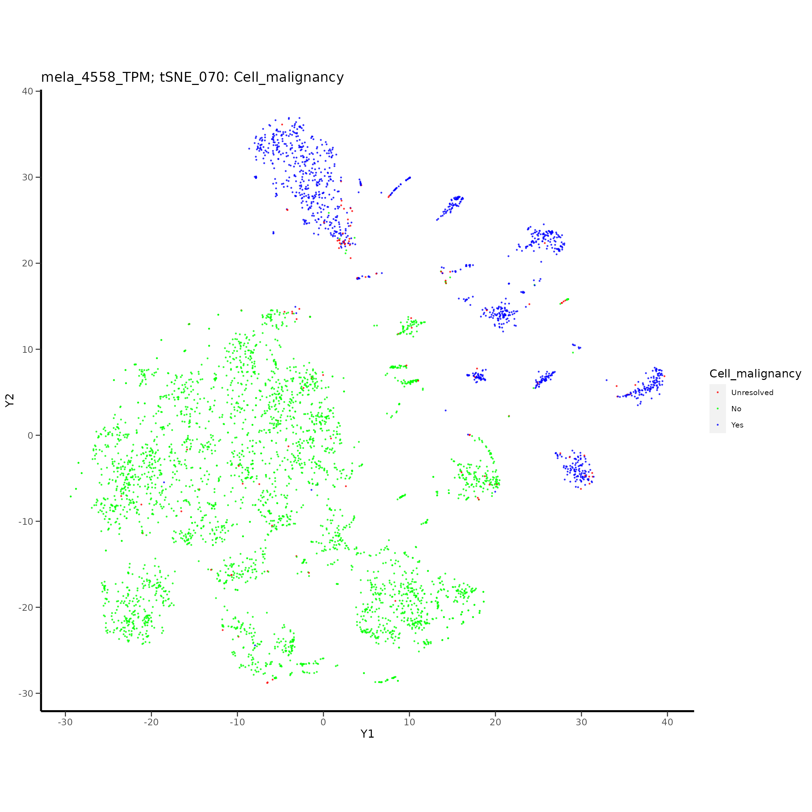
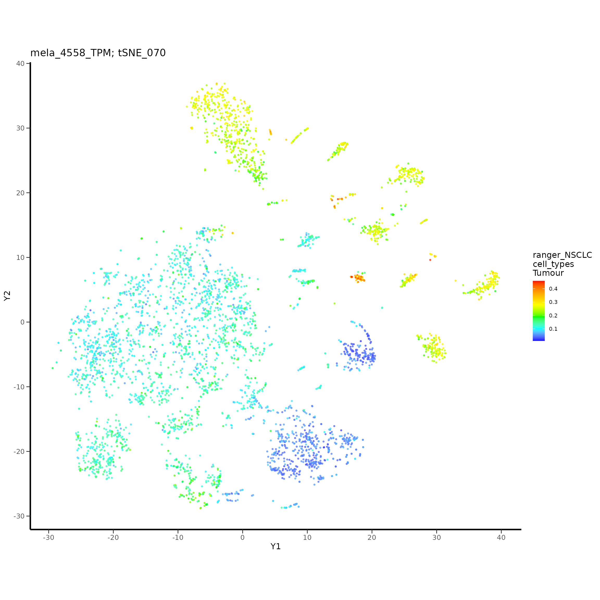
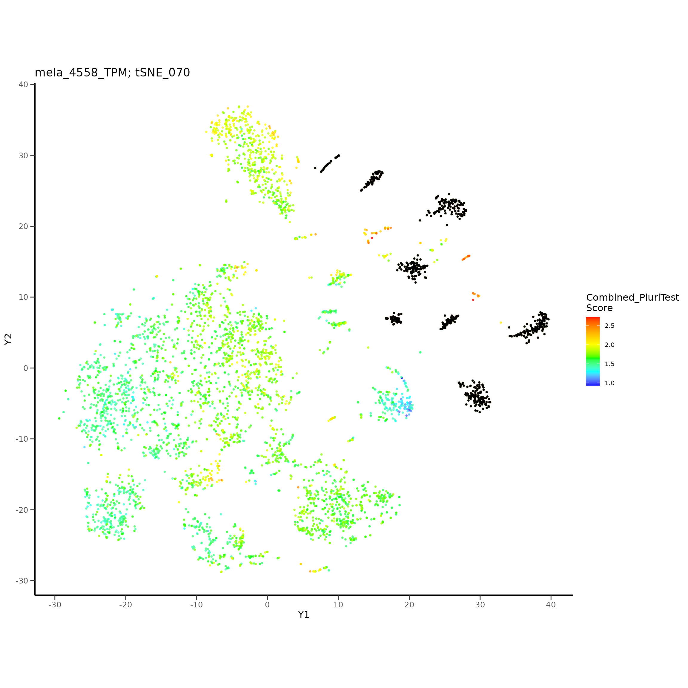
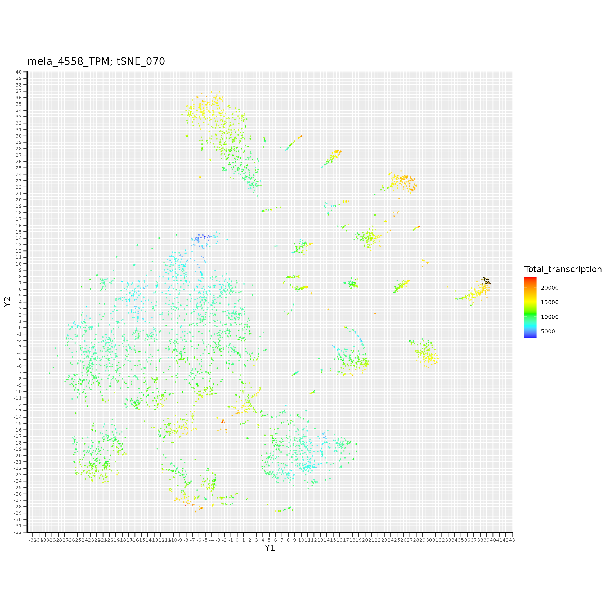

CSCPlots Tutorial 2
tutorial_2.RmdTutorial 2: Identifying and Characterising Cancer Stem Cells In Melanoma Single-Cell RNA-Seq
Tutorial 2 uses a melanoma scRNA-Seq dataset published by Tirosh et al. (Science 2016).
A pipeline will be constructed using functions from the CSCPlots package. This will follow these steps:
- generate a t-SNE;
- predict stemness in each of the cells, using HipSci iPS expression profiles (RNA-Seq);
- identify genes associated with higher stemness and very high transcription, in malignant melanoma cells;
- use the t-SNE to select putative cancer stem cells, by using the stemness predictions and other information such as transcription gradients and predicted cell types;
- detect preferential expression in the selected putative cancer stem cells using a TPM Count Fractions matrix, to find genes driving these cells.
Step 1: t-SNE Generation
Create the results directories, and load the melanoma expression data included with this package.
library("Matrix")
library("biomaRt")
library("gtools")
library("Rtsne")
library("caret")
library("ranger")
library("e1071")
library("randomForest")
library("ggplot2")
library("ggrepel"); options(ggrepel.max.overlaps = Inf)
library("cscplots")
project_name <- "mela_4558_TPM"
wd <- './' # set the working directory
saveDir <- paste0(wd, 'save/')
resultsBaseDir <- paste0('results/')
resultsDir <- paste0('results/', project_name, '/')
tSNEsDir <- paste0(resultsDir, 'tSNEs/')
pCSCsDir <- paste0(tSNEsDir, "pCSC_group_selection/")
prefExprDir <- paste0(resultsDir, "preferential_expression/")
saveDir <- paste0(wd, 'save/')
dataDir <- paste0(wd, '../data/')
dir.create(saveDir, showWarnings = FALSE)
dir.create(resultsBaseDir, showWarnings = FALSE)
dir.create(resultsDir, showWarnings = FALSE)
dir.create(tSNEsDir, showWarnings = FALSE)
dir.create(pCSCsDir, showWarnings = FALSE)
dir.create(prefExprDir, showWarnings = FALSE)
dir.create(dataDir, showWarnings = FALSE)Generate a t-SNE using the melanoma scRNA-Seq expression matrix. The recommended perplexity parameter value to use for the t-SNE is 70, but you can use a list of perplexity values to generate multiple t-SNEs, if you prefer.
#perplexityValues <<- c(5, 6, 7, 8, 9, 10, 20, 30, 40, 50, 60, 70, 80, 90, 100, 110, 120, 130) # using this range is helpful, but takes longer
perplexityValues <<- c(70)
perplexityValuesPrint <- add_zeros_to_perplexity_values(perplexityValues)
tSNE_run_names <- paste0("tSNE_", perplexityValuesPrint)
outDir <- tSNEsDir
set.seed(50) # for reproduction of results in the literature, but comment this out if you would like unfixed results
# Data available automatically in this package is also available from https://www.ncbi.nlm.nih.gov/geo/query/acc.cgi?acc=GSE72056
tTPM_mela_4558 <- rbind(tTPM_mela_1_2500, tTPM_mela_2501_4558)
tTPM_mela_1_2500 <- NULL
tTPM_mela_2501_4558 <- NULL
# tTPM_mela_4558[1:10,1:10]
mela_4558_TPM_tSNE_results <- run_all_tSNEs(perplexityValues, tTPM_mela_4558, project_name, outDir, montage <- 0)
#> Perplexity = 70
save(mela_4558_TPM_tSNE_results, file = paste0(saveDir, "mela_4558_TPM_tSNE_results.RData"))
#load(paste0(saveDir, "mela_4558_TPM_tSNE_results.RData"))
# Add to results to a list, which allows you to add further t-SNEs later (e.g. using subsets of the cell population):
mela_tSNE_list <- list()
mela_tSNE_list[[1]] <- mela_4558_TPM_tSNE_results
names(mela_tSNE_list)[1] <- project_nameStep 2: Stemness Predictions
In the same way as demonstrated in tutorial 1, each cell in the melanoma population of cells will be scored using its probability of being a stem cell.
The stemness probabilities are generated using random forests, that are trained on stem cell (iPSC) RNA-Seq expression data from the HipSci consortium. The likelihood that each of the cancer cells are stem cells, is relative to fibroblasts and mononuclear cells.
These stemness scores will be used later to assist the identification putative cancer stem cells.
We’ll use three random forest implementations (ranger, rf, randomForest) separately, so that we can compare and contrast the results later, e.g. comparing them within a t-SNE can give greater confidence when selecting pCSCs.
number_of_genes_to_use <- 16000
#number_of_genes_to_use <- 10000 # can give reasonable results
#number_of_genes_to_use <- 16700 # fails on my R installation
# Put the melanoma expression matrix in a list first:
mela_tTPM_list <- list()
mela_tTPM_list[[1]] <- tTPM_mela_4558
names(mela_tTPM_list)[1] <- "mela_4558_TPM"
mela_stemness_prediction_DFs_lists <- list()
mela_stemness_prediction_DFs_lists[[1]] <- run_ML_stemness_predictors(model_type <- 'ranger', mela_tTPM_list, hipsci_training_data,
stemness_type <- 'hipsci', number_of_genes_to_use, sample_data_type <- 'TPM', resultsDir)
#> [1]:mela_4558_TPM
#> Overlapping genes between sample and stemness data = 19690
#> Start of predictions
#> Predictions: testing
#> Probabilities: testing
#> Predictions: mela_4558_TPM
#> Probabilities: mela_4558_TPM
#> ML stemness predictions completed
names(mela_stemness_prediction_DFs_lists)[1] <- "ranger_hipsci_TPM"
mela_stemness_prediction_DFs_lists[[2]] <- run_ML_stemness_predictors(model_type <- 'rf', mela_tTPM_list, hipsci_training_data,
stemness_type <- 'hipsci', number_of_genes_to_use, sample_data_type <- 'TPM', resultsDir)
#> [1]:mela_4558_TPM
#> Overlapping genes between sample and stemness data = 19690
#> Start of predictions
#> Predictions: testing
#> Probabilities: testing
#> Predictions: mela_4558_TPM
#> Probabilities: mela_4558_TPM
#> ML stemness predictions completed
names(mela_stemness_prediction_DFs_lists)[2] <- "rf_hipsci_TPM"
mela_stemness_prediction_DFs_lists[[3]] <- run_ML_stemness_predictors(model_type <- 'randomForest', mela_tTPM_list, hipsci_training_data,
stemness_type <- 'hipsci', number_of_genes_to_use, sample_data_type <- 'TPM', resultsDir)
#> [1]:mela_4558_TPM
#> Overlapping genes between sample and stemness data = 19690
#> Start of predictions
#> Predictions: testing
#> Probabilities: testing
#> Predictions: mela_4558_TPM
#> Probabilities: mela_4558_TPM
#> ML stemness predictions completed
names(mela_stemness_prediction_DFs_lists)[3] <- "randomForest_hipsci_TPM"
save(mela_stemness_prediction_DFs_lists, file = paste0(saveDir, "mela_stemness_prediction_DFs_lists.RData"))
#load(paste0(saveDir, "mela_stemness_prediction_DFs_lists.RData"))Step 3: Calculate Total Transcription & Total Transcribed Genes
Total transcription (all expression in all transcripts) for each cell, and total transcribed genes (sum of all expression in all transcripts) for each cell, can be useful in evaluating the t-SNE for cells that are highly transcriptionally active. We’ll collect that info now:
mela_total_transcription_levels_list <- list()
mela_total_transcribed_genes_list <- list()
cohort_index <- 1 # only 1 cohort being used in this project i.e. all 4558 melanoma population cells from multiple patients
df <- tTPM_mela_4558
total_transcription_levels <- rowSums(df)
total_transcribed_genes_vec <- vector()
for(i in 1:nrow(df)){
thisCount <- sum(df[i,] >= 1)
if(is.na(thisCount)){ cat("Is na\n") }; if(thisCount <= 0){ cat("0 or less\n") }
total_transcribed_genes_vec[[i]] <- thisCount
}
names(total_transcribed_genes_vec) <- rownames(df)
#print(cor.test(as.numeric(total_transcribed_genes_vec), as.numeric(total_transcription_levels), method="pearson")) # cor 0.9739835
mela_total_transcription_levels_list[[cohort_index]] <- total_transcription_levels
mela_total_transcribed_genes_list[[cohort_index]] <- total_transcribed_genes_vec
names(mela_total_transcription_levels_list)[cohort_index] <- project_name
names(mela_total_transcribed_genes_list)[cohort_index] <- project_name
df <- NULLStep 4: t-SNE Analysis
We’ll now explore the t-SNEs, with the assistance of the the stemness scores generated in step 2. Our aim is to select subsets of cancer cells for each patient for further analysis as pCSCs; we’ll look for cells that have high transcription and high predicted stemness. This will also consider the t-SNE topology, for example if there are clusters of cells, with these features.
It’s recommended to view plots in this tutorial using the high resolution tif files that are generated, which will help you to work precisely with small numbers of cells.
4a): Annotate the t-SNEs
Add the cell scores that we have already, to a t-SNE list for subsequent plotting and analysis:
mela_tSNE_list_with_annotations <- list()
stemness_score_indices_to_use <- c(2,2,2) # use 2 for HipSci IPS predictions (1 for fibro & 3 for mononuclear)
cohort_index <- 1 # only 1 cohort used in this project
tSNE_results_with_annotations_tmp <- mela_tSNE_list[[cohort_index]]
tSNE_results_with_annotations_tmp <- add_scores_to_tSNE_results(tSNE_results_with_annotations_tmp, perplexityValues,
scores <- as.numeric(mela_total_transcription_levels_list[[cohort_index]]),
scoresName <- "Total_transcription")
tSNE_results_with_annotations_tmp <- add_scores_to_tSNE_results(tSNE_results_with_annotations_tmp, perplexityValues,
as.numeric(mela_total_transcribed_genes_list[[cohort_index]]),
"Total_transcribed_genes")
for(i in 1:length(mela_stemness_prediction_DFs_lists)){
tSNE_results_with_annotations_tmp <- add_scores_to_tSNE_results(tSNE_results_with_annotations_tmp, perplexityValues,
mela_stemness_prediction_DFs_lists[[i]][[cohort_index]][,stemness_score_indices_to_use[i]],
paste0(names(mela_stemness_prediction_DFs_lists[i]), "_",
names(mela_stemness_prediction_DFs_lists[[i]][[cohort_index]])[stemness_score_indices_to_use[i]]))
}
mela_tSNE_list_with_annotations[[cohort_index]] <- tSNE_results_with_annotations_tmp
names(mela_tSNE_list_with_annotations)[cohort_index] <- names(mela_tSNE_list)[cohort_index]
tSNE_results_with_annotations_tmp <- NULL
#save(mela_tSNE_list_with_annotations, file = paste0(saveDir, "mela_tSNE_list_with_annotations.RData"))4b): Plot t-SNE Stemness and Transcription Gradients
We’ll use the newly annotated t-SNE list, to plot the t-SNEs, overlaid with stemness scores, and transcription levels:
cohort_index <- 1
outDir <- tSNEsDir
for(i in 1:length(perplexityValues)){
for(j in 3:length(names(mela_tSNE_list_with_annotations[[cohort_index]][[i]]))){ # 1:2 are the Y1 & Y2 values so skip them
plot_scores(mela_tSNE_list_with_annotations[[cohort_index]][[i]], "Y1", "Y2", runName <- tSNE_run_names[i], scoresName <- names(mela_tSNE_list_with_annotations[[cohort_index]][[i]])[j],
datasetName <- names(mela_tSNE_list_with_annotations)[cohort_index], outDir, labelPositions <- NULL, colourPositions <- NULL, highestOnTop <- TRUE)
}
}4c): Cell Type Plots and Selection of Tumour Cell Clusters
To further understand the composition of the t-SNE, the cell types present will be visualised. This will use cell annotations provided by the original publication. We’ll also use results from ESTIMATE to show immune scores for each cell, and also stromal scores. If you have a preferred method of cell type prediction e.g. scPred, CIBERSORTx cell type deconvolutions, etc. please feel free to generate and include these results.
Visualising different types of information about each of the cells helps to build up an understanding of the cell population represented in the t-SNE. This may in turn help the selection of putative cancer stem cells for preferential expression analysis.
For example, clinically relevant annotations from the original publication can be visualised in the t-SNE e.g. sex, age, survival, drug therapies received, etc.
Another stemness score, generated using PluriTest (Nature Methods, 2011), is also included here - please contact the original authors for this software, if you would like to use it on your own scRNA-Seq data.
We’ll now add this information to the annotated t-SNE list we’re working with, so that it can be displayed in the t-SNE.
#str(mela_4558_additional_info)
cohort_index <- 1
mela_tSNE_list_with_annotations[[cohort_index]] <- add_scores_to_tSNE_results(mela_tSNE_list_with_annotations[[cohort_index]], perplexityValues,
mela_4558_additional_info$Combined_Pluritest_Score, "Combined_PluriTest_Score")
mela_tSNE_list_with_annotations[[cohort_index]] <- add_scores_to_tSNE_results(mela_tSNE_list_with_annotations[[cohort_index]], perplexityValues,
mela_4558_additional_info$Samples, "Samples")
mela_tSNE_list_with_annotations[[cohort_index]] <- add_scores_to_tSNE_results(mela_tSNE_list_with_annotations[[cohort_index]], perplexityValues,
mela_4558_additional_info$Cell_malignancy, "Cell_malignancy")
mela_tSNE_list_with_annotations[[cohort_index]] <- add_scores_to_tSNE_results(mela_tSNE_list_with_annotations[[cohort_index]], perplexityValues,
mela_4558_additional_info$Cell_type, "Cell_type")
mela_tSNE_list_with_annotations[[cohort_index]] <- add_scores_to_tSNE_results(mela_tSNE_list_with_annotations[[cohort_index]], perplexityValues,
mela_4558_additional_info$ESTIMATE_stromal_scores, "ESTIMATE_stromal_scores")
mela_tSNE_list_with_annotations[[cohort_index]] <- add_scores_to_tSNE_results(mela_tSNE_list_with_annotations[[cohort_index]], perplexityValues,
mela_4558_additional_info$ESTIMATE_immune_scores, "ESTIMATE_immune_scores")
# For fun, if you feel like it:
mela_tSNE_list_with_annotations[[cohort_index]] <- add_scores_to_tSNE_results(mela_tSNE_list_with_annotations[[cohort_index]], perplexityValues,
mela_4558_additional_info$Sex, "Sex")
mela_tSNE_list_with_annotations[[cohort_index]] <- add_scores_to_tSNE_results(mela_tSNE_list_with_annotations[[cohort_index]], perplexityValues,
mela_4558_additional_info$Age, "Age")
mela_tSNE_list_with_annotations[[cohort_index]] <- add_scores_to_tSNE_results(mela_tSNE_list_with_annotations[[cohort_index]], perplexityValues,
mela_4558_additional_info$Survival, "Survival")
mela_tSNE_list_with_annotations[[cohort_index]] <- add_scores_to_tSNE_results(mela_tSNE_list_with_annotations[[cohort_index]], perplexityValues,
mela_4558_additional_info$Mutation_status, "Mutation_status")
mela_tSNE_list_with_annotations[[cohort_index]] <- add_scores_to_tSNE_results(mela_tSNE_list_with_annotations[[cohort_index]], perplexityValues,
mela_4558_additional_info$PD1_status, "PD1_status")
mela_tSNE_list_with_annotations[[cohort_index]] <- add_scores_to_tSNE_results(mela_tSNE_list_with_annotations[[cohort_index]], perplexityValues,
mela_4558_additional_info$PDL1_status, "PDL1_status")
mela_tSNE_list_with_annotations[[cohort_index]] <- add_scores_to_tSNE_results(mela_tSNE_list_with_annotations[[cohort_index]], perplexityValues,
mela_4558_additional_info$Preop_drug_types, "Preop_drug_types")
mela_tSNE_list_with_annotations[[cohort_index]] <- add_scores_to_tSNE_results(mela_tSNE_list_with_annotations[[cohort_index]], perplexityValues,
mela_4558_additional_info$Preop_total_drugs, "Preop_total_drugs")
mela_tSNE_list_with_annotations[[cohort_index]] <- add_scores_to_tSNE_results(mela_tSNE_list_with_annotations[[cohort_index]], perplexityValues,
mela_4558_additional_info$Postop_drugs, "Postop_drugs")
mela_tSNE_list_with_annotations[[cohort_index]] <- add_scores_to_tSNE_results(mela_tSNE_list_with_annotations[[cohort_index]], perplexityValues,
mela_4558_additional_info$Sites, "Sites")
mela_tSNE_list_with_annotations[[cohort_index]] <- add_scores_to_tSNE_results(mela_tSNE_list_with_annotations[[cohort_index]], perplexityValues,
mela_4558_additional_info$Sites_concise, "Sites_concise")
mela_tSNE_list_with_annotations[[cohort_index]] <- add_scores_to_tSNE_results(mela_tSNE_list_with_annotations[[cohort_index]], perplexityValues,
mela_4558_additional_info$Sites_summary, "Sites_summary")
save(mela_tSNE_list_with_annotations, file = paste0(saveDir, "mela_tSNE_list_with_annotations.RData"))
#load(paste0(saveDir, "mela_tSNE_list_with_annotations.RData"))Now print the t-SNEs with cell scores, etc. overlaid (all tifs are written to results/mela_4558_TPM/tSNEs/):
cohort_index <- 1 # only 1 cohort used in this project
perpl_index <- 1 # if only 1 perplexity value was used, i.e. perplexity = 70, set to 1
outDir <- tSNEsDir
run_name <- tSNE_run_names[perpl_index]
plot_scores(mela_tSNE_list_with_annotations[[cohort_index]][[perpl_index]], "Y1", "Y2", run_name, "ESTIMATE_stromal_scores",
names(mela_tSNE_list_with_annotations)[cohort_index], outDir, NULL, NULL, highestOnTop <- TRUE)
#> NULL
plot_scores(mela_tSNE_list_with_annotations[[cohort_index]][[perpl_index]], "Y1", "Y2", run_name, "ESTIMATE_immune_scores",
names(mela_tSNE_list_with_annotations)[cohort_index], outDir, NULL, NULL, highestOnTop <- TRUE)#> NULL
plot_scores(mela_tSNE_list_with_annotations[[cohort_index]][[perpl_index]], "Y1", "Y2", run_name, "Combined_PluriTest_Score",
names(mela_tSNE_list_with_annotations)[cohort_index], outDir, NULL, NULL, highestOnTop <- TRUE)#> NULLTo see the PluriTest range more easily, reset the highest PluriTest score, as it’s an outlier, to the 2nd highest value:
range(mela_tSNE_list_with_annotations[[cohort_index]][[perpl_index]]$Combined_PluriTest_Score)
#> [1] 0.9293461 4.5366733
which(mela_tSNE_list_with_annotations[[cohort_index]][[perpl_index]]$Combined_PluriTest_Score > 4.53)
#> [1] 4180
mela_tSNE_list_with_annotations[[cohort_index]][[perpl_index]]$Combined_PluriTest_Score[4180]
#> [1] 4.536673
mela_tSNE_list_with_annotations[[cohort_index]][[perpl_index]]$Combined_PluriTest_Score[4180] <- 0
range(mela_tSNE_list_with_annotations[[cohort_index]][[perpl_index]]$Combined_PluriTest_Score)
#> [1] 0.000000 2.723878
mela_tSNE_list_with_annotations[[cohort_index]][[perpl_index]]$Combined_PluriTest_Score[4180] <- 2.72
plot_scores(mela_tSNE_list_with_annotations[[cohort_index]][[perpl_index]], "Y1", "Y2", run_name, "Combined_PluriTest_Score",
names(mela_tSNE_list_with_annotations)[cohort_index], outDir, NULL, 4180, highestOnTop <- TRUE) # Cell 4180 (highest PluriTest) in black
#> NULLAnd all the other cell annotations also (please uncomment the additional catergories below if you would like to see them also):
plot_categories(mela_tSNE_list_with_annotations[[cohort_index]][[perpl_index]], "Y1", "Y2", run_name, categoryName <- "Samples", datasetName <- names(mela_tSNE_list_with_annotations)[cohort_index], outDir)
#> NULL
plot_categories(mela_tSNE_list_with_annotations[[cohort_index]][[perpl_index]], "Y1", "Y2", run_name, "Cell_malignancy", names(mela_tSNE_list_with_annotations)[cohort_index], outDir)
#> NULL
plot_categories(mela_tSNE_list_with_annotations[[cohort_index]][[perpl_index]], "Y1", "Y2", run_name, "Cell_type", names(mela_tSNE_list_with_annotations)[cohort_index], outDir)#> NULL
# For fun:
#plot_categories(mela_tSNE_list_with_annotations[[cohort_index]][[perpl_index]], "Y1", "Y2", run_name, "Sex", names(mela_tSNE_list_with_annotations)[cohort_index], outDir)
#plot_categories(mela_tSNE_list_with_annotations[[cohort_index]][[perpl_index]], "Y1", "Y2", run_name, "Age", names(mela_tSNE_list_with_annotations)[cohort_index], outDir)
#plot_categories(mela_tSNE_list_with_annotations[[cohort_index]][[perpl_index]], "Y1", "Y2", run_name, "Survival", names(mela_tSNE_list_with_annotations)[cohort_index], outDir)
#plot_categories(mela_tSNE_list_with_annotations[[cohort_index]][[perpl_index]], "Y1", "Y2", run_name, "Mutation_status", names(mela_tSNE_list_with_annotations)[cohort_index], outDir)
#plot_categories(mela_tSNE_list_with_annotations[[cohort_index]][[perpl_index]], "Y1", "Y2", run_name, "PD1_status", names(mela_tSNE_list_with_annotations)[cohort_index], outDir)
#plot_categories(mela_tSNE_list_with_annotations[[cohort_index]][[perpl_index]], "Y1", "Y2", run_name, "PDL1_status", names(mela_tSNE_list_with_annotations)[cohort_index], outDir)
#plot_categories(mela_tSNE_list_with_annotations[[cohort_index]][[perpl_index]], "Y1", "Y2", run_name, "Preop_drug_types", names(mela_tSNE_list_with_annotations)[cohort_index], outDir)
#plot_categories(mela_tSNE_list_with_annotations[[cohort_index]][[perpl_index]], "Y1", "Y2", run_name, "Preop_total_drugs", names(mela_tSNE_list_with_annotations)[cohort_index], outDir)
#plot_categories(mela_tSNE_list_with_annotations[[cohort_index]][[perpl_index]], "Y1", "Y2", run_name, "Postop_drugs", names(mela_tSNE_list_with_annotations)[cohort_index], outDir)
#plot_categories(mela_tSNE_list_with_annotations[[cohort_index]][[perpl_index]], "Y1", "Y2", run_name, "Sites", names(mela_tSNE_list_with_annotations)[cohort_index], outDir)
#plot_categories(mela_tSNE_list_with_annotations[[cohort_index]][[perpl_index]], "Y1", "Y2", run_name, "Sites_concise", names(mela_tSNE_list_with_annotations)[cohort_index], outDir)
#plot_categories(mela_tSNE_list_with_annotations[[cohort_index]][[perpl_index]], "Y1", "Y2", run_name, "Sites_summary", names(mela_tSNE_list_with_annotations)[cohort_index], outDir)You could also use the random forest predictors we used for the stemness scores, to predict cell types in the melanoma cohort. To achive this, we can train them using an scRNA-Seq expression matrix that has cell type annotations. For example, we can use an NSCLC scRNA-Seq dataset published by Lambrechts et al. (Nature Medicine 2018) that’s available in this package and used in tutorial 3.
This will take some time to run though (~few hours); you can skip this step if you are not interested.
Here, we use 10000 NSLC cells to predict cell types in the melanoma, using the random forest implementations we used previously:
number_of_cells_to_use_for_cell_type <- 10000
tCounts_NSCLC_10000_with_cell_types <- cbind.data.frame(NSCLC_45000_additional_info$Cell_type[1:number_of_cells_to_use_for_cell_type],
tCounts_NSCLC_1_15000[1:number_of_cells_to_use_for_cell_type,])
colnames(tCounts_NSCLC_10000_with_cell_types) <- c("Cell_type", colnames(tCounts_NSCLC_10000_with_cell_types)[2:ncol(tCounts_NSCLC_10000_with_cell_types)])
number_of_genes_to_use <- 16000
mela_cell_type_prediction_DFs_lists <- list()
mela_cell_type_prediction_DFs_lists[[1]] <- run_ML_cellType_predictors(model_type <- 'ranger', mela_tTPM_list, cellTypeData <- tCounts_NSCLC_10000_with_cell_types,
expressionData_type <- 'NSCLC_cell_types', number_of_genes_to_use, sample_data_type <- 'TPM', resultsDir)
#> [1]:mela_4558_TPM
#> Overlapping genes between sample and stemness data = 17301
#> Start of predictions
#> Growing trees.. Progress: 2%. Estimated remaining time: 29 minutes, 5 seconds.
#> Growing trees.. Progress: 5%. Estimated remaining time: 21 minutes, 9 seconds.
#> Growing trees.. Progress: 7%. Estimated remaining time: 20 minutes, 26 seconds.
#> Growing trees.. Progress: 10%. Estimated remaining time: 18 minutes, 57 seconds.
#> Growing trees.. Progress: 14%. Estimated remaining time: 17 minutes, 21 seconds.
#> Growing trees.. Progress: 17%. Estimated remaining time: 16 minutes, 24 seconds.
#> Growing trees.. Progress: 19%. Estimated remaining time: 15 minutes, 51 seconds.
#> Growing trees.. Progress: 23%. Estimated remaining time: 14 minutes, 53 seconds.
#> Growing trees.. Progress: 26%. Estimated remaining time: 14 minutes, 11 seconds.
#> Growing trees.. Progress: 29%. Estimated remaining time: 13 minutes, 40 seconds.
#> Growing trees.. Progress: 32%. Estimated remaining time: 12 minutes, 58 seconds.
#> Growing trees.. Progress: 35%. Estimated remaining time: 12 minutes, 20 seconds.
#> Growing trees.. Progress: 38%. Estimated remaining time: 11 minutes, 44 seconds.
#> Growing trees.. Progress: 41%. Estimated remaining time: 11 minutes, 1 seconds.
#> Growing trees.. Progress: 44%. Estimated remaining time: 10 minutes, 27 seconds.
#> Growing trees.. Progress: 47%. Estimated remaining time: 9 minutes, 49 seconds.
#> Growing trees.. Progress: 50%. Estimated remaining time: 9 minutes, 14 seconds.
#> Growing trees.. Progress: 53%. Estimated remaining time: 8 minutes, 43 seconds.
#> Growing trees.. Progress: 56%. Estimated remaining time: 8 minutes, 13 seconds.
#> Growing trees.. Progress: 59%. Estimated remaining time: 7 minutes, 39 seconds.
#> Growing trees.. Progress: 62%. Estimated remaining time: 7 minutes, 5 seconds.
#> Growing trees.. Progress: 65%. Estimated remaining time: 6 minutes, 31 seconds.
#> Growing trees.. Progress: 67%. Estimated remaining time: 6 minutes, 3 seconds.
#> Growing trees.. Progress: 70%. Estimated remaining time: 5 minutes, 29 seconds.
#> Growing trees.. Progress: 74%. Estimated remaining time: 4 minutes, 53 seconds.
#> Growing trees.. Progress: 77%. Estimated remaining time: 4 minutes, 17 seconds.
#> Growing trees.. Progress: 80%. Estimated remaining time: 3 minutes, 43 seconds.
#> Growing trees.. Progress: 83%. Estimated remaining time: 3 minutes, 10 seconds.
#> Growing trees.. Progress: 86%. Estimated remaining time: 2 minutes, 37 seconds.
#> Growing trees.. Progress: 89%. Estimated remaining time: 2 minutes, 6 seconds.
#> Growing trees.. Progress: 91%. Estimated remaining time: 1 minute, 37 seconds.
#> Growing trees.. Progress: 94%. Estimated remaining time: 1 minute, 4 seconds.
#> Growing trees.. Progress: 97%. Estimated remaining time: 28 seconds.
#> Growing trees.. Progress: 99%. Estimated remaining time: 6 seconds.
#> Growing trees.. Progress: 55%. Estimated remaining time: 25 seconds.
#> Growing trees.. Progress: 100%. Estimated remaining time: 0 seconds.
#> Growing trees.. Progress: 0%. Estimated remaining time: 4 hours, 59 minutes, 24 seconds.
#> Growing trees.. Progress: 2%. Estimated remaining time: 1 hour, 7 minutes, 17 seconds.
#> Growing trees.. Progress: 3%. Estimated remaining time: 1 hour, 3 minutes, 3 seconds.
#> Growing trees.. Progress: 4%. Estimated remaining time: 54 minutes, 19 seconds.
#> Growing trees.. Progress: 6%. Estimated remaining time: 54 minutes, 13 seconds.
#> Growing trees.. Progress: 7%. Estimated remaining time: 50 minutes, 41 seconds.
#> Growing trees.. Progress: 9%. Estimated remaining time: 50 minutes, 18 seconds.
#> Growing trees.. Progress: 10%. Estimated remaining time: 47 minutes, 24 seconds.
#> Growing trees.. Progress: 11%. Estimated remaining time: 48 minutes, 26 seconds.
#> Growing trees.. Progress: 13%. Estimated remaining time: 46 minutes, 50 seconds.
#> Growing trees.. Progress: 15%. Estimated remaining time: 44 minutes, 50 seconds.
#> Growing trees.. Progress: 16%. Estimated remaining time: 43 minutes, 41 seconds.
#> Growing trees.. Progress: 17%. Estimated remaining time: 42 minutes, 45 seconds.
#> Growing trees.. Progress: 19%. Estimated remaining time: 41 minutes, 21 seconds.
#> Growing trees.. Progress: 19%. Estimated remaining time: 42 minutes, 5 seconds.
#> Growing trees.. Progress: 20%. Estimated remaining time: 41 minutes, 17 seconds.
#> Growing trees.. Progress: 22%. Estimated remaining time: 40 minutes, 14 seconds.
#> Growing trees.. Progress: 23%. Estimated remaining time: 39 minutes, 0 seconds.
#> Growing trees.. Progress: 24%. Estimated remaining time: 38 minutes, 37 seconds.
#> Growing trees.. Progress: 25%. Estimated remaining time: 38 minutes, 32 seconds.
#> Growing trees.. Progress: 27%. Estimated remaining time: 37 minutes, 42 seconds.
#> Growing trees.. Progress: 28%. Estimated remaining time: 37 minutes, 5 seconds.
#> Growing trees.. Progress: 29%. Estimated remaining time: 36 minutes, 22 seconds.
#> Growing trees.. Progress: 31%. Estimated remaining time: 35 minutes, 27 seconds.
#> Growing trees.. Progress: 32%. Estimated remaining time: 34 minutes, 27 seconds.
#> Growing trees.. Progress: 34%. Estimated remaining time: 33 minutes, 23 seconds.
#> Growing trees.. Progress: 34%. Estimated remaining time: 33 minutes, 34 seconds.
#> Growing trees.. Progress: 35%. Estimated remaining time: 33 minutes, 6 seconds.
#> Growing trees.. Progress: 37%. Estimated remaining time: 32 minutes, 20 seconds.
#> Growing trees.. Progress: 38%. Estimated remaining time: 31 minutes, 22 seconds.
#> Growing trees.. Progress: 39%. Estimated remaining time: 31 minutes, 5 seconds.
#> Growing trees.. Progress: 40%. Estimated remaining time: 30 minutes, 31 seconds.
#> Growing trees.. Progress: 42%. Estimated remaining time: 29 minutes, 33 seconds.
#> Growing trees.. Progress: 43%. Estimated remaining time: 29 minutes, 2 seconds.
#> Growing trees.. Progress: 44%. Estimated remaining time: 28 minutes, 35 seconds.
#> Growing trees.. Progress: 45%. Estimated remaining time: 28 minutes, 0 seconds.
#> Growing trees.. Progress: 46%. Estimated remaining time: 27 minutes, 16 seconds.
#> Growing trees.. Progress: 48%. Estimated remaining time: 26 minutes, 25 seconds.
#> Growing trees.. Progress: 49%. Estimated remaining time: 25 minutes, 59 seconds.
#> Growing trees.. Progress: 50%. Estimated remaining time: 25 minutes, 32 seconds.
#> Growing trees.. Progress: 51%. Estimated remaining time: 24 minutes, 59 seconds.
#> Growing trees.. Progress: 52%. Estimated remaining time: 24 minutes, 18 seconds.
#> Growing trees.. Progress: 53%. Estimated remaining time: 23 minutes, 49 seconds.
#> Growing trees.. Progress: 54%. Estimated remaining time: 23 minutes, 9 seconds.
#> Growing trees.. Progress: 56%. Estimated remaining time: 22 minutes, 35 seconds.
#> Growing trees.. Progress: 57%. Estimated remaining time: 21 minutes, 50 seconds.
#> Growing trees.. Progress: 58%. Estimated remaining time: 21 minutes, 15 seconds.
#> Growing trees.. Progress: 60%. Estimated remaining time: 20 minutes, 23 seconds.
#> Growing trees.. Progress: 61%. Estimated remaining time: 19 minutes, 44 seconds.
#> Growing trees.. Progress: 62%. Estimated remaining time: 19 minutes, 17 seconds.
#> Growing trees.. Progress: 63%. Estimated remaining time: 18 minutes, 52 seconds.
#> Growing trees.. Progress: 65%. Estimated remaining time: 18 minutes, 3 seconds.
#> Growing trees.. Progress: 66%. Estimated remaining time: 17 minutes, 15 seconds.
#> Growing trees.. Progress: 67%. Estimated remaining time: 16 minutes, 41 seconds.
#> Growing trees.. Progress: 68%. Estimated remaining time: 16 minutes, 11 seconds.
#> Growing trees.. Progress: 69%. Estimated remaining time: 15 minutes, 32 seconds.
#> Growing trees.. Progress: 70%. Estimated remaining time: 15 minutes, 12 seconds.
#> Growing trees.. Progress: 72%. Estimated remaining time: 14 minutes, 23 seconds.
#> Growing trees.. Progress: 73%. Estimated remaining time: 13 minutes, 33 seconds.
#> Growing trees.. Progress: 75%. Estimated remaining time: 12 minutes, 41 seconds.
#> Growing trees.. Progress: 76%. Estimated remaining time: 11 minutes, 56 seconds.
#> Growing trees.. Progress: 77%. Estimated remaining time: 11 minutes, 27 seconds.
#> Growing trees.. Progress: 79%. Estimated remaining time: 10 minutes, 43 seconds.
#> Growing trees.. Progress: 80%. Estimated remaining time: 10 minutes, 13 seconds.
#> Growing trees.. Progress: 81%. Estimated remaining time: 9 minutes, 44 seconds.
#> Growing trees.. Progress: 82%. Estimated remaining time: 9 minutes, 2 seconds.
#> Growing trees.. Progress: 84%. Estimated remaining time: 8 minutes, 12 seconds.
#> Growing trees.. Progress: 85%. Estimated remaining time: 7 minutes, 29 seconds.
#> Growing trees.. Progress: 86%. Estimated remaining time: 6 minutes, 51 seconds.
#> Growing trees.. Progress: 87%. Estimated remaining time: 6 minutes, 29 seconds.
#> Growing trees.. Progress: 88%. Estimated remaining time: 5 minutes, 59 seconds.
#> Growing trees.. Progress: 90%. Estimated remaining time: 5 minutes, 16 seconds.
#> Growing trees.. Progress: 91%. Estimated remaining time: 4 minutes, 39 seconds.
#> Growing trees.. Progress: 92%. Estimated remaining time: 4 minutes, 8 seconds.
#> Growing trees.. Progress: 93%. Estimated remaining time: 3 minutes, 38 seconds.
#> Growing trees.. Progress: 94%. Estimated remaining time: 2 minutes, 56 seconds.
#> Growing trees.. Progress: 95%. Estimated remaining time: 2 minutes, 25 seconds.
#> Growing trees.. Progress: 96%. Estimated remaining time: 1 minute, 55 seconds.
#> Growing trees.. Progress: 97%. Estimated remaining time: 1 minute, 18 seconds.
#> Growing trees.. Progress: 98%. Estimated remaining time: 48 seconds.
#> Growing trees.. Progress: 99%. Estimated remaining time: 18 seconds.
#> Growing trees.. Progress: 100%. Estimated remaining time: 0 seconds.
#> Growing trees.. Progress: 2%. Estimated remaining time: 31 minutes, 49 seconds.
#> Growing trees.. Progress: 5%. Estimated remaining time: 22 minutes, 28 seconds.
#> Growing trees.. Progress: 8%. Estimated remaining time: 20 minutes, 15 seconds.
#> Growing trees.. Progress: 11%. Estimated remaining time: 18 minutes, 59 seconds.
#> Growing trees.. Progress: 14%. Estimated remaining time: 18 minutes, 0 seconds.
#> Growing trees.. Progress: 16%. Estimated remaining time: 17 minutes, 9 seconds.
#> Growing trees.. Progress: 19%. Estimated remaining time: 16 minutes, 37 seconds.
#> Growing trees.. Progress: 22%. Estimated remaining time: 15 minutes, 50 seconds.
#> Growing trees.. Progress: 25%. Estimated remaining time: 15 minutes, 13 seconds.
#> Growing trees.. Progress: 28%. Estimated remaining time: 14 minutes, 36 seconds.
#> Growing trees.. Progress: 31%. Estimated remaining time: 13 minutes, 54 seconds.
#> Growing trees.. Progress: 34%. Estimated remaining time: 13 minutes, 14 seconds.
#> Growing trees.. Progress: 37%. Estimated remaining time: 12 minutes, 35 seconds.
#> Growing trees.. Progress: 40%. Estimated remaining time: 11 minutes, 59 seconds.
#> Growing trees.. Progress: 43%. Estimated remaining time: 11 minutes, 24 seconds.
#> Growing trees.. Progress: 46%. Estimated remaining time: 10 minutes, 46 seconds.
#> Growing trees.. Progress: 49%. Estimated remaining time: 10 minutes, 14 seconds.
#> Growing trees.. Progress: 51%. Estimated remaining time: 9 minutes, 42 seconds.
#> Growing trees.. Progress: 55%. Estimated remaining time: 9 minutes, 2 seconds.
#> Growing trees.. Progress: 57%. Estimated remaining time: 8 minutes, 27 seconds.
#> Growing trees.. Progress: 60%. Estimated remaining time: 7 minutes, 52 seconds.
#> Growing trees.. Progress: 63%. Estimated remaining time: 7 minutes, 14 seconds.
#> Growing trees.. Progress: 66%. Estimated remaining time: 6 minutes, 37 seconds.
#> Growing trees.. Progress: 69%. Estimated remaining time: 6 minutes, 3 seconds.
#> Growing trees.. Progress: 72%. Estimated remaining time: 5 minutes, 25 seconds.
#> Growing trees.. Progress: 75%. Estimated remaining time: 4 minutes, 51 seconds.
#> Growing trees.. Progress: 78%. Estimated remaining time: 4 minutes, 13 seconds.
#> Growing trees.. Progress: 81%. Estimated remaining time: 3 minutes, 38 seconds.
#> Growing trees.. Progress: 84%. Estimated remaining time: 3 minutes, 2 seconds.
#> Growing trees.. Progress: 87%. Estimated remaining time: 2 minutes, 27 seconds.
#> Growing trees.. Progress: 90%. Estimated remaining time: 1 minute, 54 seconds.
#> Growing trees.. Progress: 93%. Estimated remaining time: 1 minute, 19 seconds.
#> Growing trees.. Progress: 96%. Estimated remaining time: 51 seconds.
#> Growing trees.. Progress: 99%. Estimated remaining time: 11 seconds.
#> Growing trees.. Progress: 56%. Estimated remaining time: 24 seconds.
#> Growing trees.. Progress: 98%. Estimated remaining time: 1 seconds.
#> Growing trees.. Progress: 0%. Estimated remaining time: 4 hours, 59 minutes, 24 seconds.
#> Growing trees.. Progress: 2%. Estimated remaining time: 1 hour, 19 minutes, 57 seconds.
#> Growing trees.. Progress: 3%. Estimated remaining time: 59 minutes, 59 seconds.
#> Growing trees.. Progress: 5%. Estimated remaining time: 56 minutes, 20 seconds.
#> Growing trees.. Progress: 6%. Estimated remaining time: 54 minutes, 58 seconds.
#> Growing trees.. Progress: 8%. Estimated remaining time: 52 minutes, 28 seconds.
#> Growing trees.. Progress: 9%. Estimated remaining time: 49 minutes, 20 seconds.
#> Growing trees.. Progress: 11%. Estimated remaining time: 48 minutes, 29 seconds.
#> Growing trees.. Progress: 12%. Estimated remaining time: 46 minutes, 48 seconds.
#> Growing trees.. Progress: 13%. Estimated remaining time: 44 minutes, 42 seconds.
#> Growing trees.. Progress: 14%. Estimated remaining time: 44 minutes, 35 seconds.
#> Growing trees.. Progress: 16%. Estimated remaining time: 43 minutes, 38 seconds.
#> Growing trees.. Progress: 17%. Estimated remaining time: 42 minutes, 28 seconds.
#> Growing trees.. Progress: 18%. Estimated remaining time: 42 minutes, 33 seconds.
#> Growing trees.. Progress: 19%. Estimated remaining time: 42 minutes, 11 seconds.
#> Growing trees.. Progress: 20%. Estimated remaining time: 41 minutes, 12 seconds.
#> Growing trees.. Progress: 21%. Estimated remaining time: 40 minutes, 49 seconds.
#> Growing trees.. Progress: 22%. Estimated remaining time: 39 minutes, 39 seconds.
#> Growing trees.. Progress: 23%. Estimated remaining time: 39 minutes, 39 seconds.
#> Growing trees.. Progress: 25%. Estimated remaining time: 38 minutes, 36 seconds.
#> Growing trees.. Progress: 26%. Estimated remaining time: 37 minutes, 48 seconds.
#> Growing trees.. Progress: 27%. Estimated remaining time: 37 minutes, 1 seconds.
#> Growing trees.. Progress: 28%. Estimated remaining time: 37 minutes, 1 seconds.
#> Growing trees.. Progress: 30%. Estimated remaining time: 35 minutes, 47 seconds.
#> Growing trees.. Progress: 31%. Estimated remaining time: 35 minutes, 9 seconds.
#> Growing trees.. Progress: 32%. Estimated remaining time: 34 minutes, 25 seconds.
#> Growing trees.. Progress: 33%. Estimated remaining time: 34 minutes, 2 seconds.
#> Growing trees.. Progress: 34%. Estimated remaining time: 33 minutes, 3 seconds.
#> Growing trees.. Progress: 35%. Estimated remaining time: 32 minutes, 39 seconds.
#> Growing trees.. Progress: 37%. Estimated remaining time: 31 minutes, 57 seconds.
#> Growing trees.. Progress: 38%. Estimated remaining time: 31 minutes, 33 seconds.
#> Growing trees.. Progress: 39%. Estimated remaining time: 30 minutes, 56 seconds.
#> Growing trees.. Progress: 41%. Estimated remaining time: 30 minutes, 9 seconds.
#> Growing trees.. Progress: 42%. Estimated remaining time: 29 minutes, 17 seconds.
#> Growing trees.. Progress: 44%. Estimated remaining time: 28 minutes, 23 seconds.
#> Growing trees.. Progress: 44%. Estimated remaining time: 28 minutes, 10 seconds.
#> Growing trees.. Progress: 45%. Estimated remaining time: 27 minutes, 44 seconds.
#> Growing trees.. Progress: 47%. Estimated remaining time: 26 minutes, 57 seconds.
#> Growing trees.. Progress: 48%. Estimated remaining time: 26 minutes, 7 seconds.
#> Growing trees.. Progress: 49%. Estimated remaining time: 25 minutes, 39 seconds.
#> Growing trees.. Progress: 50%. Estimated remaining time: 25 minutes, 6 seconds.
#> Growing trees.. Progress: 52%. Estimated remaining time: 24 minutes, 8 seconds.
#> Growing trees.. Progress: 54%. Estimated remaining time: 23 minutes, 20 seconds.
#> Growing trees.. Progress: 55%. Estimated remaining time: 22 minutes, 40 seconds.
#> Growing trees.. Progress: 56%. Estimated remaining time: 22 minutes, 14 seconds.
#> Growing trees.. Progress: 57%. Estimated remaining time: 21 minutes, 45 seconds.
#> Growing trees.. Progress: 58%. Estimated remaining time: 20 minutes, 56 seconds.
#> Growing trees.. Progress: 59%. Estimated remaining time: 20 minutes, 29 seconds.
#> Growing trees.. Progress: 60%. Estimated remaining time: 20 minutes, 10 seconds.
#> Growing trees.. Progress: 61%. Estimated remaining time: 19 minutes, 24 seconds.
#> Growing trees.. Progress: 62%. Estimated remaining time: 19 minutes, 1 seconds.
#> Growing trees.. Progress: 64%. Estimated remaining time: 18 minutes, 15 seconds.
#> Growing trees.. Progress: 65%. Estimated remaining time: 17 minutes, 36 seconds.
#> Growing trees.. Progress: 66%. Estimated remaining time: 16 minutes, 53 seconds.
#> Growing trees.. Progress: 67%. Estimated remaining time: 16 minutes, 41 seconds.
#> Growing trees.. Progress: 69%. Estimated remaining time: 15 minutes, 48 seconds.
#> Growing trees.. Progress: 70%. Estimated remaining time: 15 minutes, 11 seconds.
#> Growing trees.. Progress: 71%. Estimated remaining time: 14 minutes, 51 seconds.
#> Growing trees.. Progress: 72%. Estimated remaining time: 14 minutes, 14 seconds.
#> Growing trees.. Progress: 73%. Estimated remaining time: 13 minutes, 24 seconds.
#> Growing trees.. Progress: 75%. Estimated remaining time: 12 minutes, 50 seconds.
#> Growing trees.. Progress: 76%. Estimated remaining time: 11 minutes, 59 seconds.
#> Growing trees.. Progress: 78%. Estimated remaining time: 11 minutes, 7 seconds.
#> Growing trees.. Progress: 78%. Estimated remaining time: 10 minutes, 53 seconds.
#> Growing trees.. Progress: 80%. Estimated remaining time: 10 minutes, 17 seconds.
#> Growing trees.. Progress: 81%. Estimated remaining time: 9 minutes, 34 seconds.
#> Growing trees.. Progress: 82%. Estimated remaining time: 8 minutes, 50 seconds.
#> Growing trees.. Progress: 84%. Estimated remaining time: 8 minutes, 9 seconds.
#> Growing trees.. Progress: 85%. Estimated remaining time: 7 minutes, 22 seconds.
#> Growing trees.. Progress: 87%. Estimated remaining time: 6 minutes, 38 seconds.
#> Growing trees.. Progress: 88%. Estimated remaining time: 5 minutes, 51 seconds.
#> Growing trees.. Progress: 90%. Estimated remaining time: 5 minutes, 8 seconds.
#> Growing trees.. Progress: 91%. Estimated remaining time: 4 minutes, 31 seconds.
#> Growing trees.. Progress: 92%. Estimated remaining time: 3 minutes, 55 seconds.
#> Growing trees.. Progress: 93%. Estimated remaining time: 3 minutes, 19 seconds.
#> Growing trees.. Progress: 95%. Estimated remaining time: 2 minutes, 43 seconds.
#> Growing trees.. Progress: 96%. Estimated remaining time: 2 minutes, 0 seconds.
#> Growing trees.. Progress: 97%. Estimated remaining time: 1 minute, 30 seconds.
#> Growing trees.. Progress: 98%. Estimated remaining time: 1 minute, 0 seconds.
#> Growing trees.. Progress: 99%. Estimated remaining time: 30 seconds.
#> Growing trees.. Progress: 100%. Estimated remaining time: 12 seconds.
#> Growing trees.. Progress: 2%. Estimated remaining time: 28 minutes, 11 seconds.
#> Growing trees.. Progress: 5%. Estimated remaining time: 20 minutes, 16 seconds.
#> Growing trees.. Progress: 8%. Estimated remaining time: 18 minutes, 47 seconds.
#> Growing trees.. Progress: 11%. Estimated remaining time: 17 minutes, 48 seconds.
#> Growing trees.. Progress: 14%. Estimated remaining time: 16 minutes, 49 seconds.
#> Growing trees.. Progress: 17%. Estimated remaining time: 16 minutes, 20 seconds.
#> Growing trees.. Progress: 20%. Estimated remaining time: 15 minutes, 47 seconds.
#> Growing trees.. Progress: 23%. Estimated remaining time: 14 minutes, 57 seconds.
#> Growing trees.. Progress: 26%. Estimated remaining time: 14 minutes, 17 seconds.
#> Growing trees.. Progress: 29%. Estimated remaining time: 13 minutes, 48 seconds.
#> Growing trees.. Progress: 32%. Estimated remaining time: 13 minutes, 10 seconds.
#> Growing trees.. Progress: 34%. Estimated remaining time: 12 minutes, 35 seconds.
#> Growing trees.. Progress: 37%. Estimated remaining time: 12 minutes, 21 seconds.
#> Growing trees.. Progress: 39%. Estimated remaining time: 11 minutes, 50 seconds.
#> Growing trees.. Progress: 42%. Estimated remaining time: 11 minutes, 15 seconds.
#> Growing trees.. Progress: 45%. Estimated remaining time: 10 minutes, 41 seconds.
#> Growing trees.. Progress: 48%. Estimated remaining time: 10 minutes, 5 seconds.
#> Growing trees.. Progress: 51%. Estimated remaining time: 9 minutes, 27 seconds.
#> Growing trees.. Progress: 54%. Estimated remaining time: 8 minutes, 53 seconds.
#> Growing trees.. Progress: 57%. Estimated remaining time: 8 minutes, 20 seconds.
#> Growing trees.. Progress: 60%. Estimated remaining time: 7 minutes, 44 seconds.
#> Growing trees.. Progress: 64%. Estimated remaining time: 7 minutes, 4 seconds.
#> Growing trees.. Progress: 67%. Estimated remaining time: 6 minutes, 29 seconds.
#> Growing trees.. Progress: 70%. Estimated remaining time: 5 minutes, 54 seconds.
#> Growing trees.. Progress: 73%. Estimated remaining time: 5 minutes, 18 seconds.
#> Growing trees.. Progress: 76%. Estimated remaining time: 4 minutes, 40 seconds.
#> Growing trees.. Progress: 79%. Estimated remaining time: 4 minutes, 5 seconds.
#> Growing trees.. Progress: 82%. Estimated remaining time: 3 minutes, 33 seconds.
#> Growing trees.. Progress: 84%. Estimated remaining time: 3 minutes, 1 seconds.
#> Growing trees.. Progress: 87%. Estimated remaining time: 2 minutes, 26 seconds.
#> Growing trees.. Progress: 91%. Estimated remaining time: 1 minute, 49 seconds.
#> Growing trees.. Progress: 94%. Estimated remaining time: 1 minute, 14 seconds.
#> Growing trees.. Progress: 96%. Estimated remaining time: 44 seconds.
#> Growing trees.. Progress: 99%. Estimated remaining time: 14 seconds.
#> Growing trees.. Progress: 100%. Estimated remaining time: 2 seconds.
#> Growing trees.. Progress: 53%. Estimated remaining time: 27 seconds.
#> Growing trees.. Progress: 99%. Estimated remaining time: 0 seconds.
#> Growing trees.. Progress: 0%. Estimated remaining time: 5 hours, 40 minutes, 59 seconds.
#> Growing trees.. Progress: 2%. Estimated remaining time: 1 hour, 15 minutes, 28 seconds.
#> Growing trees.. Progress: 3%. Estimated remaining time: 1 hour, 4 minutes, 32 seconds.
#> Growing trees.. Progress: 5%. Estimated remaining time: 55 minutes, 59 seconds.
#> Growing trees.. Progress: 6%. Estimated remaining time: 54 minutes, 12 seconds.
#> Growing trees.. Progress: 8%. Estimated remaining time: 51 minutes, 40 seconds.
#> Growing trees.. Progress: 9%. Estimated remaining time: 47 minutes, 42 seconds.
#> Growing trees.. Progress: 10%. Estimated remaining time: 47 minutes, 41 seconds.
#> Growing trees.. Progress: 11%. Estimated remaining time: 46 minutes, 37 seconds.
#> Growing trees.. Progress: 13%. Estimated remaining time: 45 minutes, 52 seconds.
#> Growing trees.. Progress: 14%. Estimated remaining time: 44 minutes, 50 seconds.
#> Growing trees.. Progress: 15%. Estimated remaining time: 43 minutes, 56 seconds.
#> Growing trees.. Progress: 17%. Estimated remaining time: 42 minutes, 18 seconds.
#> Growing trees.. Progress: 18%. Estimated remaining time: 41 minutes, 50 seconds.
#> Growing trees.. Progress: 19%. Estimated remaining time: 41 minutes, 46 seconds.
#> Growing trees.. Progress: 21%. Estimated remaining time: 40 minutes, 59 seconds.
#> Growing trees.. Progress: 22%. Estimated remaining time: 40 minutes, 0 seconds.
#> Growing trees.. Progress: 23%. Estimated remaining time: 39 minutes, 26 seconds.
#> Growing trees.. Progress: 25%. Estimated remaining time: 38 minutes, 9 seconds.
#> Growing trees.. Progress: 26%. Estimated remaining time: 38 minutes, 4 seconds.
#> Growing trees.. Progress: 27%. Estimated remaining time: 37 minutes, 27 seconds.
#> Growing trees.. Progress: 28%. Estimated remaining time: 36 minutes, 38 seconds.
#> Growing trees.. Progress: 29%. Estimated remaining time: 36 minutes, 5 seconds.
#> Growing trees.. Progress: 30%. Estimated remaining time: 35 minutes, 40 seconds.
#> Growing trees.. Progress: 32%. Estimated remaining time: 34 minutes, 40 seconds.
#> Growing trees.. Progress: 33%. Estimated remaining time: 34 minutes, 27 seconds.
#> Growing trees.. Progress: 34%. Estimated remaining time: 33 minutes, 32 seconds.
#> Growing trees.. Progress: 35%. Estimated remaining time: 33 minutes, 7 seconds.
#> Growing trees.. Progress: 36%. Estimated remaining time: 32 minutes, 24 seconds.
#> Growing trees.. Progress: 38%. Estimated remaining time: 31 minutes, 46 seconds.
#> Growing trees.. Progress: 39%. Estimated remaining time: 30 minutes, 48 seconds.
#> Growing trees.. Progress: 40%. Estimated remaining time: 30 minutes, 37 seconds.
#> Growing trees.. Progress: 41%. Estimated remaining time: 30 minutes, 9 seconds.
#> Growing trees.. Progress: 42%. Estimated remaining time: 29 minutes, 13 seconds.
#> Growing trees.. Progress: 43%. Estimated remaining time: 28 minutes, 32 seconds.
#> Growing trees.. Progress: 44%. Estimated remaining time: 28 minutes, 28 seconds.
#> Growing trees.. Progress: 46%. Estimated remaining time: 27 minutes, 32 seconds.
#> Growing trees.. Progress: 47%. Estimated remaining time: 26 minutes, 50 seconds.
#> Growing trees.. Progress: 48%. Estimated remaining time: 26 minutes, 11 seconds.
#> Growing trees.. Progress: 49%. Estimated remaining time: 25 minutes, 45 seconds.
#> Growing trees.. Progress: 50%. Estimated remaining time: 25 minutes, 20 seconds.
#> Growing trees.. Progress: 52%. Estimated remaining time: 24 minutes, 41 seconds.
#> Growing trees.. Progress: 53%. Estimated remaining time: 23 minutes, 45 seconds.
#> Growing trees.. Progress: 55%. Estimated remaining time: 22 minutes, 50 seconds.
#> Growing trees.. Progress: 56%. Estimated remaining time: 22 minutes, 22 seconds.
#> Growing trees.. Progress: 57%. Estimated remaining time: 21 minutes, 32 seconds.
#> Growing trees.. Progress: 58%. Estimated remaining time: 21 minutes, 10 seconds.
#> Growing trees.. Progress: 59%. Estimated remaining time: 20 minutes, 35 seconds.
#> Growing trees.. Progress: 61%. Estimated remaining time: 19 minutes, 48 seconds.
#> Growing trees.. Progress: 62%. Estimated remaining time: 19 minutes, 9 seconds.
#> Growing trees.. Progress: 63%. Estimated remaining time: 18 minutes, 36 seconds.
#> Growing trees.. Progress: 64%. Estimated remaining time: 17 minutes, 57 seconds.
#> Growing trees.. Progress: 65%. Estimated remaining time: 17 minutes, 37 seconds.
#> Growing trees.. Progress: 67%. Estimated remaining time: 16 minutes, 51 seconds.
#> Growing trees.. Progress: 68%. Estimated remaining time: 16 minutes, 22 seconds.
#> Growing trees.. Progress: 69%. Estimated remaining time: 15 minutes, 36 seconds.
#> Growing trees.. Progress: 70%. Estimated remaining time: 15 minutes, 8 seconds.
#> Growing trees.. Progress: 71%. Estimated remaining time: 14 minutes, 38 seconds.
#> Growing trees.. Progress: 72%. Estimated remaining time: 14 minutes, 8 seconds.
#> Growing trees.. Progress: 73%. Estimated remaining time: 13 minutes, 30 seconds.
#> Growing trees.. Progress: 74%. Estimated remaining time: 12 minutes, 53 seconds.
#> Growing trees.. Progress: 75%. Estimated remaining time: 12 minutes, 26 seconds.
#> Growing trees.. Progress: 77%. Estimated remaining time: 11 minutes, 41 seconds.
#> Growing trees.. Progress: 78%. Estimated remaining time: 11 minutes, 11 seconds.
#> Growing trees.. Progress: 79%. Estimated remaining time: 10 minutes, 42 seconds.
#> Growing trees.. Progress: 80%. Estimated remaining time: 10 minutes, 5 seconds.
#> Growing trees.. Progress: 81%. Estimated remaining time: 9 minutes, 22 seconds.
#> Growing trees.. Progress: 83%. Estimated remaining time: 8 minutes, 39 seconds.
#> Growing trees.. Progress: 84%. Estimated remaining time: 7 minutes, 52 seconds.
#> Growing trees.. Progress: 86%. Estimated remaining time: 7 minutes, 9 seconds.
#> Growing trees.. Progress: 87%. Estimated remaining time: 6 minutes, 39 seconds.
#> Growing trees.. Progress: 88%. Estimated remaining time: 5 minutes, 50 seconds.
#> Growing trees.. Progress: 90%. Estimated remaining time: 5 minutes, 13 seconds.
#> Growing trees.. Progress: 91%. Estimated remaining time: 4 minutes, 37 seconds.
#> Growing trees.. Progress: 92%. Estimated remaining time: 4 minutes, 14 seconds.
#> Growing trees.. Progress: 93%. Estimated remaining time: 3 minutes, 37 seconds.
#> Growing trees.. Progress: 94%. Estimated remaining time: 3 minutes, 1 seconds.
#> Growing trees.. Progress: 95%. Estimated remaining time: 2 minutes, 31 seconds.
#> Growing trees.. Progress: 96%. Estimated remaining time: 1 minute, 54 seconds.
#> Growing trees.. Progress: 98%. Estimated remaining time: 1 minute, 12 seconds.
#> Growing trees.. Progress: 99%. Estimated remaining time: 36 seconds.
#> Growing trees.. Progress: 100%. Estimated remaining time: 12 seconds.
#> Growing trees.. Progress: 100%. Estimated remaining time: 6 seconds.
#> Growing trees.. Progress: 2%. Estimated remaining time: 31 minutes, 46 seconds.
#> Growing trees.. Progress: 5%. Estimated remaining time: 22 minutes, 28 seconds.
#> Growing trees.. Progress: 7%. Estimated remaining time: 20 minutes, 1 seconds.
#> Growing trees.. Progress: 10%. Estimated remaining time: 19 minutes, 22 seconds.
#> Growing trees.. Progress: 13%. Estimated remaining time: 18 minutes, 24 seconds.
#> Growing trees.. Progress: 16%. Estimated remaining time: 17 minutes, 24 seconds.
#> Growing trees.. Progress: 18%. Estimated remaining time: 16 minutes, 55 seconds.
#> Growing trees.. Progress: 21%. Estimated remaining time: 16 minutes, 6 seconds.
#> Growing trees.. Progress: 24%. Estimated remaining time: 15 minutes, 24 seconds.
#> Growing trees.. Progress: 27%. Estimated remaining time: 14 minutes, 50 seconds.
#> Growing trees.. Progress: 29%. Estimated remaining time: 14 minutes, 24 seconds.
#> Growing trees.. Progress: 32%. Estimated remaining time: 13 minutes, 45 seconds.
#> Growing trees.. Progress: 35%. Estimated remaining time: 13 minutes, 9 seconds.
#> Growing trees.. Progress: 37%. Estimated remaining time: 12 minutes, 49 seconds.
#> Growing trees.. Progress: 40%. Estimated remaining time: 12 minutes, 8 seconds.
#> Growing trees.. Progress: 43%. Estimated remaining time: 11 minutes, 34 seconds.
#> Growing trees.. Progress: 46%. Estimated remaining time: 10 minutes, 59 seconds.
#> Growing trees.. Progress: 49%. Estimated remaining time: 10 minutes, 22 seconds.
#> Growing trees.. Progress: 51%. Estimated remaining time: 9 minutes, 55 seconds.
#> Growing trees.. Progress: 54%. Estimated remaining time: 9 minutes, 25 seconds.
#> Growing trees.. Progress: 57%. Estimated remaining time: 8 minutes, 49 seconds.
#> Growing trees.. Progress: 60%. Estimated remaining time: 8 minutes, 11 seconds.
#> Growing trees.. Progress: 63%. Estimated remaining time: 7 minutes, 31 seconds.
#> Growing trees.. Progress: 65%. Estimated remaining time: 7 minutes, 0 seconds.
#> Growing trees.. Progress: 68%. Estimated remaining time: 6 minutes, 29 seconds.
#> Growing trees.. Progress: 71%. Estimated remaining time: 5 minutes, 52 seconds.
#> Growing trees.. Progress: 74%. Estimated remaining time: 5 minutes, 18 seconds.
#> Growing trees.. Progress: 77%. Estimated remaining time: 4 minutes, 42 seconds.
#> Growing trees.. Progress: 79%. Estimated remaining time: 4 minutes, 11 seconds.
#> Growing trees.. Progress: 82%. Estimated remaining time: 3 minutes, 39 seconds.
#> Growing trees.. Progress: 85%. Estimated remaining time: 3 minutes, 2 seconds.
#> Growing trees.. Progress: 87%. Estimated remaining time: 2 minutes, 31 seconds.
#> Growing trees.. Progress: 90%. Estimated remaining time: 1 minute, 55 seconds.
#> Growing trees.. Progress: 93%. Estimated remaining time: 1 minute, 19 seconds.
#> Growing trees.. Progress: 97%. Estimated remaining time: 40 seconds.
#> Growing trees.. Progress: 99%. Estimated remaining time: 16 seconds.
#> Growing trees.. Progress: 100%. Estimated remaining time: 2 seconds.
#> Growing trees.. Progress: 52%. Estimated remaining time: 28 seconds.
#> Growing trees.. Progress: 100%. Estimated remaining time: 0 seconds.
#> Growing trees.. Progress: 0%. Estimated remaining time: 5 hours, 49 minutes, 18 seconds.
#> Growing trees.. Progress: 1%. Estimated remaining time: 1 hour, 32 minutes, 43 seconds.
#> Growing trees.. Progress: 3%. Estimated remaining time: 1 hour, 10 minutes, 35 seconds.
#> Growing trees.. Progress: 4%. Estimated remaining time: 1 hour, 4 minutes, 27 seconds.
#> Growing trees.. Progress: 6%. Estimated remaining time: 57 minutes, 6 seconds.
#> Growing trees.. Progress: 7%. Estimated remaining time: 55 minutes, 12 seconds.
#> Growing trees.. Progress: 8%. Estimated remaining time: 53 minutes, 36 seconds.
#> Growing trees.. Progress: 10%. Estimated remaining time: 51 minutes, 19 seconds.
#> Growing trees.. Progress: 10%. Estimated remaining time: 51 minutes, 50 seconds.
#> Growing trees.. Progress: 12%. Estimated remaining time: 49 minutes, 47 seconds.
#> Growing trees.. Progress: 13%. Estimated remaining time: 50 minutes, 10 seconds.
#> Growing trees.. Progress: 14%. Estimated remaining time: 48 minutes, 20 seconds.
#> Growing trees.. Progress: 15%. Estimated remaining time: 47 minutes, 31 seconds.
#> Growing trees.. Progress: 17%. Estimated remaining time: 45 minutes, 58 seconds.
#> Growing trees.. Progress: 18%. Estimated remaining time: 45 minutes, 57 seconds.
#> Growing trees.. Progress: 19%. Estimated remaining time: 45 minutes, 13 seconds.
#> Growing trees.. Progress: 20%. Estimated remaining time: 43 minutes, 44 seconds.
#> Growing trees.. Progress: 21%. Estimated remaining time: 43 minutes, 15 seconds.
#> Growing trees.. Progress: 22%. Estimated remaining time: 43 minutes, 35 seconds.
#> Growing trees.. Progress: 23%. Estimated remaining time: 42 minutes, 55 seconds.
#> Growing trees.. Progress: 25%. Estimated remaining time: 41 minutes, 41 seconds.
#> Growing trees.. Progress: 26%. Estimated remaining time: 40 minutes, 50 seconds.
#> Growing trees.. Progress: 28%. Estimated remaining time: 39 minutes, 49 seconds.
#> Growing trees.. Progress: 29%. Estimated remaining time: 38 minutes, 53 seconds.
#> Growing trees.. Progress: 30%. Estimated remaining time: 38 minutes, 2 seconds.
#> Growing trees.. Progress: 32%. Estimated remaining time: 37 minutes, 18 seconds.
#> Growing trees.. Progress: 33%. Estimated remaining time: 36 minutes, 34 seconds.
#> Growing trees.. Progress: 34%. Estimated remaining time: 36 minutes, 19 seconds.
#> Growing trees.. Progress: 35%. Estimated remaining time: 35 minutes, 51 seconds.
#> Growing trees.. Progress: 36%. Estimated remaining time: 34 minutes, 36 seconds.
#> Growing trees.. Progress: 38%. Estimated remaining time: 33 minutes, 48 seconds.
#> Growing trees.. Progress: 39%. Estimated remaining time: 32 minutes, 51 seconds.
#> Growing trees.. Progress: 41%. Estimated remaining time: 31 minutes, 59 seconds.
#> Growing trees.. Progress: 42%. Estimated remaining time: 31 minutes, 9 seconds.
#> Growing trees.. Progress: 43%. Estimated remaining time: 30 minutes, 34 seconds.
#> Growing trees.. Progress: 44%. Estimated remaining time: 29 minutes, 40 seconds.
#> Growing trees.. Progress: 46%. Estimated remaining time: 28 minutes, 53 seconds.
#> Growing trees.. Progress: 47%. Estimated remaining time: 28 minutes, 28 seconds.
#> Growing trees.. Progress: 48%. Estimated remaining time: 27 minutes, 44 seconds.
#> Growing trees.. Progress: 49%. Estimated remaining time: 26 minutes, 47 seconds.
#> Growing trees.. Progress: 50%. Estimated remaining time: 26 minutes, 18 seconds.
#> Growing trees.. Progress: 51%. Estimated remaining time: 26 minutes, 2 seconds.
#> Growing trees.. Progress: 53%. Estimated remaining time: 25 minutes, 0 seconds.
#> Growing trees.. Progress: 54%. Estimated remaining time: 24 minutes, 19 seconds.
#> Growing trees.. Progress: 55%. Estimated remaining time: 23 minutes, 46 seconds.
#> Growing trees.. Progress: 56%. Estimated remaining time: 23 minutes, 18 seconds.
#> Growing trees.. Progress: 57%. Estimated remaining time: 22 minutes, 32 seconds.
#> Growing trees.. Progress: 59%. Estimated remaining time: 21 minutes, 39 seconds.
#> Growing trees.. Progress: 60%. Estimated remaining time: 21 minutes, 8 seconds.
#> Growing trees.. Progress: 61%. Estimated remaining time: 20 minutes, 30 seconds.
#> Growing trees.. Progress: 62%. Estimated remaining time: 19 minutes, 58 seconds.
#> Growing trees.. Progress: 64%. Estimated remaining time: 19 minutes, 3 seconds.
#> Growing trees.. Progress: 65%. Estimated remaining time: 18 minutes, 17 seconds.
#> Growing trees.. Progress: 67%. Estimated remaining time: 17 minutes, 28 seconds.
#> Growing trees.. Progress: 68%. Estimated remaining time: 16 minutes, 34 seconds.
#> Growing trees.. Progress: 70%. Estimated remaining time: 15 minutes, 50 seconds.
#> Growing trees.. Progress: 71%. Estimated remaining time: 14 minutes, 58 seconds.
#> Growing trees.. Progress: 73%. Estimated remaining time: 14 minutes, 13 seconds.
#> Growing trees.. Progress: 74%. Estimated remaining time: 13 minutes, 34 seconds.
#> Growing trees.. Progress: 75%. Estimated remaining time: 12 minutes, 57 seconds.
#> Growing trees.. Progress: 76%. Estimated remaining time: 12 minutes, 27 seconds.
#> Growing trees.. Progress: 78%. Estimated remaining time: 11 minutes, 45 seconds.
#> Growing trees.. Progress: 79%. Estimated remaining time: 10 minutes, 52 seconds.
#> Growing trees.. Progress: 81%. Estimated remaining time: 10 minutes, 7 seconds.
#> Growing trees.. Progress: 82%. Estimated remaining time: 9 minutes, 16 seconds.
#> Growing trees.. Progress: 84%. Estimated remaining time: 8 minutes, 26 seconds.
#> Growing trees.. Progress: 85%. Estimated remaining time: 7 minutes, 43 seconds.
#> Growing trees.. Progress: 87%. Estimated remaining time: 6 minutes, 59 seconds.
#> Growing trees.. Progress: 88%. Estimated remaining time: 6 minutes, 8 seconds.
#> Growing trees.. Progress: 90%. Estimated remaining time: 5 minutes, 23 seconds.
#> Growing trees.. Progress: 91%. Estimated remaining time: 4 minutes, 39 seconds.
#> Growing trees.. Progress: 92%. Estimated remaining time: 4 minutes, 21 seconds.
#> Growing trees.. Progress: 93%. Estimated remaining time: 3 minutes, 31 seconds.
#> Growing trees.. Progress: 94%. Estimated remaining time: 2 minutes, 54 seconds.
#> Growing trees.. Progress: 95%. Estimated remaining time: 2 minutes, 36 seconds.
#> Growing trees.. Progress: 96%. Estimated remaining time: 1 minute, 52 seconds.
#> Growing trees.. Progress: 98%. Estimated remaining time: 1 minute, 8 seconds.
#> Growing trees.. Progress: 99%. Estimated remaining time: 31 seconds.
#> Growing trees.. Progress: 100%. Estimated remaining time: 12 seconds.
#> Growing trees.. Progress: 100%. Estimated remaining time: 0 seconds.
#> Growing trees.. Progress: 2%. Estimated remaining time: 26 minutes, 8 seconds.
#> Growing trees.. Progress: 5%. Estimated remaining time: 21 minutes, 49 seconds.
#> Growing trees.. Progress: 8%. Estimated remaining time: 18 minutes, 58 seconds.
#> Growing trees.. Progress: 11%. Estimated remaining time: 17 minutes, 42 seconds.
#> Growing trees.. Progress: 14%. Estimated remaining time: 16 minutes, 59 seconds.
#> Growing trees.. Progress: 17%. Estimated remaining time: 16 minutes, 20 seconds.
#> Growing trees.. Progress: 20%. Estimated remaining time: 15 minutes, 39 seconds.
#> Growing trees.. Progress: 23%. Estimated remaining time: 14 minutes, 43 seconds.
#> Growing trees.. Progress: 26%. Estimated remaining time: 14 minutes, 13 seconds.
#> Growing trees.. Progress: 29%. Estimated remaining time: 13 minutes, 24 seconds.
#> Growing trees.. Progress: 32%. Estimated remaining time: 12 minutes, 50 seconds.
#> Growing trees.. Progress: 35%. Estimated remaining time: 12 minutes, 20 seconds.
#> Growing trees.. Progress: 38%. Estimated remaining time: 11 minutes, 42 seconds.
#> Growing trees.. Progress: 41%. Estimated remaining time: 11 minutes, 7 seconds.
#> Growing trees.. Progress: 44%. Estimated remaining time: 10 minutes, 31 seconds.
#> Growing trees.. Progress: 47%. Estimated remaining time: 9 minutes, 59 seconds.
#> Growing trees.. Progress: 50%. Estimated remaining time: 9 minutes, 21 seconds.
#> Growing trees.. Progress: 53%. Estimated remaining time: 8 minutes, 45 seconds.
#> Growing trees.. Progress: 56%. Estimated remaining time: 8 minutes, 15 seconds.
#> Growing trees.. Progress: 59%. Estimated remaining time: 7 minutes, 42 seconds.
#> Growing trees.. Progress: 62%. Estimated remaining time: 7 minutes, 3 seconds.
#> Growing trees.. Progress: 65%. Estimated remaining time: 6 minutes, 33 seconds.
#> Growing trees.. Progress: 68%. Estimated remaining time: 5 minutes, 59 seconds.
#> Growing trees.. Progress: 71%. Estimated remaining time: 5 minutes, 25 seconds.
#> Growing trees.. Progress: 74%. Estimated remaining time: 4 minutes, 56 seconds.
#> Growing trees.. Progress: 77%. Estimated remaining time: 4 minutes, 22 seconds.
#> Growing trees.. Progress: 80%. Estimated remaining time: 3 minutes, 49 seconds.
#> Growing trees.. Progress: 83%. Estimated remaining time: 3 minutes, 15 seconds.
#> Growing trees.. Progress: 86%. Estimated remaining time: 2 minutes, 38 seconds.
#> Growing trees.. Progress: 89%. Estimated remaining time: 2 minutes, 4 seconds.
#> Growing trees.. Progress: 92%. Estimated remaining time: 1 minute, 28 seconds.
#> Growing trees.. Progress: 95%. Estimated remaining time: 53 seconds.
#> Growing trees.. Progress: 98%. Estimated remaining time: 19 seconds.
#> Growing trees.. Progress: 100%. Estimated remaining time: 2 seconds.
#> Growing trees.. Progress: 56%. Estimated remaining time: 24 seconds.
#> Growing trees.. Progress: 98%. Estimated remaining time: 1 seconds.
#> Growing trees.. Progress: 0%. Estimated remaining time: 5 hours, 32 minutes, 40 seconds.
#> Growing trees.. Progress: 2%. Estimated remaining time: 1 hour, 17 minutes, 17 seconds.
#> Growing trees.. Progress: 3%. Estimated remaining time: 1 hour, 7 minutes, 3 seconds.
#> Growing trees.. Progress: 5%. Estimated remaining time: 57 minutes, 50 seconds.
#> Growing trees.. Progress: 6%. Estimated remaining time: 53 minutes, 27 seconds.
#> Growing trees.. Progress: 8%. Estimated remaining time: 49 minutes, 26 seconds.
#> Growing trees.. Progress: 9%. Estimated remaining time: 48 minutes, 52 seconds.
#> Growing trees.. Progress: 10%. Estimated remaining time: 46 minutes, 40 seconds.
#> Growing trees.. Progress: 12%. Estimated remaining time: 46 minutes, 13 seconds.
#> Growing trees.. Progress: 13%. Estimated remaining time: 45 minutes, 18 seconds.
#> Growing trees.. Progress: 14%. Estimated remaining time: 45 minutes, 17 seconds.
#> Growing trees.. Progress: 15%. Estimated remaining time: 43 minutes, 51 seconds.
#> Growing trees.. Progress: 17%. Estimated remaining time: 42 minutes, 13 seconds.
#> Growing trees.. Progress: 18%. Estimated remaining time: 41 minutes, 16 seconds.
#> Growing trees.. Progress: 19%. Estimated remaining time: 41 minutes, 58 seconds.
#> Growing trees.. Progress: 20%. Estimated remaining time: 40 minutes, 38 seconds.
#> Growing trees.. Progress: 21%. Estimated remaining time: 41 minutes, 11 seconds.
#> Growing trees.. Progress: 22%. Estimated remaining time: 39 minutes, 43 seconds.
#> Growing trees.. Progress: 23%. Estimated remaining time: 39 minutes, 23 seconds.
#> Growing trees.. Progress: 24%. Estimated remaining time: 39 minutes, 31 seconds.
#> Growing trees.. Progress: 26%. Estimated remaining time: 38 minutes, 59 seconds.
#> Growing trees.. Progress: 27%. Estimated remaining time: 38 minutes, 4 seconds.
#> Growing trees.. Progress: 28%. Estimated remaining time: 36 minutes, 51 seconds.
#> Growing trees.. Progress: 30%. Estimated remaining time: 36 minutes, 6 seconds.
#> Growing trees.. Progress: 31%. Estimated remaining time: 35 minutes, 47 seconds.
#> Growing trees.. Progress: 32%. Estimated remaining time: 35 minutes, 12 seconds.
#> Growing trees.. Progress: 33%. Estimated remaining time: 34 minutes, 24 seconds.
#> Growing trees.. Progress: 34%. Estimated remaining time: 33 minutes, 28 seconds.
#> Growing trees.. Progress: 35%. Estimated remaining time: 33 minutes, 15 seconds.
#> Growing trees.. Progress: 37%. Estimated remaining time: 32 minutes, 20 seconds.
#> Growing trees.. Progress: 38%. Estimated remaining time: 31 minutes, 33 seconds.
#> Growing trees.. Progress: 39%. Estimated remaining time: 31 minutes, 21 seconds.
#> Growing trees.. Progress: 40%. Estimated remaining time: 30 minutes, 39 seconds.
#> Growing trees.. Progress: 42%. Estimated remaining time: 29 minutes, 34 seconds.
#> Growing trees.. Progress: 43%. Estimated remaining time: 29 minutes, 14 seconds.
#> Growing trees.. Progress: 44%. Estimated remaining time: 28 minutes, 12 seconds.
#> Growing trees.. Progress: 45%. Estimated remaining time: 27 minutes, 39 seconds.
#> Growing trees.. Progress: 47%. Estimated remaining time: 26 minutes, 58 seconds.
#> Growing trees.. Progress: 47%. Estimated remaining time: 26 minutes, 41 seconds.
#> Growing trees.. Progress: 49%. Estimated remaining time: 26 minutes, 3 seconds.
#> Growing trees.. Progress: 50%. Estimated remaining time: 25 minutes, 26 seconds.
#> Growing trees.. Progress: 51%. Estimated remaining time: 24 minutes, 53 seconds.
#> Growing trees.. Progress: 53%. Estimated remaining time: 24 minutes, 0 seconds.
#> Growing trees.. Progress: 54%. Estimated remaining time: 23 minutes, 31 seconds.
#> Growing trees.. Progress: 55%. Estimated remaining time: 22 minutes, 51 seconds.
#> Growing trees.. Progress: 56%. Estimated remaining time: 22 minutes, 26 seconds.
#> Growing trees.. Progress: 57%. Estimated remaining time: 21 minutes, 39 seconds.
#> Growing trees.. Progress: 58%. Estimated remaining time: 21 minutes, 20 seconds.
#> Growing trees.. Progress: 59%. Estimated remaining time: 20 minutes, 49 seconds.
#> Growing trees.. Progress: 61%. Estimated remaining time: 19 minutes, 56 seconds.
#> Growing trees.. Progress: 62%. Estimated remaining time: 19 minutes, 9 seconds.
#> Growing trees.. Progress: 64%. Estimated remaining time: 18 minutes, 23 seconds.
#> Growing trees.. Progress: 64%. Estimated remaining time: 18 minutes, 7 seconds.
#> Growing trees.. Progress: 66%. Estimated remaining time: 17 minutes, 27 seconds.
#> Growing trees.. Progress: 67%. Estimated remaining time: 16 minutes, 45 seconds.
#> Growing trees.. Progress: 69%. Estimated remaining time: 15 minutes, 52 seconds.
#> Growing trees.. Progress: 70%. Estimated remaining time: 15 minutes, 7 seconds.
#> Growing trees.. Progress: 71%. Estimated remaining time: 14 minutes, 47 seconds.
#> Growing trees.. Progress: 72%. Estimated remaining time: 14 minutes, 6 seconds.
#> Growing trees.. Progress: 74%. Estimated remaining time: 13 minutes, 13 seconds.
#> Growing trees.. Progress: 75%. Estimated remaining time: 12 minutes, 36 seconds.
#> Growing trees.. Progress: 76%. Estimated remaining time: 12 minutes, 23 seconds.
#> Growing trees.. Progress: 77%. Estimated remaining time: 11 minutes, 33 seconds.
#> Growing trees.. Progress: 79%. Estimated remaining time: 10 minutes, 50 seconds.
#> Growing trees.. Progress: 80%. Estimated remaining time: 10 minutes, 5 seconds.
#> Growing trees.. Progress: 81%. Estimated remaining time: 9 minutes, 22 seconds.
#> Growing trees.. Progress: 83%. Estimated remaining time: 8 minutes, 40 seconds.
#> Growing trees.. Progress: 84%. Estimated remaining time: 7 minutes, 55 seconds.
#> Growing trees.. Progress: 85%. Estimated remaining time: 7 minutes, 33 seconds.
#> Growing trees.. Progress: 86%. Estimated remaining time: 6 minutes, 49 seconds.
#> Growing trees.. Progress: 87%. Estimated remaining time: 6 minutes, 20 seconds.
#> Growing trees.. Progress: 88%. Estimated remaining time: 5 minutes, 50 seconds.
#> Growing trees.. Progress: 90%. Estimated remaining time: 5 minutes, 8 seconds.
#> Growing trees.. Progress: 91%. Estimated remaining time: 4 minutes, 24 seconds.
#> Growing trees.. Progress: 92%. Estimated remaining time: 4 minutes, 1 seconds.
#> Growing trees.. Progress: 93%. Estimated remaining time: 3 minutes, 25 seconds.
#> Growing trees.. Progress: 95%. Estimated remaining time: 2 minutes, 36 seconds.
#> Growing trees.. Progress: 96%. Estimated remaining time: 1 minute, 54 seconds.
#> Growing trees.. Progress: 97%. Estimated remaining time: 1 minute, 18 seconds.
#> Growing trees.. Progress: 99%. Estimated remaining time: 36 seconds.
#> Growing trees.. Progress: 99%. Estimated remaining time: 18 seconds.
#> Growing trees.. Progress: 100%. Estimated remaining time: 6 seconds.
#> Growing trees.. Progress: 2%. Estimated remaining time: 28 minutes, 11 seconds.
#> Growing trees.. Progress: 5%. Estimated remaining time: 21 minutes, 9 seconds.
#> Growing trees.. Progress: 8%. Estimated remaining time: 18 minutes, 42 seconds.
#> Growing trees.. Progress: 11%. Estimated remaining time: 17 minutes, 45 seconds.
#> Growing trees.. Progress: 14%. Estimated remaining time: 16 minutes, 45 seconds.
#> Growing trees.. Progress: 17%. Estimated remaining time: 16 minutes, 19 seconds.
#> Growing trees.. Progress: 20%. Estimated remaining time: 15 minutes, 43 seconds.
#> Growing trees.. Progress: 23%. Estimated remaining time: 15 minutes, 7 seconds.
#> Growing trees.. Progress: 26%. Estimated remaining time: 14 minutes, 31 seconds.
#> Growing trees.. Progress: 29%. Estimated remaining time: 13 minutes, 53 seconds.
#> Growing trees.. Progress: 32%. Estimated remaining time: 13 minutes, 11 seconds.
#> Growing trees.. Progress: 35%. Estimated remaining time: 12 minutes, 33 seconds.
#> Growing trees.. Progress: 38%. Estimated remaining time: 11 minutes, 59 seconds.
#> Growing trees.. Progress: 41%. Estimated remaining time: 11 minutes, 23 seconds.
#> Growing trees.. Progress: 44%. Estimated remaining time: 10 minutes, 45 seconds.
#> Growing trees.. Progress: 47%. Estimated remaining time: 10 minutes, 8 seconds.
#> Growing trees.. Progress: 50%. Estimated remaining time: 9 minutes, 35 seconds.
#> Growing trees.. Progress: 53%. Estimated remaining time: 8 minutes, 59 seconds.
#> Growing trees.. Progress: 56%. Estimated remaining time: 8 minutes, 25 seconds.
#> Growing trees.. Progress: 59%. Estimated remaining time: 7 minutes, 45 seconds.
#> Growing trees.. Progress: 62%. Estimated remaining time: 7 minutes, 15 seconds.
#> Growing trees.. Progress: 65%. Estimated remaining time: 6 minutes, 38 seconds.
#> Growing trees.. Progress: 68%. Estimated remaining time: 6 minutes, 5 seconds.
#> Growing trees.. Progress: 71%. Estimated remaining time: 5 minutes, 31 seconds.
#> Growing trees.. Progress: 74%. Estimated remaining time: 4 minutes, 56 seconds.
#> Growing trees.. Progress: 77%. Estimated remaining time: 4 minutes, 24 seconds.
#> Growing trees.. Progress: 80%. Estimated remaining time: 3 minutes, 49 seconds.
#> Growing trees.. Progress: 82%. Estimated remaining time: 3 minutes, 20 seconds.
#> Growing trees.. Progress: 85%. Estimated remaining time: 2 minutes, 53 seconds.
#> Growing trees.. Progress: 88%. Estimated remaining time: 2 minutes, 21 seconds.
#> Growing trees.. Progress: 91%. Estimated remaining time: 1 minute, 45 seconds.
#> Growing trees.. Progress: 94%. Estimated remaining time: 1 minute, 13 seconds.
#> Growing trees.. Progress: 97%. Estimated remaining time: 38 seconds.
#> Growing trees.. Progress: 99%. Estimated remaining time: 6 seconds.
#> Growing trees.. Progress: 57%. Estimated remaining time: 23 seconds.
#> Growing trees.. Progress: 99%. Estimated remaining time: 0 seconds.
#> Growing trees.. Progress: 0%. Estimated remaining time: 5 hours, 40 minutes, 59 seconds.
#> Growing trees.. Progress: 2%. Estimated remaining time: 1 hour, 25 minutes, 4 seconds.
#> Growing trees.. Progress: 3%. Estimated remaining time: 1 hour, 1 minute, 30 seconds.
#> Growing trees.. Progress: 4%. Estimated remaining time: 57 minutes, 34 seconds.
#> Growing trees.. Progress: 6%. Estimated remaining time: 55 minutes, 21 seconds.
#> Growing trees.. Progress: 8%. Estimated remaining time: 50 minutes, 51 seconds.
#> Growing trees.. Progress: 9%. Estimated remaining time: 48 minutes, 52 seconds.
#> Growing trees.. Progress: 11%. Estimated remaining time: 46 minutes, 56 seconds.
#> Growing trees.. Progress: 12%. Estimated remaining time: 46 minutes, 20 seconds.
#> Growing trees.. Progress: 13%. Estimated remaining time: 44 minutes, 16 seconds.
#> Growing trees.. Progress: 14%. Estimated remaining time: 44 minutes, 48 seconds.
#> Growing trees.. Progress: 16%. Estimated remaining time: 43 minutes, 22 seconds.
#> Growing trees.. Progress: 17%. Estimated remaining time: 43 minutes, 37 seconds.
#> Growing trees.. Progress: 18%. Estimated remaining time: 42 minutes, 26 seconds.
#> Growing trees.. Progress: 19%. Estimated remaining time: 42 minutes, 8 seconds.
#> Growing trees.. Progress: 20%. Estimated remaining time: 40 minutes, 50 seconds.
#> Growing trees.. Progress: 21%. Estimated remaining time: 40 minutes, 57 seconds.
#> Growing trees.. Progress: 23%. Estimated remaining time: 39 minutes, 40 seconds.
#> Growing trees.. Progress: 24%. Estimated remaining time: 38 minutes, 47 seconds.
#> Growing trees.. Progress: 25%. Estimated remaining time: 38 minutes, 42 seconds.
#> Growing trees.. Progress: 26%. Estimated remaining time: 37 minutes, 58 seconds.
#> Growing trees.. Progress: 28%. Estimated remaining time: 37 minutes, 9 seconds.
#> Growing trees.. Progress: 29%. Estimated remaining time: 36 minutes, 22 seconds.
#> Growing trees.. Progress: 30%. Estimated remaining time: 36 minutes, 16 seconds.
#> Growing trees.. Progress: 31%. Estimated remaining time: 35 minutes, 27 seconds.
#> Growing trees.. Progress: 32%. Estimated remaining time: 34 minutes, 38 seconds.
#> Growing trees.. Progress: 33%. Estimated remaining time: 33 minutes, 55 seconds.
#> Growing trees.. Progress: 34%. Estimated remaining time: 33 minutes, 43 seconds.
#> Growing trees.. Progress: 36%. Estimated remaining time: 32 minutes, 55 seconds.
#> Growing trees.. Progress: 37%. Estimated remaining time: 31 minutes, 53 seconds.
#> Growing trees.. Progress: 39%. Estimated remaining time: 31 minutes, 9 seconds.
#> Growing trees.. Progress: 39%. Estimated remaining time: 31 minutes, 8 seconds.
#> Growing trees.. Progress: 41%. Estimated remaining time: 30 minutes, 23 seconds.
#> Growing trees.. Progress: 42%. Estimated remaining time: 29 minutes, 33 seconds.
#> Growing trees.. Progress: 43%. Estimated remaining time: 29 minutes, 6 seconds.
#> Growing trees.. Progress: 45%. Estimated remaining time: 28 minutes, 24 seconds.
#> Growing trees.. Progress: 46%. Estimated remaining time: 27 minutes, 41 seconds.
#> Growing trees.. Progress: 46%. Estimated remaining time: 27 minutes, 39 seconds.
#> Growing trees.. Progress: 48%. Estimated remaining time: 26 minutes, 54 seconds.
#> Growing trees.. Progress: 49%. Estimated remaining time: 26 minutes, 11 seconds.
#> Growing trees.. Progress: 50%. Estimated remaining time: 25 minutes, 41 seconds.
#> Growing trees.. Progress: 52%. Estimated remaining time: 24 minutes, 47 seconds.
#> Growing trees.. Progress: 52%. Estimated remaining time: 24 minutes, 45 seconds.
#> Growing trees.. Progress: 54%. Estimated remaining time: 23 minutes, 57 seconds.
#> Growing trees.. Progress: 55%. Estimated remaining time: 23 minutes, 10 seconds.
#> Growing trees.. Progress: 57%. Estimated remaining time: 22 minutes, 10 seconds.
#> Growing trees.. Progress: 57%. Estimated remaining time: 22 minutes, 3 seconds.
#> Growing trees.. Progress: 59%. Estimated remaining time: 21 minutes, 16 seconds.
#> Growing trees.. Progress: 60%. Estimated remaining time: 20 minutes, 25 seconds.
#> Growing trees.. Progress: 61%. Estimated remaining time: 20 minutes, 15 seconds.
#> Growing trees.. Progress: 62%. Estimated remaining time: 19 minutes, 41 seconds.
#> Growing trees.. Progress: 64%. Estimated remaining time: 18 minutes, 44 seconds.
#> Growing trees.. Progress: 65%. Estimated remaining time: 18 minutes, 4 seconds.
#> Growing trees.. Progress: 66%. Estimated remaining time: 17 minutes, 34 seconds.
#> Growing trees.. Progress: 67%. Estimated remaining time: 17 minutes, 3 seconds.
#> Growing trees.. Progress: 68%. Estimated remaining time: 16 minutes, 13 seconds.
#> Growing trees.. Progress: 70%. Estimated remaining time: 15 minutes, 29 seconds.
#> Growing trees.. Progress: 71%. Estimated remaining time: 15 minutes, 1 seconds.
#> Growing trees.. Progress: 72%. Estimated remaining time: 14 minutes, 14 seconds.
#> Growing trees.. Progress: 73%. Estimated remaining time: 13 minutes, 37 seconds.
#> Growing trees.. Progress: 75%. Estimated remaining time: 12 minutes, 59 seconds.
#> Growing trees.. Progress: 76%. Estimated remaining time: 12 minutes, 31 seconds.
#> Growing trees.. Progress: 77%. Estimated remaining time: 11 minutes, 46 seconds.
#> Growing trees.. Progress: 78%. Estimated remaining time: 11 minutes, 2 seconds.
#> Growing trees.. Progress: 80%. Estimated remaining time: 10 minutes, 17 seconds.
#> Growing trees.. Progress: 81%. Estimated remaining time: 9 minutes, 40 seconds.
#> Growing trees.. Progress: 82%. Estimated remaining time: 9 minutes, 3 seconds.
#> Growing trees.. Progress: 83%. Estimated remaining time: 8 minutes, 27 seconds.
#> Growing trees.. Progress: 85%. Estimated remaining time: 7 minutes, 50 seconds.
#> Growing trees.. Progress: 86%. Estimated remaining time: 7 minutes, 12 seconds.
#> Growing trees.. Progress: 87%. Estimated remaining time: 6 minutes, 42 seconds.
#> Growing trees.. Progress: 88%. Estimated remaining time: 5 minutes, 59 seconds.
#> Growing trees.. Progress: 90%. Estimated remaining time: 5 minutes, 16 seconds.
#> Growing trees.. Progress: 90%. Estimated remaining time: 4 minutes, 52 seconds.
#> Growing trees.. Progress: 92%. Estimated remaining time: 4 minutes, 9 seconds.
#> Growing trees.. Progress: 93%. Estimated remaining time: 3 minutes, 32 seconds.
#> Growing trees.. Progress: 94%. Estimated remaining time: 2 minutes, 56 seconds.
#> Growing trees.. Progress: 96%. Estimated remaining time: 2 minutes, 7 seconds.
#> Growing trees.. Progress: 97%. Estimated remaining time: 1 minute, 31 seconds.
#> Growing trees.. Progress: 98%. Estimated remaining time: 1 minute, 13 seconds.
#> Growing trees.. Progress: 98%. Estimated remaining time: 49 seconds.
#> Growing trees.. Progress: 99%. Estimated remaining time: 24 seconds.
#> Growing trees.. Progress: 99%. Estimated remaining time: 18 seconds.
#> Growing trees.. Progress: 100%. Estimated remaining time: 6 seconds.
#> Growing trees.. Progress: 100%. Estimated remaining time: 0 seconds.
#> Growing trees.. Progress: 2%. Estimated remaining time: 28 minutes, 11 seconds.
#> Growing trees.. Progress: 5%. Estimated remaining time: 19 minutes, 26 seconds.
#> Growing trees.. Progress: 8%. Estimated remaining time: 17 minutes, 54 seconds.
#> Growing trees.. Progress: 11%. Estimated remaining time: 17 minutes, 15 seconds.
#> Growing trees.. Progress: 14%. Estimated remaining time: 16 minutes, 22 seconds.
#> Growing trees.. Progress: 17%. Estimated remaining time: 15 minutes, 42 seconds.
#> Growing trees.. Progress: 20%. Estimated remaining time: 14 minutes, 56 seconds.
#> Growing trees.. Progress: 23%. Estimated remaining time: 14 minutes, 13 seconds.
#> Growing trees.. Progress: 26%. Estimated remaining time: 13 minutes, 36 seconds.
#> Growing trees.. Progress: 29%. Estimated remaining time: 12 minutes, 58 seconds.
#> Growing trees.. Progress: 32%. Estimated remaining time: 12 minutes, 27 seconds.
#> Growing trees.. Progress: 35%. Estimated remaining time: 11 minutes, 52 seconds.
#> Growing trees.. Progress: 38%. Estimated remaining time: 11 minutes, 16 seconds.
#> Growing trees.. Progress: 41%. Estimated remaining time: 10 minutes, 42 seconds.
#> Growing trees.. Progress: 44%. Estimated remaining time: 10 minutes, 11 seconds.
#> Growing trees.. Progress: 47%. Estimated remaining time: 9 minutes, 35 seconds.
#> Growing trees.. Progress: 50%. Estimated remaining time: 9 minutes, 2 seconds.
#> Growing trees.. Progress: 53%. Estimated remaining time: 8 minutes, 28 seconds.
#> Growing trees.. Progress: 56%. Estimated remaining time: 7 minutes, 54 seconds.
#> Growing trees.. Progress: 59%. Estimated remaining time: 7 minutes, 25 seconds.
#> Growing trees.. Progress: 62%. Estimated remaining time: 6 minutes, 56 seconds.
#> Growing trees.. Progress: 65%. Estimated remaining time: 6 minutes, 23 seconds.
#> Growing trees.. Progress: 67%. Estimated remaining time: 6 minutes, 3 seconds.
#> Growing trees.. Progress: 70%. Estimated remaining time: 5 minutes, 35 seconds.
#> Growing trees.. Progress: 73%. Estimated remaining time: 5 minutes, 2 seconds.
#> Growing trees.. Progress: 76%. Estimated remaining time: 4 minutes, 28 seconds.
#> Growing trees.. Progress: 78%. Estimated remaining time: 4 minutes, 2 seconds.
#> Growing trees.. Progress: 81%. Estimated remaining time: 3 minutes, 34 seconds.
#> Growing trees.. Progress: 83%. Estimated remaining time: 3 minutes, 8 seconds.
#> Growing trees.. Progress: 86%. Estimated remaining time: 2 minutes, 39 seconds.
#> Growing trees.. Progress: 89%. Estimated remaining time: 2 minutes, 8 seconds.
#> Growing trees.. Progress: 91%. Estimated remaining time: 1 minute, 39 seconds.
#> Growing trees.. Progress: 94%. Estimated remaining time: 1 minute, 7 seconds.
#> Growing trees.. Progress: 97%. Estimated remaining time: 36 seconds.
#> Growing trees.. Progress: 99%. Estimated remaining time: 13 seconds.
#> Growing trees.. Progress: 100%. Estimated remaining time: 0 seconds.
#> Growing trees.. Progress: 57%. Estimated remaining time: 23 seconds.
#> Growing trees.. Progress: 0%. Estimated remaining time: 5 hours, 16 minutes, 2 seconds.
#> Growing trees.. Progress: 2%. Estimated remaining time: 1 hour, 12 minutes, 44 seconds.
#> Growing trees.. Progress: 3%. Estimated remaining time: 1 hour, 1 minute, 0 seconds.
#> Growing trees.. Progress: 5%. Estimated remaining time: 55 minutes, 39 seconds.
#> Growing trees.. Progress: 6%. Estimated remaining time: 54 minutes, 18 seconds.
#> Growing trees.. Progress: 7%. Estimated remaining time: 52 minutes, 8 seconds.
#> Growing trees.. Progress: 9%. Estimated remaining time: 50 minutes, 13 seconds.
#> Growing trees.. Progress: 10%. Estimated remaining time: 48 minutes, 42 seconds.
#> Growing trees.. Progress: 12%. Estimated remaining time: 47 minutes, 7 seconds.
#> Growing trees.. Progress: 12%. Estimated remaining time: 47 minutes, 34 seconds.
#> Growing trees.. Progress: 14%. Estimated remaining time: 46 minutes, 22 seconds.
#> Growing trees.. Progress: 15%. Estimated remaining time: 45 minutes, 22 seconds.
#> Growing trees.. Progress: 16%. Estimated remaining time: 44 minutes, 11 seconds.
#> Growing trees.. Progress: 17%. Estimated remaining time: 44 minutes, 35 seconds.
#> Growing trees.. Progress: 18%. Estimated remaining time: 43 minutes, 1 seconds.
#> Growing trees.. Progress: 20%. Estimated remaining time: 41 minutes, 55 seconds.
#> Growing trees.. Progress: 21%. Estimated remaining time: 41 minutes, 26 seconds.
#> Growing trees.. Progress: 22%. Estimated remaining time: 40 minutes, 28 seconds.
#> Growing trees.. Progress: 23%. Estimated remaining time: 39 minutes, 46 seconds.
#> Growing trees.. Progress: 24%. Estimated remaining time: 39 minutes, 56 seconds.
#> Growing trees.. Progress: 26%. Estimated remaining time: 38 minutes, 45 seconds.
#> Growing trees.. Progress: 27%. Estimated remaining time: 38 minutes, 7 seconds.
#> Growing trees.. Progress: 28%. Estimated remaining time: 37 minutes, 8 seconds.
#> Growing trees.. Progress: 30%. Estimated remaining time: 36 minutes, 7 seconds.
#> Growing trees.. Progress: 31%. Estimated remaining time: 35 minutes, 38 seconds.
#> Growing trees.. Progress: 32%. Estimated remaining time: 35 minutes, 18 seconds.
#> Growing trees.. Progress: 33%. Estimated remaining time: 34 minutes, 17 seconds.
#> Growing trees.. Progress: 35%. Estimated remaining time: 33 minutes, 31 seconds.
#> Growing trees.. Progress: 36%. Estimated remaining time: 32 minutes, 40 seconds.
#> Growing trees.. Progress: 37%. Estimated remaining time: 32 minutes, 12 seconds.
#> Growing trees.. Progress: 38%. Estimated remaining time: 31 minutes, 31 seconds.
#> Growing trees.. Progress: 39%. Estimated remaining time: 31 minutes, 1 seconds.
#> Growing trees.. Progress: 41%. Estimated remaining time: 30 minutes, 23 seconds.
#> Growing trees.. Progress: 42%. Estimated remaining time: 29 minutes, 28 seconds.
#> Growing trees.. Progress: 43%. Estimated remaining time: 29 minutes, 10 seconds.
#> Growing trees.. Progress: 44%. Estimated remaining time: 28 minutes, 26 seconds.
#> Growing trees.. Progress: 46%. Estimated remaining time: 28 minutes, 3 seconds.
#> Growing trees.. Progress: 47%. Estimated remaining time: 27 minutes, 8 seconds.
#> Growing trees.. Progress: 48%. Estimated remaining time: 26 minutes, 13 seconds.
#> Growing trees.. Progress: 50%. Estimated remaining time: 25 minutes, 35 seconds.
#> Growing trees.. Progress: 51%. Estimated remaining time: 25 minutes, 8 seconds.
#> Growing trees.. Progress: 52%. Estimated remaining time: 24 minutes, 27 seconds.
#> Growing trees.. Progress: 53%. Estimated remaining time: 23 minutes, 49 seconds.
#> Growing trees.. Progress: 54%. Estimated remaining time: 23 minutes, 23 seconds.
#> Growing trees.. Progress: 55%. Estimated remaining time: 22 minutes, 39 seconds.
#> Growing trees.. Progress: 57%. Estimated remaining time: 21 minutes, 45 seconds.
#> Growing trees.. Progress: 58%. Estimated remaining time: 21 minutes, 2 seconds.
#> Growing trees.. Progress: 60%. Estimated remaining time: 20 minutes, 14 seconds.
#> Growing trees.. Progress: 61%. Estimated remaining time: 19 minutes, 47 seconds.
#> Growing trees.. Progress: 62%. Estimated remaining time: 19 minutes, 1 seconds.
#> Growing trees.. Progress: 63%. Estimated remaining time: 18 minutes, 24 seconds.
#> Growing trees.. Progress: 65%. Estimated remaining time: 17 minutes, 46 seconds.
#> Growing trees.. Progress: 66%. Estimated remaining time: 17 minutes, 20 seconds.
#> Growing trees.. Progress: 67%. Estimated remaining time: 16 minutes, 36 seconds.
#> Growing trees.. Progress: 68%. Estimated remaining time: 15 minutes, 58 seconds.
#> Growing trees.. Progress: 69%. Estimated remaining time: 15 minutes, 22 seconds.
#> Growing trees.. Progress: 71%. Estimated remaining time: 14 minutes, 49 seconds.
#> Growing trees.. Progress: 72%. Estimated remaining time: 14 minutes, 2 seconds.
#> Growing trees.. Progress: 73%. Estimated remaining time: 13 minutes, 49 seconds.
#> Growing trees.. Progress: 74%. Estimated remaining time: 13 minutes, 5 seconds.
#> Growing trees.. Progress: 76%. Estimated remaining time: 12 minutes, 16 seconds.
#> Growing trees.. Progress: 77%. Estimated remaining time: 11 minutes, 38 seconds.
#> Growing trees.. Progress: 78%. Estimated remaining time: 11 minutes, 10 seconds.
#> Growing trees.. Progress: 79%. Estimated remaining time: 10 minutes, 35 seconds.
#> Growing trees.. Progress: 80%. Estimated remaining time: 9 minutes, 53 seconds.
#> Growing trees.. Progress: 82%. Estimated remaining time: 9 minutes, 3 seconds.
#> Growing trees.. Progress: 83%. Estimated remaining time: 8 minutes, 20 seconds.
#> Growing trees.. Progress: 85%. Estimated remaining time: 7 minutes, 33 seconds.
#> Growing trees.. Progress: 87%. Estimated remaining time: 6 minutes, 44 seconds.
#> Growing trees.. Progress: 88%. Estimated remaining time: 6 minutes, 1 seconds.
#> Growing trees.. Progress: 89%. Estimated remaining time: 5 minutes, 25 seconds.
#> Growing trees.. Progress: 90%. Estimated remaining time: 4 minutes, 48 seconds.
#> Growing trees.. Progress: 92%. Estimated remaining time: 4 minutes, 5 seconds.
#> Growing trees.. Progress: 93%. Estimated remaining time: 3 minutes, 42 seconds.
#> Growing trees.. Progress: 94%. Estimated remaining time: 3 minutes, 13 seconds.
#> Growing trees.. Progress: 95%. Estimated remaining time: 2 minutes, 30 seconds.
#> Growing trees.. Progress: 97%. Estimated remaining time: 1 minute, 42 seconds.
#> Growing trees.. Progress: 98%. Estimated remaining time: 59 seconds.
#> Growing trees.. Progress: 99%. Estimated remaining time: 23 seconds.
#> Growing trees.. Progress: 100%. Estimated remaining time: 0 seconds.
#> Growing trees.. Progress: 2%. Estimated remaining time: 23 minutes, 42 seconds.
#> Growing trees.. Progress: 5%. Estimated remaining time: 19 minutes, 57 seconds.
#> Growing trees.. Progress: 8%. Estimated remaining time: 18 minutes, 12 seconds.
#> Growing trees.. Progress: 11%. Estimated remaining time: 17 minutes, 31 seconds.
#> Growing trees.. Progress: 14%. Estimated remaining time: 16 minutes, 28 seconds.
#> Growing trees.. Progress: 17%. Estimated remaining time: 15 minutes, 42 seconds.
#> Growing trees.. Progress: 20%. Estimated remaining time: 15 minutes, 4 seconds.
#> Growing trees.. Progress: 23%. Estimated remaining time: 14 minutes, 20 seconds.
#> Growing trees.. Progress: 26%. Estimated remaining time: 13 minutes, 36 seconds.
#> Growing trees.. Progress: 29%. Estimated remaining time: 13 minutes, 5 seconds.
#> Growing trees.. Progress: 32%. Estimated remaining time: 12 minutes, 33 seconds.
#> Growing trees.. Progress: 35%. Estimated remaining time: 12 minutes, 7 seconds.
#> Growing trees.. Progress: 38%. Estimated remaining time: 11 minutes, 23 seconds.
#> Growing trees.. Progress: 42%. Estimated remaining time: 10 minutes, 48 seconds.
#> Growing trees.. Progress: 45%. Estimated remaining time: 10 minutes, 14 seconds.
#> Growing trees.. Progress: 48%. Estimated remaining time: 9 minutes, 40 seconds.
#> Growing trees.. Progress: 51%. Estimated remaining time: 9 minutes, 6 seconds.
#> Growing trees.. Progress: 54%. Estimated remaining time: 8 minutes, 31 seconds.
#> Growing trees.. Progress: 56%. Estimated remaining time: 8 minutes, 1 seconds.
#> Growing trees.. Progress: 60%. Estimated remaining time: 7 minutes, 26 seconds.
#> Growing trees.. Progress: 63%. Estimated remaining time: 6 minutes, 51 seconds.
#> Growing trees.. Progress: 65%. Estimated remaining time: 6 minutes, 20 seconds.
#> Growing trees.. Progress: 68%. Estimated remaining time: 5 minutes, 48 seconds.
#> Growing trees.. Progress: 71%. Estimated remaining time: 5 minutes, 15 seconds.
#> Growing trees.. Progress: 74%. Estimated remaining time: 4 minutes, 42 seconds.
#> Growing trees.. Progress: 77%. Estimated remaining time: 4 minutes, 9 seconds.
#> Growing trees.. Progress: 80%. Estimated remaining time: 3 minutes, 36 seconds.
#> Growing trees.. Progress: 84%. Estimated remaining time: 3 minutes, 0 seconds.
#> Growing trees.. Progress: 87%. Estimated remaining time: 2 minutes, 27 seconds.
#> Growing trees.. Progress: 90%. Estimated remaining time: 1 minute, 54 seconds.
#> Growing trees.. Progress: 93%. Estimated remaining time: 1 minute, 21 seconds.
#> Growing trees.. Progress: 96%. Estimated remaining time: 41 seconds.
#> Growing trees.. Progress: 99%. Estimated remaining time: 15 seconds.
#> Growing trees.. Progress: 100%. Estimated remaining time: 4 seconds.
#> Growing trees.. Progress: 58%. Estimated remaining time: 22 seconds.
#> Growing trees.. Progress: 0%. Estimated remaining time: 4 hours, 51 minutes, 5 seconds.
#> Growing trees.. Progress: 2%. Estimated remaining time: 1 hour, 10 minutes, 43 seconds.
#> Growing trees.. Progress: 3%. Estimated remaining time: 54 minutes, 58 seconds.
#> Growing trees.. Progress: 4%. Estimated remaining time: 59 minutes, 29 seconds.
#> Growing trees.. Progress: 5%. Estimated remaining time: 52 minutes, 33 seconds.
#> Growing trees.. Progress: 6%. Estimated remaining time: 49 minutes, 58 seconds.
#> Growing trees.. Progress: 7%. Estimated remaining time: 49 minutes, 25 seconds.
#> Growing trees.. Progress: 8%. Estimated remaining time: 49 minutes, 36 seconds.
#> Growing trees.. Progress: 10%. Estimated remaining time: 47 minutes, 14 seconds.
#> Growing trees.. Progress: 11%. Estimated remaining time: 47 minutes, 21 seconds.
#> Growing trees.. Progress: 12%. Estimated remaining time: 46 minutes, 4 seconds.
#> Growing trees.. Progress: 13%. Estimated remaining time: 44 minutes, 35 seconds.
#> Growing trees.. Progress: 15%. Estimated remaining time: 43 minutes, 33 seconds.
#> Growing trees.. Progress: 16%. Estimated remaining time: 42 minutes, 3 seconds.
#> Growing trees.. Progress: 18%. Estimated remaining time: 41 minutes, 19 seconds.
#> Growing trees.. Progress: 19%. Estimated remaining time: 40 minutes, 17 seconds.
#> Growing trees.. Progress: 20%. Estimated remaining time: 39 minutes, 59 seconds.
#> Growing trees.. Progress: 22%. Estimated remaining time: 38 minutes, 48 seconds.
#> Growing trees.. Progress: 23%. Estimated remaining time: 38 minutes, 36 seconds.
#> Growing trees.. Progress: 24%. Estimated remaining time: 37 minutes, 41 seconds.
#> Growing trees.. Progress: 26%. Estimated remaining time: 36 minutes, 28 seconds.
#> Growing trees.. Progress: 28%. Estimated remaining time: 35 minutes, 45 seconds.
#> Growing trees.. Progress: 29%. Estimated remaining time: 35 minutes, 10 seconds.
#> Growing trees.. Progress: 31%. Estimated remaining time: 34 minutes, 12 seconds.
#> Growing trees.. Progress: 32%. Estimated remaining time: 33 minutes, 40 seconds.
#> Growing trees.. Progress: 33%. Estimated remaining time: 32 minutes, 43 seconds.
#> Growing trees.. Progress: 34%. Estimated remaining time: 32 minutes, 6 seconds.
#> Growing trees.. Progress: 36%. Estimated remaining time: 31 minutes, 26 seconds.
#> Growing trees.. Progress: 36%. Estimated remaining time: 31 minutes, 30 seconds.
#> Growing trees.. Progress: 38%. Estimated remaining time: 30 minutes, 30 seconds.
#> Growing trees.. Progress: 39%. Estimated remaining time: 29 minutes, 38 seconds.
#> Growing trees.. Progress: 41%. Estimated remaining time: 28 minutes, 43 seconds.
#> Growing trees.. Progress: 42%. Estimated remaining time: 27 minutes, 57 seconds.
#> Growing trees.. Progress: 43%. Estimated remaining time: 27 minutes, 48 seconds.
#> Growing trees.. Progress: 44%. Estimated remaining time: 27 minutes, 25 seconds.
#> Growing trees.. Progress: 45%. Estimated remaining time: 26 minutes, 40 seconds.
#> Growing trees.. Progress: 47%. Estimated remaining time: 25 minutes, 58 seconds.
#> Growing trees.. Progress: 48%. Estimated remaining time: 25 minutes, 8 seconds.
#> Growing trees.. Progress: 49%. Estimated remaining time: 24 minutes, 41 seconds.
#> Growing trees.. Progress: 51%. Estimated remaining time: 24 minutes, 1 seconds.
#> Growing trees.. Progress: 52%. Estimated remaining time: 23 minutes, 31 seconds.
#> Growing trees.. Progress: 53%. Estimated remaining time: 22 minutes, 53 seconds.
#> Growing trees.. Progress: 54%. Estimated remaining time: 22 minutes, 25 seconds.
#> Growing trees.. Progress: 55%. Estimated remaining time: 22 minutes, 3 seconds.
#> Growing trees.. Progress: 57%. Estimated remaining time: 21 minutes, 12 seconds.
#> Growing trees.. Progress: 58%. Estimated remaining time: 20 minutes, 28 seconds.
#> Growing trees.. Progress: 59%. Estimated remaining time: 19 minutes, 52 seconds.
#> Growing trees.. Progress: 61%. Estimated remaining time: 19 minutes, 3 seconds.
#> Growing trees.. Progress: 62%. Estimated remaining time: 18 minutes, 21 seconds.
#> Growing trees.. Progress: 64%. Estimated remaining time: 17 minutes, 35 seconds.
#> Growing trees.. Progress: 65%. Estimated remaining time: 17 minutes, 16 seconds.
#> Growing trees.. Progress: 66%. Estimated remaining time: 16 minutes, 40 seconds.
#> Growing trees.. Progress: 67%. Estimated remaining time: 16 minutes, 5 seconds.
#> Growing trees.. Progress: 68%. Estimated remaining time: 15 minutes, 32 seconds.
#> Growing trees.. Progress: 70%. Estimated remaining time: 14 minutes, 42 seconds.
#> Growing trees.. Progress: 71%. Estimated remaining time: 14 minutes, 5 seconds.
#> Growing trees.. Progress: 73%. Estimated remaining time: 13 minutes, 17 seconds.
#> Growing trees.. Progress: 74%. Estimated remaining time: 12 minutes, 28 seconds.
#> Growing trees.. Progress: 76%. Estimated remaining time: 11 minutes, 46 seconds.
#> Growing trees.. Progress: 77%. Estimated remaining time: 11 minutes, 0 seconds.
#> Growing trees.. Progress: 79%. Estimated remaining time: 10 minutes, 12 seconds.
#> Growing trees.. Progress: 80%. Estimated remaining time: 9 minutes, 34 seconds.
#> Growing trees.. Progress: 82%. Estimated remaining time: 8 minutes, 45 seconds.
#> Growing trees.. Progress: 83%. Estimated remaining time: 8 minutes, 4 seconds.
#> Growing trees.. Progress: 85%. Estimated remaining time: 7 minutes, 21 seconds.
#> Growing trees.. Progress: 86%. Estimated remaining time: 6 minutes, 53 seconds.
#> Growing trees.. Progress: 87%. Estimated remaining time: 6 minutes, 6 seconds.
#> Growing trees.. Progress: 88%. Estimated remaining time: 5 minutes, 37 seconds.
#> Growing trees.. Progress: 89%. Estimated remaining time: 5 minutes, 9 seconds.
#> Growing trees.. Progress: 91%. Estimated remaining time: 4 minutes, 28 seconds.
#> Growing trees.. Progress: 92%. Estimated remaining time: 3 minutes, 41 seconds.
#> Growing trees.. Progress: 94%. Estimated remaining time: 3 minutes, 0 seconds.
#> Growing trees.. Progress: 95%. Estimated remaining time: 2 minutes, 13 seconds.
#> Growing trees.. Progress: 97%. Estimated remaining time: 1 minute, 32 seconds.
#> Growing trees.. Progress: 98%. Estimated remaining time: 57 seconds.
#> Growing trees.. Progress: 99%. Estimated remaining time: 23 seconds.
#> Growing trees.. Progress: 100%. Estimated remaining time: 5 seconds.
#> Growing trees.. Progress: 2%. Estimated remaining time: 32 minutes, 48 seconds.
#> Growing trees.. Progress: 5%. Estimated remaining time: 21 minutes, 29 seconds.
#> Growing trees.. Progress: 8%. Estimated remaining time: 18 minutes, 54 seconds.
#> Growing trees.. Progress: 11%. Estimated remaining time: 17 minutes, 45 seconds.
#> Growing trees.. Progress: 14%. Estimated remaining time: 16 minutes, 58 seconds.
#> Growing trees.. Progress: 17%. Estimated remaining time: 16 minutes, 20 seconds.
#> Growing trees.. Progress: 20%. Estimated remaining time: 15 minutes, 31 seconds.
#> Growing trees.. Progress: 23%. Estimated remaining time: 15 minutes, 4 seconds.
#> Growing trees.. Progress: 26%. Estimated remaining time: 14 minutes, 19 seconds.
#> Growing trees.. Progress: 29%. Estimated remaining time: 13 minutes, 40 seconds.
#> Growing trees.. Progress: 32%. Estimated remaining time: 13 minutes, 5 seconds.
#> Growing trees.. Progress: 35%. Estimated remaining time: 12 minutes, 30 seconds.
#> Growing trees.. Progress: 38%. Estimated remaining time: 11 minutes, 55 seconds.
#> Growing trees.. Progress: 41%. Estimated remaining time: 11 minutes, 17 seconds.
#> Growing trees.. Progress: 44%. Estimated remaining time: 10 minutes, 41 seconds.
#> Growing trees.. Progress: 47%. Estimated remaining time: 10 minutes, 7 seconds.
#> Growing trees.. Progress: 50%. Estimated remaining time: 9 minutes, 29 seconds.
#> Growing trees.. Progress: 53%. Estimated remaining time: 8 minutes, 54 seconds.
#> Growing trees.. Progress: 56%. Estimated remaining time: 8 minutes, 22 seconds.
#> Growing trees.. Progress: 59%. Estimated remaining time: 7 minutes, 47 seconds.
#> Growing trees.. Progress: 62%. Estimated remaining time: 7 minutes, 13 seconds.
#> Growing trees.. Progress: 65%. Estimated remaining time: 6 minutes, 38 seconds.
#> Growing trees.. Progress: 68%. Estimated remaining time: 6 minutes, 3 seconds.
#> Growing trees.. Progress: 71%. Estimated remaining time: 5 minutes, 27 seconds.
#> Growing trees.. Progress: 74%. Estimated remaining time: 4 minutes, 56 seconds.
#> Growing trees.. Progress: 77%. Estimated remaining time: 4 minutes, 22 seconds.
#> Growing trees.. Progress: 80%. Estimated remaining time: 3 minutes, 48 seconds.
#> Growing trees.. Progress: 83%. Estimated remaining time: 3 minutes, 16 seconds.
#> Growing trees.. Progress: 85%. Estimated remaining time: 2 minutes, 45 seconds.
#> Growing trees.. Progress: 88%. Estimated remaining time: 2 minutes, 10 seconds.
#> Growing trees.. Progress: 91%. Estimated remaining time: 1 minute, 39 seconds.
#> Growing trees.. Progress: 94%. Estimated remaining time: 1 minute, 10 seconds.
#> Growing trees.. Progress: 97%. Estimated remaining time: 36 seconds.
#> Growing trees.. Progress: 99%. Estimated remaining time: 6 seconds.
#> Growing trees.. Progress: 57%. Estimated remaining time: 23 seconds.
#> Growing trees.. Progress: 100%. Estimated remaining time: 0 seconds.
#> Growing trees.. Progress: 0%. Estimated remaining time: 4 hours, 51 minutes, 5 seconds.
#> Growing trees.. Progress: 2%. Estimated remaining time: 1 hour, 20 minutes, 58 seconds.
#> Growing trees.. Progress: 3%. Estimated remaining time: 1 hour, 0 minutes, 30 seconds.
#> Growing trees.. Progress: 5%. Estimated remaining time: 52 minutes, 53 seconds.
#> Growing trees.. Progress: 6%. Estimated remaining time: 51 minutes, 25 seconds.
#> Growing trees.. Progress: 7%. Estimated remaining time: 47 minutes, 45 seconds.
#> Growing trees.. Progress: 8%. Estimated remaining time: 47 minutes, 15 seconds.
#> Growing trees.. Progress: 9%. Estimated remaining time: 47 minutes, 13 seconds.
#> Growing trees.. Progress: 11%. Estimated remaining time: 46 minutes, 40 seconds.
#> Growing trees.. Progress: 12%. Estimated remaining time: 45 minutes, 20 seconds.
#> Growing trees.. Progress: 14%. Estimated remaining time: 44 minutes, 28 seconds.
#> Growing trees.. Progress: 15%. Estimated remaining time: 42 minutes, 57 seconds.
#> Growing trees.. Progress: 16%. Estimated remaining time: 42 minutes, 23 seconds.
#> Growing trees.. Progress: 18%. Estimated remaining time: 41 minutes, 44 seconds.
#> Growing trees.. Progress: 19%. Estimated remaining time: 40 minutes, 17 seconds.
#> Growing trees.. Progress: 20%. Estimated remaining time: 40 minutes, 30 seconds.
#> Growing trees.. Progress: 21%. Estimated remaining time: 40 minutes, 15 seconds.
#> Growing trees.. Progress: 22%. Estimated remaining time: 39 minutes, 15 seconds.
#> Growing trees.. Progress: 24%. Estimated remaining time: 37 minutes, 56 seconds.
#> Growing trees.. Progress: 26%. Estimated remaining time: 37 minutes, 26 seconds.
#> Growing trees.. Progress: 27%. Estimated remaining time: 36 minutes, 40 seconds.
#> Growing trees.. Progress: 29%. Estimated remaining time: 35 minutes, 24 seconds.
#> Growing trees.. Progress: 30%. Estimated remaining time: 34 minutes, 17 seconds.
#> Growing trees.. Progress: 31%. Estimated remaining time: 34 minutes, 18 seconds.
#> Growing trees.. Progress: 32%. Estimated remaining time: 33 minutes, 53 seconds.
#> Growing trees.. Progress: 33%. Estimated remaining time: 32 minutes, 56 seconds.
#> Growing trees.. Progress: 35%. Estimated remaining time: 32 minutes, 26 seconds.
#> Growing trees.. Progress: 36%. Estimated remaining time: 31 minutes, 33 seconds.
#> Growing trees.. Progress: 37%. Estimated remaining time: 31 minutes, 23 seconds.
#> Growing trees.. Progress: 38%. Estimated remaining time: 30 minutes, 34 seconds.
#> Growing trees.. Progress: 40%. Estimated remaining time: 29 minutes, 44 seconds.
#> Growing trees.. Progress: 41%. Estimated remaining time: 29 minutes, 9 seconds.
#> Growing trees.. Progress: 42%. Estimated remaining time: 28 minutes, 19 seconds.
#> Growing trees.. Progress: 44%. Estimated remaining time: 27 minutes, 42 seconds.
#> Growing trees.. Progress: 45%. Estimated remaining time: 26 minutes, 49 seconds.
#> Growing trees.. Progress: 46%. Estimated remaining time: 26 minutes, 41 seconds.
#> Growing trees.. Progress: 47%. Estimated remaining time: 25 minutes, 46 seconds.
#> Growing trees.. Progress: 49%. Estimated remaining time: 25 minutes, 8 seconds.
#> Growing trees.. Progress: 50%. Estimated remaining time: 24 minutes, 22 seconds.
#> Growing trees.. Progress: 51%. Estimated remaining time: 23 minutes, 55 seconds.
#> Growing trees.. Progress: 52%. Estimated remaining time: 23 minutes, 21 seconds.
#> Growing trees.. Progress: 54%. Estimated remaining time: 22 minutes, 34 seconds.
#> Growing trees.. Progress: 55%. Estimated remaining time: 21 minutes, 46 seconds.
#> Growing trees.. Progress: 57%. Estimated remaining time: 21 minutes, 10 seconds.
#> Growing trees.. Progress: 58%. Estimated remaining time: 20 minutes, 24 seconds.
#> Growing trees.. Progress: 59%. Estimated remaining time: 19 minutes, 58 seconds.
#> Growing trees.. Progress: 60%. Estimated remaining time: 19 minutes, 22 seconds.
#> Growing trees.. Progress: 61%. Estimated remaining time: 18 minutes, 56 seconds.
#> Growing trees.. Progress: 63%. Estimated remaining time: 18 minutes, 10 seconds.
#> Growing trees.. Progress: 64%. Estimated remaining time: 17 minutes, 35 seconds.
#> Growing trees.. Progress: 65%. Estimated remaining time: 17 minutes, 0 seconds.
#> Growing trees.. Progress: 66%. Estimated remaining time: 16 minutes, 37 seconds.
#> Growing trees.. Progress: 68%. Estimated remaining time: 15 minutes, 45 seconds.
#> Growing trees.. Progress: 69%. Estimated remaining time: 15 minutes, 9 seconds.
#> Growing trees.. Progress: 70%. Estimated remaining time: 14 minutes, 30 seconds.
#> Growing trees.. Progress: 72%. Estimated remaining time: 13 minutes, 52 seconds.
#> Growing trees.. Progress: 73%. Estimated remaining time: 13 minutes, 9 seconds.
#> Growing trees.. Progress: 74%. Estimated remaining time: 12 minutes, 28 seconds.
#> Growing trees.. Progress: 75%. Estimated remaining time: 12 minutes, 0 seconds.
#> Growing trees.. Progress: 77%. Estimated remaining time: 11 minutes, 17 seconds.
#> Growing trees.. Progress: 78%. Estimated remaining time: 10 minutes, 57 seconds.
#> Growing trees.. Progress: 79%. Estimated remaining time: 10 minutes, 15 seconds.
#> Growing trees.. Progress: 80%. Estimated remaining time: 9 minutes, 33 seconds.
#> Growing trees.. Progress: 81%. Estimated remaining time: 9 minutes, 11 seconds.
#> Growing trees.. Progress: 82%. Estimated remaining time: 8 minutes, 36 seconds.
#> Growing trees.. Progress: 84%. Estimated remaining time: 7 minutes, 53 seconds.
#> Growing trees.. Progress: 85%. Estimated remaining time: 7 minutes, 19 seconds.
#> Growing trees.. Progress: 86%. Estimated remaining time: 6 minutes, 44 seconds.
#> Growing trees.. Progress: 88%. Estimated remaining time: 6 minutes, 1 seconds.
#> Growing trees.. Progress: 88%. Estimated remaining time: 5 minutes, 39 seconds.
#> Growing trees.. Progress: 90%. Estimated remaining time: 5 minutes, 4 seconds.
#> Growing trees.. Progress: 91%. Estimated remaining time: 4 minutes, 22 seconds.
#> Growing trees.. Progress: 92%. Estimated remaining time: 3 minutes, 48 seconds.
#> Growing trees.. Progress: 94%. Estimated remaining time: 3 minutes, 6 seconds.
#> Growing trees.. Progress: 94%. Estimated remaining time: 2 minutes, 43 seconds.
#> Growing trees.. Progress: 96%. Estimated remaining time: 2 minutes, 8 seconds.
#> Growing trees.. Progress: 97%. Estimated remaining time: 1 minute, 33 seconds.
#> Growing trees.. Progress: 98%. Estimated remaining time: 58 seconds.
#> Growing trees.. Progress: 99%. Estimated remaining time: 35 seconds.
#> Growing trees.. Progress: 100%. Estimated remaining time: 11 seconds.
#> Growing trees.. Progress: 2%. Estimated remaining time: 22 minutes, 58 seconds.
#> Growing trees.. Progress: 5%. Estimated remaining time: 19 minutes, 38 seconds.
#> Growing trees.. Progress: 8%. Estimated remaining time: 18 minutes, 31 seconds.
#> Growing trees.. Progress: 11%. Estimated remaining time: 17 minutes, 28 seconds.
#> Growing trees.. Progress: 14%. Estimated remaining time: 16 minutes, 10 seconds.
#> Growing trees.. Progress: 17%. Estimated remaining time: 15 minutes, 32 seconds.
#> Growing trees.. Progress: 20%. Estimated remaining time: 14 minutes, 56 seconds.
#> Growing trees.. Progress: 23%. Estimated remaining time: 14 minutes, 7 seconds.
#> Growing trees.. Progress: 26%. Estimated remaining time: 13 minutes, 39 seconds.
#> Growing trees.. Progress: 29%. Estimated remaining time: 13 minutes, 3 seconds.
#> Growing trees.. Progress: 32%. Estimated remaining time: 12 minutes, 37 seconds.
#> Growing trees.. Progress: 35%. Estimated remaining time: 12 minutes, 3 seconds.
#> Growing trees.. Progress: 38%. Estimated remaining time: 11 minutes, 29 seconds.
#> Growing trees.. Progress: 41%. Estimated remaining time: 10 minutes, 55 seconds.
#> Growing trees.. Progress: 44%. Estimated remaining time: 10 minutes, 23 seconds.
#> Growing trees.. Progress: 47%. Estimated remaining time: 9 minutes, 45 seconds.
#> Growing trees.. Progress: 50%. Estimated remaining time: 9 minutes, 13 seconds.
#> Growing trees.. Progress: 53%. Estimated remaining time: 8 minutes, 38 seconds.
#> Growing trees.. Progress: 56%. Estimated remaining time: 8 minutes, 3 seconds.
#> Growing trees.. Progress: 59%. Estimated remaining time: 7 minutes, 29 seconds.
#> Growing trees.. Progress: 62%. Estimated remaining time: 6 minutes, 57 seconds.
#> Growing trees.. Progress: 65%. Estimated remaining time: 6 minutes, 24 seconds.
#> Growing trees.. Progress: 68%. Estimated remaining time: 5 minutes, 49 seconds.
#> Growing trees.. Progress: 71%. Estimated remaining time: 5 minutes, 16 seconds.
#> Growing trees.. Progress: 74%. Estimated remaining time: 4 minutes, 43 seconds.
#> Growing trees.. Progress: 77%. Estimated remaining time: 4 minutes, 10 seconds.
#> Growing trees.. Progress: 80%. Estimated remaining time: 3 minutes, 36 seconds.
#> Growing trees.. Progress: 83%. Estimated remaining time: 3 minutes, 9 seconds.
#> Growing trees.. Progress: 86%. Estimated remaining time: 2 minutes, 35 seconds.
#> Growing trees.. Progress: 89%. Estimated remaining time: 2 minutes, 5 seconds.
#> Growing trees.. Progress: 92%. Estimated remaining time: 1 minute, 32 seconds.
#> Growing trees.. Progress: 95%. Estimated remaining time: 54 seconds.
#> Growing trees.. Progress: 97%. Estimated remaining time: 28 seconds.
#> Growing trees.. Progress: 99%. Estimated remaining time: 6 seconds.
#> Growing trees.. Progress: 57%. Estimated remaining time: 23 seconds.
#> Growing trees.. Progress: 0%. Estimated remaining time: 5 hours, 16 minutes, 2 seconds.
#> Growing trees.. Progress: 2%. Estimated remaining time: 1 hour, 7 minutes, 17 seconds.
#> Growing trees.. Progress: 3%. Estimated remaining time: 57 minutes, 28 seconds.
#> Growing trees.. Progress: 5%. Estimated remaining time: 50 minutes, 48 seconds.
#> Growing trees.. Progress: 6%. Estimated remaining time: 50 minutes, 4 seconds.
#> Growing trees.. Progress: 7%. Estimated remaining time: 48 minutes, 16 seconds.
#> Growing trees.. Progress: 8%. Estimated remaining time: 46 minutes, 9 seconds.
#> Growing trees.. Progress: 9%. Estimated remaining time: 46 minutes, 6 seconds.
#> Growing trees.. Progress: 11%. Estimated remaining time: 45 minutes, 50 seconds.
#> Growing trees.. Progress: 12%. Estimated remaining time: 44 minutes, 8 seconds.
#> Growing trees.. Progress: 13%. Estimated remaining time: 42 minutes, 58 seconds.
#> Growing trees.. Progress: 14%. Estimated remaining time: 43 minutes, 24 seconds.
#> Growing trees.. Progress: 15%. Estimated remaining time: 43 minutes, 12 seconds.
#> Growing trees.. Progress: 17%. Estimated remaining time: 42 minutes, 5 seconds.
#> Growing trees.. Progress: 18%. Estimated remaining time: 41 minutes, 18 seconds.
#> Growing trees.. Progress: 19%. Estimated remaining time: 40 minutes, 32 seconds.
#> Growing trees.. Progress: 20%. Estimated remaining time: 40 minutes, 33 seconds.
#> Growing trees.. Progress: 21%. Estimated remaining time: 39 minutes, 47 seconds.
#> Growing trees.. Progress: 23%. Estimated remaining time: 39 minutes, 26 seconds.
#> Growing trees.. Progress: 24%. Estimated remaining time: 38 minutes, 15 seconds.
#> Growing trees.. Progress: 26%. Estimated remaining time: 36 minutes, 57 seconds.
#> Growing trees.. Progress: 27%. Estimated remaining time: 36 minutes, 21 seconds.
#> Growing trees.. Progress: 28%. Estimated remaining time: 35 minutes, 48 seconds.
#> Growing trees.. Progress: 30%. Estimated remaining time: 35 minutes, 7 seconds.
#> Growing trees.. Progress: 31%. Estimated remaining time: 34 minutes, 27 seconds.
#> Growing trees.. Progress: 32%. Estimated remaining time: 34 minutes, 18 seconds.
#> Growing trees.. Progress: 33%. Estimated remaining time: 33 minutes, 10 seconds.
#> Growing trees.. Progress: 35%. Estimated remaining time: 32 minutes, 30 seconds.
#> Growing trees.. Progress: 36%. Estimated remaining time: 31 minutes, 48 seconds.
#> Growing trees.. Progress: 37%. Estimated remaining time: 31 minutes, 22 seconds.
#> Growing trees.. Progress: 38%. Estimated remaining time: 30 minutes, 59 seconds.
#> Growing trees.. Progress: 39%. Estimated remaining time: 30 minutes, 17 seconds.
#> Growing trees.. Progress: 40%. Estimated remaining time: 30 minutes, 5 seconds.
#> Growing trees.. Progress: 41%. Estimated remaining time: 29 minutes, 11 seconds.
#> Growing trees.. Progress: 42%. Estimated remaining time: 28 minutes, 30 seconds.
#> Growing trees.. Progress: 43%. Estimated remaining time: 28 minutes, 24 seconds.
#> Growing trees.. Progress: 45%. Estimated remaining time: 27 minutes, 39 seconds.
#> Growing trees.. Progress: 46%. Estimated remaining time: 26 minutes, 51 seconds.
#> Growing trees.. Progress: 47%. Estimated remaining time: 26 minutes, 17 seconds.
#> Growing trees.. Progress: 48%. Estimated remaining time: 25 minutes, 37 seconds.
#> Growing trees.. Progress: 49%. Estimated remaining time: 25 minutes, 21 seconds.
#> Growing trees.. Progress: 51%. Estimated remaining time: 24 minutes, 33 seconds.
#> Growing trees.. Progress: 52%. Estimated remaining time: 23 minutes, 45 seconds.
#> Growing trees.. Progress: 53%. Estimated remaining time: 23 minutes, 24 seconds.
#> Growing trees.. Progress: 54%. Estimated remaining time: 22 minutes, 52 seconds.
#> Growing trees.. Progress: 56%. Estimated remaining time: 22 minutes, 4 seconds.
#> Growing trees.. Progress: 57%. Estimated remaining time: 21 minutes, 24 seconds.
#> Growing trees.. Progress: 58%. Estimated remaining time: 20 minutes, 51 seconds.
#> Growing trees.. Progress: 59%. Estimated remaining time: 20 minutes, 16 seconds.
#> Growing trees.. Progress: 60%. Estimated remaining time: 19 minutes, 49 seconds.
#> Growing trees.. Progress: 61%. Estimated remaining time: 19 minutes, 21 seconds.
#> Growing trees.. Progress: 63%. Estimated remaining time: 18 minutes, 39 seconds.
#> Growing trees.. Progress: 64%. Estimated remaining time: 17 minutes, 56 seconds.
#> Growing trees.. Progress: 65%. Estimated remaining time: 17 minutes, 15 seconds.
#> Growing trees.. Progress: 67%. Estimated remaining time: 16 minutes, 28 seconds.
#> Growing trees.. Progress: 68%. Estimated remaining time: 15 minutes, 47 seconds.
#> Growing trees.. Progress: 69%. Estimated remaining time: 15 minutes, 18 seconds.
#> Growing trees.. Progress: 71%. Estimated remaining time: 14 minutes, 37 seconds.
#> Growing trees.. Progress: 72%. Estimated remaining time: 13 minutes, 55 seconds.
#> Growing trees.. Progress: 74%. Estimated remaining time: 13 minutes, 6 seconds.
#> Growing trees.. Progress: 75%. Estimated remaining time: 12 minutes, 30 seconds.
#> Growing trees.. Progress: 76%. Estimated remaining time: 11 minutes, 53 seconds.
#> Growing trees.. Progress: 77%. Estimated remaining time: 11 minutes, 32 seconds.
#> Growing trees.. Progress: 78%. Estimated remaining time: 10 minutes, 49 seconds.
#> Growing trees.. Progress: 79%. Estimated remaining time: 10 minutes, 20 seconds.
#> Growing trees.. Progress: 81%. Estimated remaining time: 9 minutes, 39 seconds.
#> Growing trees.. Progress: 82%. Estimated remaining time: 9 minutes, 9 seconds.
#> Growing trees.. Progress: 83%. Estimated remaining time: 8 minutes, 32 seconds.
#> Growing trees.. Progress: 84%. Estimated remaining time: 7 minutes, 56 seconds.
#> Growing trees.. Progress: 85%. Estimated remaining time: 7 minutes, 20 seconds.
#> Growing trees.. Progress: 86%. Estimated remaining time: 6 minutes, 58 seconds.
#> Growing trees.. Progress: 88%. Estimated remaining time: 6 minutes, 10 seconds.
#> Growing trees.. Progress: 89%. Estimated remaining time: 5 minutes, 34 seconds.
#> Growing trees.. Progress: 90%. Estimated remaining time: 4 minutes, 52 seconds.
#> Growing trees.. Progress: 91%. Estimated remaining time: 4 minutes, 16 seconds.
#> Growing trees.. Progress: 93%. Estimated remaining time: 3 minutes, 40 seconds.
#> Growing trees.. Progress: 94%. Estimated remaining time: 3 minutes, 4 seconds.
#> Growing trees.. Progress: 95%. Estimated remaining time: 2 minutes, 28 seconds.
#> Growing trees.. Progress: 97%. Estimated remaining time: 1 minute, 41 seconds.
#> Growing trees.. Progress: 98%. Estimated remaining time: 1 minute, 5 seconds.
#> Growing trees.. Progress: 99%. Estimated remaining time: 35 seconds.
#> Growing trees.. Progress: 99%. Estimated remaining time: 17 seconds.
#> Growing trees.. Progress: 100%. Estimated remaining time: 6 seconds.
#> Growing trees.. Progress: 0%. Estimated remaining time: 6 hours, 30 minutes, 53 seconds.
#> Growing trees.. Progress: 2%. Estimated remaining time: 1 hour, 45 minutes, 28 seconds.
#> Growing trees.. Progress: 3%. Estimated remaining time: 1 hour, 22 minutes, 23 seconds.
#> Growing trees.. Progress: 5%. Estimated remaining time: 1 hour, 10 minutes, 51 seconds.
#> Growing trees.. Progress: 5%. Estimated remaining time: 1 hour, 16 minutes, 57 seconds.
#> Growing trees.. Progress: 6%. Estimated remaining time: 1 hour, 8 minutes, 58 seconds.
#> Growing trees.. Progress: 7%. Estimated remaining time: 1 hour, 5 minutes, 41 seconds.
#> Growing trees.. Progress: 8%. Estimated remaining time: 1 hour, 6 minutes, 42 seconds.
#> Growing trees.. Progress: 9%. Estimated remaining time: 1 hour, 7 minutes, 4 seconds.
#> Growing trees.. Progress: 10%. Estimated remaining time: 1 hour, 6 minutes, 6 seconds.
#> Growing trees.. Progress: 11%. Estimated remaining time: 1 hour, 3 minutes, 44 seconds.
#> Growing trees.. Progress: 12%. Estimated remaining time: 1 hour, 2 minutes, 52 seconds.
#> Growing trees.. Progress: 12%. Estimated remaining time: 1 hour, 3 minutes, 20 seconds.
#> Growing trees.. Progress: 14%. Estimated remaining time: 1 hour, 0 minutes, 40 seconds.
#> Growing trees.. Progress: 14%. Estimated remaining time: 1 hour, 1 minute, 56 seconds.
#> Growing trees.. Progress: 15%. Estimated remaining time: 59 minutes, 52 seconds.
#> Growing trees.. Progress: 16%. Estimated remaining time: 1 hour, 0 minutes, 57 seconds.
#> Growing trees.. Progress: 17%. Estimated remaining time: 58 minutes, 45 seconds.
#> Growing trees.. Progress: 18%. Estimated remaining time: 58 minutes, 0 seconds.
#> Growing trees.. Progress: 19%. Estimated remaining time: 58 minutes, 21 seconds.
#> Growing trees.. Progress: 20%. Estimated remaining time: 57 minutes, 1 seconds.
#> Growing trees.. Progress: 20%. Estimated remaining time: 56 minutes, 26 seconds.
#> Growing trees.. Progress: 21%. Estimated remaining time: 55 minutes, 41 seconds.
#> Growing trees.. Progress: 22%. Estimated remaining time: 54 minutes, 22 seconds.
#> Growing trees.. Progress: 23%. Estimated remaining time: 54 minutes, 17 seconds.
#> Growing trees.. Progress: 24%. Estimated remaining time: 53 minutes, 18 seconds.
#> Growing trees.. Progress: 25%. Estimated remaining time: 52 minutes, 42 seconds.
#> Growing trees.. Progress: 26%. Estimated remaining time: 52 minutes, 20 seconds.
#> Growing trees.. Progress: 27%. Estimated remaining time: 50 minutes, 33 seconds.
#> Growing trees.. Progress: 28%. Estimated remaining time: 50 minutes, 26 seconds.
#> Growing trees.. Progress: 29%. Estimated remaining time: 49 minutes, 8 seconds.
#> Growing trees.. Progress: 30%. Estimated remaining time: 49 minutes, 0 seconds.
#> Growing trees.. Progress: 31%. Estimated remaining time: 48 minutes, 11 seconds.
#> Growing trees.. Progress: 32%. Estimated remaining time: 46 minutes, 46 seconds.
#> Growing trees.. Progress: 33%. Estimated remaining time: 46 minutes, 31 seconds.
#> Growing trees.. Progress: 34%. Estimated remaining time: 45 minutes, 31 seconds.
#> Growing trees.. Progress: 35%. Estimated remaining time: 44 minutes, 57 seconds.
#> Growing trees.. Progress: 36%. Estimated remaining time: 44 minutes, 10 seconds.
#> Growing trees.. Progress: 37%. Estimated remaining time: 42 minutes, 59 seconds.
#> Growing trees.. Progress: 38%. Estimated remaining time: 42 minutes, 58 seconds.
#> Growing trees.. Progress: 39%. Estimated remaining time: 42 minutes, 16 seconds.
#> Growing trees.. Progress: 40%. Estimated remaining time: 40 minutes, 43 seconds.
#> Growing trees.. Progress: 41%. Estimated remaining time: 40 minutes, 9 seconds.
#> Growing trees.. Progress: 42%. Estimated remaining time: 39 minutes, 35 seconds.
#> Growing trees.. Progress: 43%. Estimated remaining time: 38 minutes, 29 seconds.
#> Growing trees.. Progress: 44%. Estimated remaining time: 37 minutes, 46 seconds.
#> Growing trees.. Progress: 45%. Estimated remaining time: 37 minutes, 1 seconds.
#> Growing trees.. Progress: 46%. Estimated remaining time: 36 minutes, 28 seconds.
#> Growing trees.. Progress: 47%. Estimated remaining time: 36 minutes, 12 seconds.
#> Growing trees.. Progress: 48%. Estimated remaining time: 35 minutes, 13 seconds.
#> Growing trees.. Progress: 49%. Estimated remaining time: 34 minutes, 27 seconds.
#> Growing trees.. Progress: 50%. Estimated remaining time: 34 minutes, 7 seconds.
#> Growing trees.. Progress: 51%. Estimated remaining time: 33 minutes, 17 seconds.
#> Growing trees.. Progress: 51%. Estimated remaining time: 32 minutes, 59 seconds.
#> Growing trees.. Progress: 52%. Estimated remaining time: 32 minutes, 13 seconds.
#> Growing trees.. Progress: 53%. Estimated remaining time: 32 minutes, 0 seconds.
#> Growing trees.. Progress: 54%. Estimated remaining time: 31 minutes, 0 seconds.
#> Growing trees.. Progress: 55%. Estimated remaining time: 30 minutes, 30 seconds.
#> Growing trees.. Progress: 56%. Estimated remaining time: 29 minutes, 59 seconds.
#> Growing trees.. Progress: 57%. Estimated remaining time: 29 minutes, 18 seconds.
#> Growing trees.. Progress: 58%. Estimated remaining time: 28 minutes, 47 seconds.
#> Growing trees.. Progress: 58%. Estimated remaining time: 28 minutes, 16 seconds.
#> Growing trees.. Progress: 59%. Estimated remaining time: 27 minutes, 40 seconds.
#> Growing trees.. Progress: 61%. Estimated remaining time: 26 minutes, 45 seconds.
#> Growing trees.. Progress: 61%. Estimated remaining time: 26 minutes, 25 seconds.
#> Growing trees.. Progress: 62%. Estimated remaining time: 25 minutes, 38 seconds.
#> Growing trees.. Progress: 63%. Estimated remaining time: 24 minutes, 54 seconds.
#> Growing trees.. Progress: 64%. Estimated remaining time: 24 minutes, 47 seconds.
#> Growing trees.. Progress: 65%. Estimated remaining time: 23 minutes, 53 seconds.
#> Growing trees.. Progress: 66%. Estimated remaining time: 23 minutes, 1 seconds.
#> Growing trees.. Progress: 68%. Estimated remaining time: 21 minutes, 54 seconds.
#> Growing trees.. Progress: 69%. Estimated remaining time: 21 minutes, 0 seconds.
#> Growing trees.. Progress: 70%. Estimated remaining time: 20 minutes, 18 seconds.
#> Growing trees.. Progress: 71%. Estimated remaining time: 19 minutes, 46 seconds.
#> Growing trees.. Progress: 72%. Estimated remaining time: 18 minutes, 53 seconds.
#> Growing trees.. Progress: 73%. Estimated remaining time: 18 minutes, 31 seconds.
#> Growing trees.. Progress: 74%. Estimated remaining time: 17 minutes, 48 seconds.
#> Growing trees.. Progress: 74%. Estimated remaining time: 17 minutes, 26 seconds.
#> Growing trees.. Progress: 75%. Estimated remaining time: 16 minutes, 42 seconds.
#> Growing trees.. Progress: 76%. Estimated remaining time: 16 minutes, 31 seconds.
#> Growing trees.. Progress: 77%. Estimated remaining time: 15 minutes, 39 seconds.
#> Growing trees.. Progress: 78%. Estimated remaining time: 15 minutes, 7 seconds.
#> Growing trees.. Progress: 79%. Estimated remaining time: 14 minutes, 24 seconds.
#> Growing trees.. Progress: 80%. Estimated remaining time: 13 minutes, 52 seconds.
#> Growing trees.. Progress: 80%. Estimated remaining time: 13 minutes, 20 seconds.
#> Growing trees.. Progress: 81%. Estimated remaining time: 12 minutes, 39 seconds.
#> Growing trees.. Progress: 82%. Estimated remaining time: 12 minutes, 6 seconds.
#> Growing trees.. Progress: 83%. Estimated remaining time: 11 minutes, 25 seconds.
#> Growing trees.. Progress: 84%. Estimated remaining time: 10 minutes, 34 seconds.
#> Growing trees.. Progress: 85%. Estimated remaining time: 10 minutes, 22 seconds.
#> Growing trees.. Progress: 86%. Estimated remaining time: 9 minutes, 30 seconds.
#> Growing trees.. Progress: 87%. Estimated remaining time: 9 minutes, 7 seconds.
#> Growing trees.. Progress: 87%. Estimated remaining time: 8 minutes, 44 seconds.
#> Growing trees.. Progress: 88%. Estimated remaining time: 7 minutes, 54 seconds.
#> Growing trees.. Progress: 89%. Estimated remaining time: 7 minutes, 21 seconds.
#> Growing trees.. Progress: 90%. Estimated remaining time: 6 minutes, 42 seconds.
#> Growing trees.. Progress: 92%. Estimated remaining time: 5 minutes, 36 seconds.
#> Growing trees.. Progress: 93%. Estimated remaining time: 4 minutes, 46 seconds.
#> Growing trees.. Progress: 94%. Estimated remaining time: 4 minutes, 5 seconds.
#> Growing trees.. Progress: 95%. Estimated remaining time: 3 minutes, 24 seconds.
#> Growing trees.. Progress: 96%. Estimated remaining time: 2 minutes, 43 seconds.
#> Growing trees.. Progress: 97%. Estimated remaining time: 1 minute, 54 seconds.
#> Growing trees.. Progress: 98%. Estimated remaining time: 1 minute, 13 seconds.
#> Growing trees.. Progress: 99%. Estimated remaining time: 49 seconds.
#> Growing trees.. Progress: 99%. Estimated remaining time: 24 seconds.
#> Growing trees.. Progress: 100%. Estimated remaining time: 8 seconds.
#> Predictions: testing
#> Probabilities: testing
#> Predictions: mela_4558_TPM
#> Probabilities: mela_4558_TPM
#> ML cell type predictions completed
names(mela_cell_type_prediction_DFs_lists)[1] <- "ranger_NSCLC_cell_types"
# To use more random forest methods:
#mela_cell_type_prediction_DFs_lists[[2]] <- run_ML_cellType_predictors(model_type <- 'rf', mela_tTPM_list, cellTypeData <- tCounts_NSCLC_10000_with_cell_types,
# expressionData_type <- 'NSCLC_cell_types', number_of_genes_to_use, sample_data_type <- 'TPM', resultsDir)
#names(mela_cell_type_prediction_DFs_lists)[2] <- "rf_NSCLC_cell_types"
#mela_cell_type_prediction_DFs_lists[[3]] <- run_ML_cellType_predictors(model_type <- 'randomForest', mela_tTPM_list, cellTypeData <- tCounts_NSCLC_10000_with_cell_types,
# expressionData_type <- 'NSCLC_cell_types', number_of_genes_to_use, sample_data_type <- 'TPM', resultsDir)
#names(mela_cell_type_prediction_DFs_lists)[3] <- "randomForest_NSCLC_cell_types"
save(mela_cell_type_prediction_DFs_lists, file = paste0(saveDir, "mela_cell_type_prediction_DFs_lists.RData"))
#load(paste0(saveDir, "mela_cell_type_prediction_DFs_lists.RData"))Add to the t-SNE list and plot them:
cohort_index <- 1
outDir <- tSNEsDir
for(i in 1:length(mela_cell_type_prediction_DFs_lists)){
for(j in 1:ncol(mela_cell_type_prediction_DFs_lists[[i]][[cohort_index]])){ # do for all cell types
mela_tSNE_list_with_annotations[[cohort_index]] <- add_scores_to_tSNE_results(mela_tSNE_list_with_annotations[[cohort_index]], perplexityValues,
mela_cell_type_prediction_DFs_lists[[i]][[cohort_index]][,j],
paste0(names(mela_cell_type_prediction_DFs_lists[i]), "_",
names(mela_cell_type_prediction_DFs_lists[[i]][[cohort_index]])[j]))
}
}
for(i in 1:length(mela_cell_type_prediction_DFs_lists)){
for(j in 1:ncol(mela_cell_type_prediction_DFs_lists[[i]][[cohort_index]])){
if(!names(mela_cell_type_prediction_DFs_lists[[i]][[cohort_index]])[j] == "Alveolar"){ # Skip alveolar
plot_scores(mela_tSNE_list_with_annotations[[cohort_index]][[i]], "Y1", "Y2", runName <- tSNE_run_names[i],
scoresName <- paste0(names(mela_cell_type_prediction_DFs_lists[i]), "_", names(mela_cell_type_prediction_DFs_lists[[i]][[cohort_index]])[j]),
datasetName <- names(mela_tSNE_list_with_annotations)[cohort_index], outDir, labelPositions <- NULL, colourPositions <- NULL, highestOnTop <- TRUE)
}
}
}


4d): Plot CDKs
Viewing CDK expression in the t-SNEs can sometimes be helpful in identifying regions of interest, such as groups of cells that may be proliferating. I tried all of the CDK genes available in the melanoma scRNA-Seq, and three seemed useful (CDK1/3/14), particularly CDK1:
CDKsDir <- paste0(tSNEsDir, "CDKs/")
dir.create(CDKsDir, showWarnings = FALSE)
#CDKs available in this dataset
colnames(tTPM_mela_4558)[grep("^CDK", colnames(tTPM_mela_4558))]
#> [1] "CDK1" "CDK10" "CDK11A" "CDK11B" "CDK12"
#> [6] "CDK13" "CDK14" "CDK15" "CDK16" "CDK17"
#> [11] "CDK18" "CDK19" "CDK20" "CDK2" "CDK2AP1"
#> [16] "CDK2AP2" "CDK3" "CDK4" "CDK5" "CDK5R1"
#> [21] "CDK5R2" "CDK5RAP1" "CDK5RAP2" "CDK5RAP3" "CDK6"
#> [26] "CDK7" "CDK8" "CDK9" "CDKAL1" "CDKL1"
#> [31] "CDKL2" "CDKL3" "CDKL4" "CDKL5" "CDKN1A"
#> [36] "CDKN1B" "CDKN1C" "CDKN2A" "CDKN2AIP" "CDKN2AIPNL"
#> [41] "CDKN2B" "CDKN2B-AS1" "CDKN2C" "CDKN2D" "CDKN3"
gene_names_to_print <- c("CDK1", "CDK3", "CDK14")
print_tSNE_coloured_by_gene(gene_names_to_print, mela_tSNE_list_with_annotations[[cohort_index]][[perpl_index]], tTPM_mela_4558, run_name,
outDir <- CDKsDir, point_size <- 1, all_HUGO_abbreviations_and_fullnames, dataDir)
#> CDK1 [cyclin dependent kinase 1]
#> CDK3 [cyclin dependent kinase 3]
#> CDK14 [cyclin dependent kinase 14]#> NULL4e): Selection of Malignant Cell Clusters
We now have t-SNE plots coloured using predicted stemness scores, transcription levels, the patient each cell is from, malignancy and cell type annotations from the original publication, and immune and stromal scores from the ESTIMATE software package. Using these different types of information to build up an understanding of this cell population, it’s apparent that there are distinct clusters of malignant cells from different patients in the t-SNE.
We can select these clusters of malignant cells manually, using the t-SNE. For example, I selected cluster 4 by selecting a group of malignant cells from sample 78 as follows:
cohort_index <- 1
perpl_index <- 1 # perplexity
outDir <- tSNEsDir
run_name <- tSNE_run_names[perpl_index]
plot_categories(mela_tSNE_list_with_annotations[[cohort_index]][[perpl_index]], "Y1", "Y2", run_name, categoryName <- "Samples",
datasetName <- names(mela_tSNE_list_with_annotations)[cohort_index], outDir)#> NULLPlotting with a grid in the background is helpful when selecting cells in the t-SNE:
plot_categories_with_grid(mela_tSNE_list_with_annotations[[cohort_index]][[perpl_index]], "Y1", "Y2", run_name, "Samples", datasetName <- names(mela_tSNE_list_with_annotations)[cohort_index], outDir)#> NULLThe cluster to be selected, is in a box that covers the area: Y1 :-33.5 to -40, Y2 = 3 to 8.5 (the coordinates may be slightly different for you.)
cluster_4_pos <- select_tSNE_box_positions(tSNE_info = mela_tSNE_list_with_annotations[[cohort_index]][[perpl_index]], Y1_borders = c(33.5,40), Y2_borders = c(3,8.5))Display cluster 4 in black:
plot_categories_with_grid(mela_tSNE_list_with_annotations[[cohort_index]][[perpl_index]], "Y1", "Y2", run_name, "Samples",
datasetName <- names(mela_tSNE_list_with_annotations)[cohort_index], outDir, labelPositions <- NULL, colourPositions <- cluster_4_pos)
#> NULLHere’s eight tumour cell clusters each from distinct patients, that we’ll analyse further.
[There’s one larger malignant cluster from another patient in the middle at the top, but it’s less clear if there’s a coherent higher stemness and higher transcription region within it, so we won’t focus on it here.]
str(mela_clusters_info)
#> List of 9
#> $ mela_cluster1: int [1:36] 1010 1023 1032 1090 1102 1130 1176 1238 1264 1266 ...
#> $ mela_cluster2: int [1:66] 4 15 20 38 40 55 65 73 101 109 ...
#> $ mela_cluster3: int [1:124] 5 9 18 29 32 34 42 57 70 80 ...
#> $ mela_cluster4: int [1:120] 2426 2428 2430 2432 2434 2435 2436 2437 2438 2440 ...
#> $ mela_cluster5: int [1:118] 3040 3041 3042 3043 3044 3045 3046 3047 3048 3049 ...
#> $ mela_cluster6: int [1:57] 3 8 21 26 39 46 49 67 88 98 ...
#> $ mela_cluster7: int [1:56] 2149 2150 2151 2152 2154 2157 2158 2159 2160 2161 ...
#> $ mela_cluster8: int [1:97] 3437 3438 3440 3445 3446 3448 3451 3454 3455 3456 ...
#> $ mela_cluster9: int [1:501] 603 604 605 606 607 610 611 612 615 616 ...
mela_clusters_info <- mela_clusters_info[-9] # not going to study cluster 9 here, as it has a less obvious pCSC group
eight_clusters_tmp <- c(mela_clusters_info[[1]], mela_clusters_info[[2]], mela_clusters_info[[3]], mela_clusters_info[[4]],
mela_clusters_info[[5]], mela_clusters_info[[6]], mela_clusters_info[[7]], mela_clusters_info[[8]])
plot_scores(mela_tSNE_list_with_annotations[[cohort_index]][[perpl_index]], "Y1", "Y2", run_name, "Combined_PluriTest_Score",
names(mela_tSNE_list_with_annotations)[cohort_index], outDir, NULL, eight_clusters_tmp, highestOnTop <- TRUE)#> NULLThese are the same groups, shown with cluster labels.
tmpData <- mela_tSNE_list_with_annotations[[cohort_index]][[perpl_index]]
tmpData$cluster_numbers <- rep(0, nrow(tmpData))
tmpData$cluster_numbers[(mela_clusters_info[[1]])] <- '1'
tmpData$cluster_numbers[(mela_clusters_info[[2]])] <- '2'
tmpData$cluster_numbers[(mela_clusters_info[[3]])] <- '3'
tmpData$cluster_numbers[(mela_clusters_info[[4]])] <- '4'
tmpData$cluster_numbers[(mela_clusters_info[[5]])] <- '5'
tmpData$cluster_numbers[(mela_clusters_info[[6]])] <- '6'
tmpData$cluster_numbers[(mela_clusters_info[[7]])] <- '7'
tmpData$cluster_numbers[(mela_clusters_info[[8]])] <- '8'
label_positions <- c(
mela_clusters_info[[1]],
mela_clusters_info[[2]],
mela_clusters_info[[3]],
mela_clusters_info[[4]],
mela_clusters_info[[5]],
mela_clusters_info[[6]],
mela_clusters_info[[7]],
mela_clusters_info[[8]]
)
cohort_index <- 1
perpl_index <- 1
plot_categories(tmpData, "Y1", "Y2", runName <- "tSNE_070", categoryName <- "Samples", datasetName <- names(mela_tSNE_list_with_annotations)[cohort_index], pCSCsDir,
label_positions, colourPositions <- NULL, labelsVec <- NULL, label_field <- 'cluster_numbers')
#> NULL
tmpData <- NULLThis is an outlier cell according to PluriTest with much higher predicted stemness:
plot_scores(mela_tSNE_list_with_annotations[[cohort_index]][[perpl_index]], "Y1", "Y2", run_name, "Combined_PluriTest_Score",
names(mela_tSNE_list_with_annotations)[cohort_index], outDir, NULL, 4180, highestOnTop <- TRUE)#> NULLAnd this is a small cluster of 7 cells of high stemness cells:
plot_scores(mela_tSNE_list_with_annotations[[cohort_index]][[perpl_index]], "Y1", "Y2", run_name, "Combined_PluriTest_Score",
names(mela_tSNE_list_with_annotations)[cohort_index], outDir, NULL, c(4180, 2787, 2859, 2982, 2968, 2978, 3019), highestOnTop <- TRUE)#> NULL4f): Intra-cluster Correlations & Stemness Markers
Now that we have some clusters of malignant cells from different patients, let’s look at the stemness correlations within each of them, to find genes highly correlated with stemness for each of these tumours. The most postively correlated genes will be used later as stemness markers, to assist identification of pCSCs.
cohort_index <- 1
scores_to_use_list <- list()
for(i in 1:length(mela_stemness_prediction_DFs_lists)){
scores_to_use_list[[i]] <- mela_stemness_prediction_DFs_lists[[i]][[cohort_index]]
}
names(scores_to_use_list) <- names(mela_stemness_prediction_DFs_lists)For the three stemness predictions that we obtained using the HipSci transcriptomes, identify genes correlated with stemness increase (genes that are activated have positive correlations; genes that are deactivated have negative correlations).
mela_stemness_correlations_list <- list()
for(i in 1:length(mela_clusters_info)){
cat(paste0("Cluster = ", names(mela_clusters_info)[i], "\n"))
tExprMatr_to_use <- tTPM_mela_4558[mela_clusters_info[[i]],]
for(k in 1:length(scores_to_use_list)){
score_to_use_index <- which(names(scores_to_use_list[[k]]) == 'IPS') # for HipSci IPS predictions (vs fibro & mononuclear)
scores_to_use <- scores_to_use_list[[k]][,score_to_use_index][mela_clusters_info[[i]]]
mela_stemness_correlations_list[[length(mela_stemness_correlations_list)+1]] <- get_expression_scores_correlations(tExprMatr_to_use, scores_to_use)
names(mela_stemness_correlations_list)[length(mela_stemness_correlations_list)] <- paste0(names(mela_clusters_info)[i], "; ", names(scores_to_use_list)[k])
cat(paste0(run_name, "; ", names(scores_to_use_list)[k], ":\n"))
cat(paste0("\nPositive correlations (top 10):\n"))
print(mela_stemness_correlations_list[[length(mela_stemness_correlations_list)]][[1]][1:10])
cat(paste0("\nNegative correlations (top 10):\n"))
print(mela_stemness_correlations_list[[length(mela_stemness_correlations_list)]][[2]][1:10])
cat("\n")
}
}
#> Cluster = mela_cluster1
#> tSNE_070; ranger_hipsci_TPM:
#>
#> Positive correlations (top 10):
#> WDR13 EXTL1 PARP4 FAM109B MYO18A GUCD1 SUGP2 SGSM3
#> 0.8374438 0.8300205 0.8250755 0.8187051 0.8029824 0.7935200 0.7926998 0.7875569
#> DGCR2 LOC440297
#> 0.7762277 0.7708692
#>
#> Negative correlations (top 10):
#> RPL31 RPS13 ATP5E PPIA RPL26 RPL23A RPL17
#> -0.6162590 -0.6145593 -0.5942509 -0.5821815 -0.5610054 -0.5605704 -0.5389358
#> HINT1 RPS20 RPL27
#> -0.5260311 -0.5257153 -0.4920022
#>
#> tSNE_070; rf_hipsci_TPM:
#>
#> Positive correlations (top 10):
#> PCOLCE2 PFKFB3 POLR3E PPAP2B PARP4 POTEF DHRS4 TRAM2
#> 0.8279465 0.8185835 0.7986011 0.7925496 0.7913837 0.7890375 0.7857935 0.7797947
#> GAA ETFA
#> 0.7772248 0.7753901
#>
#> Negative correlations (top 10):
#> RPL23A RPS13 RPL32 ATP5E ATP5J RPL26 PPIA
#> -0.6247809 -0.6172741 -0.6158233 -0.6141432 -0.5911376 -0.5834863 -0.5683024
#> RPL31 RPS18 RPL7
#> -0.5653179 -0.5623805 -0.5611862
#>
#> tSNE_070; randomForest_hipsci_TPM:
#>
#> Positive correlations (top 10):
#> NEIL2 EXTL1 METTL13 TSTA3 FAM109B POTEF AKIP1 PARP4
#> 0.8102231 0.8098192 0.8043824 0.7934980 0.7900897 0.7841219 0.7696463 0.7658661
#> GFM1 CX3CL1
#> 0.7655949 0.7633521
#>
#> Negative correlations (top 10):
#> RPS13 RPL31 ATP5E RPL17 RPL32 RPL23A RPL26
#> -0.6103269 -0.6083034 -0.6075946 -0.5676052 -0.5548615 -0.5248236 -0.5200942
#> RPS18 RPL27 PPIA
#> -0.5114442 -0.5112587 -0.4864112
#>
#> Cluster = mela_cluster2
#> tSNE_070; ranger_hipsci_TPM:
#>
#> Positive correlations (top 10):
#> GAA COL6A4P2 ARHGDIA EMP2 HYOU1 COX6B1 APBA3 MARS
#> 0.5589139 0.5541577 0.5384859 0.5259459 0.5107270 0.5101776 0.5066484 0.4931247
#> ZNF793 C4orf19
#> 0.4929827 0.4922966
#>
#> Negative correlations (top 10):
#> RPLP1 RPS27A ZMYM5 RPS25 TBC1D15 MED28 RPL13
#> -0.5341786 -0.4117351 -0.3683269 -0.3621730 -0.3583907 -0.3567077 -0.3482079
#> TOMM22 RPL10 RPS8
#> -0.3380123 -0.3323703 -0.3220380
#>
#> tSNE_070; rf_hipsci_TPM:
#>
#> Positive correlations (top 10):
#> TARS2 IDH1 ZBED1 PPM1D VIT RFT1 GPD1L C9orf142
#> 0.6272816 0.5633859 0.5620397 0.5565554 0.5565080 0.5564492 0.5510129 0.5487758
#> UAP1 AARS2
#> 0.5480385 0.5463467
#>
#> Negative correlations (top 10):
#> RPL10 COMMD3-BMI1 TMEM258 NAP1L1 MIF PFDN5
#> -0.4028404 -0.4027525 -0.3709673 -0.3699482 -0.3583431 -0.3574361
#> RPS25 RTN4 TMSB10 HIF1A-AS2
#> -0.3534531 -0.3444073 -0.3406723 -0.3363841
#>
#> tSNE_070; randomForest_hipsci_TPM:
#>
#> Positive correlations (top 10):
#> MARS TPRA1 TARS2 UAP1 C16orf13 MRPS26 JTB ARFGAP2
#> 0.5902760 0.5791637 0.5742759 0.5395176 0.5355155 0.5328096 0.5253466 0.5056834
#> RFT1 C9orf142
#> 0.4975595 0.4927390
#>
#> Negative correlations (top 10):
#> RPS25 PFDN5 LOC284276 TMEM258 RPL10 ROCK1P1 NAP1L1
#> -0.3352079 -0.3317901 -0.3218731 -0.3214520 -0.3192554 -0.3156630 -0.3107312
#> RPL13AP20 ZNF341 HIF1A-AS2
#> -0.3045569 -0.3032371 -0.2960774
#>
#> Cluster = mela_cluster3
#> tSNE_070; ranger_hipsci_TPM:
#>
#> Positive correlations (top 10):
#> F5 TMEM212 LOC100506023 ENTPD1 LOC100131257 PTCSC3
#> 0.4464038 0.4182227 0.4163126 0.4156066 0.4121608 0.4052285
#> LOC643406 LENG8 PATE4 FADS2
#> 0.4045913 0.4037189 0.4012436 0.3972133
#>
#> Negative correlations (top 10):
#> NDUFA4 PIGY PYURF GTF2IP1 CDC42 QKI RPS25
#> -0.3958034 -0.3319608 -0.3319608 -0.3251506 -0.3196630 -0.3009300 -0.2994467
#> HIBADH CTSS TOP2B
#> -0.2972459 -0.2952617 -0.2901797
#>
#> tSNE_070; rf_hipsci_TPM:
#>
#> Positive correlations (top 10):
#> C1QTNF6 ARMCX3 TCTN1 USP10 WFS1 MFI2 NR2C1 RANGAP1
#> 0.3856749 0.3793077 0.3747619 0.3673213 0.3462584 0.3459047 0.3421980 0.3368523
#> KIAA1586 RBM8A
#> 0.3367055 0.3359403
#>
#> Negative correlations (top 10):
#> RPL27 NHP2L1 RPL15 ZNF468 RPS7 RPL23A RPL19
#> -0.3176135 -0.3047365 -0.2968512 -0.2905029 -0.2896089 -0.2890577 -0.2879908
#> RPL34 RPS18 ZNRF3-AS1
#> -0.2837250 -0.2800644 -0.2763781
#>
#> tSNE_070; randomForest_hipsci_TPM:
#>
#> Positive correlations (top 10):
#> MTRNR2L4 LOC100130451 LINC00652 TSG1 PTCSC3 LHFPL5
#> 0.5686339 0.5621798 0.5615177 0.5585927 0.5524324 0.5440519
#> MIR4461 ANKRD30BL XRCC2 FLJ31662
#> 0.5395055 0.5341865 0.5315629 0.5262456
#>
#> Negative correlations (top 10):
#> RPL29 RPL18A RPS25 RPS15 RPS18 RPS14 RPL7
#> -0.5335234 -0.5126031 -0.4742669 -0.4615457 -0.4466703 -0.4448155 -0.4421115
#> RPLP1 PRDX5 SSR4
#> -0.4351033 -0.4343618 -0.4334841
#>
#> Cluster = mela_cluster4
#> tSNE_070; ranger_hipsci_TPM:
#>
#> Positive correlations (top 10):
#> PTPRU DNMBP-AS1 GHDC C3orf72 KCTD13 ADRA1A
#> 0.4420598 0.3992219 0.3882078 0.3850534 0.3828514 0.3725806
#> FLJ31662 ENPP1 TRAF3IP2-AS1 APLP1
#> 0.3657068 0.3649278 0.3645335 0.3635735
#>
#> Negative correlations (top 10):
#> RPS9 RABL3 SLC39A7 RPL10 AFG3L2 RPLP0 RPS4X
#> -0.3071281 -0.3064958 -0.3033300 -0.2981625 -0.2929872 -0.2821736 -0.2763414
#> WDR81 RPS16 RPL18A
#> -0.2717567 -0.2689882 -0.2674021
#>
#> tSNE_070; rf_hipsci_TPM:
#>
#> Positive correlations (top 10):
#> GPR155 ACTG1P4 MST1R MANEAL MBOAT2 TOP2B GHDC OPHN1
#> 0.3840973 0.3744952 0.3715474 0.3704254 0.3633666 0.3595486 0.3560647 0.3524163
#> BBS2 CAMK2D
#> 0.3435248 0.3401534
#>
#> Negative correlations (top 10):
#> SAP18 ATRIP RPL14 ZNF829 IDE ZNF763 SMPD1
#> -0.3083385 -0.2859724 -0.2723852 -0.2709225 -0.2654019 -0.2624079 -0.2614542
#> ARL17B RPL4 TMC1
#> -0.2610466 -0.2585466 -0.2576437
#>
#> tSNE_070; randomForest_hipsci_TPM:
#>
#> Positive correlations (top 10):
#> GHDC NDUFS6 POU5F1 ZNF429 SCN11A HMG20A PTPRU ADC
#> 0.3963973 0.3871749 0.3808588 0.3776195 0.3671951 0.3636299 0.3615285 0.3580238
#> GPR155 PECAM1
#> 0.3550081 0.3313428
#>
#> Negative correlations (top 10):
#> PNMA1 TMEM87A TRMT1 CNKSR3 SRXN1 OVCA2 STRN
#> -0.2770190 -0.2598383 -0.2592741 -0.2530002 -0.2498079 -0.2480569 -0.2413000
#> ZFHX3 DZIP3 RFPL3
#> -0.2411964 -0.2390315 -0.2390241
#>
#> Cluster = mela_cluster5
#> tSNE_070; ranger_hipsci_TPM:
#>
#> Positive correlations (top 10):
#> LINC00547 EPHA10 CMBL SLC7A5P2 NNT QRFPR LOC440243 ZNF793
#> 0.4292051 0.4115604 0.4016351 0.3989358 0.3950540 0.3932083 0.3884524 0.3862348
#> MREG POU2F3
#> 0.3847020 0.3838875
#>
#> Negative correlations (top 10):
#> CNIH4 ETV6 CLTA NDUFAF3 SAP18 USP16 CALM1
#> -0.3033509 -0.2868180 -0.2830747 -0.2827376 -0.2825445 -0.2672980 -0.2638604
#> PSMD7 TBCB ATP5I
#> -0.2559804 -0.2530335 -0.2491050
#>
#> tSNE_070; rf_hipsci_TPM:
#>
#> Positive correlations (top 10):
#> SMAD2 CCBE1 TATDN3 GBP4 ZNF626 CYP1A2
#> 0.4129558 0.3982471 0.3829730 0.3625175 0.3621407 0.3588247
#> FLVCR1 NYAP2 ZFP30 LOC100506746
#> 0.3557222 0.3551709 0.3496364 0.3487914
#>
#> Negative correlations (top 10):
#> EMP1 SDHB RNF215 SSBP2 NDUFA12 CNN3 ATP6V0D1
#> -0.3430863 -0.3290395 -0.3205594 -0.3040621 -0.3033736 -0.3014127 -0.2819741
#> WDR34 NECAP2 FAM122B
#> -0.2806957 -0.2805251 -0.2798726
#>
#> tSNE_070; randomForest_hipsci_TPM:
#>
#> Positive correlations (top 10):
#> IKZF3 BEND2 TNFRSF9 ZNF793 FBLIM1 ORC4
#> 0.5067778 0.5011091 0.4640049 0.4569137 0.4506470 0.4445650
#> ORAI2 LOC100506688 PABPC1P2 UGDH-AS1
#> 0.4431323 0.4385639 0.4284230 0.4270009
#>
#> Negative correlations (top 10):
#> FAM96B FANCG BCL2L12 POLR2C BTBD2 GPR137B PEX10
#> -0.3615458 -0.2991185 -0.2924729 -0.2893724 -0.2878366 -0.2742436 -0.2712287
#> SDHB UQCRFS1 ALG5
#> -0.2673311 -0.2655573 -0.2647234
#>
#> Cluster = mela_cluster6
#> tSNE_070; ranger_hipsci_TPM:
#>
#> Positive correlations (top 10):
#> PPM1H MTCH2 CHST5 SFR1 C6orf25 GATC
#> 0.5241432 0.4968906 0.4966453 0.4921772 0.4829156 0.4652711
#> IMPA1 MOV10 ATOX1 LOC100507217
#> 0.4534127 0.4464593 0.4422351 0.4265565
#>
#> Negative correlations (top 10):
#> GBP2 CHP1 C19orf24 ELMSAN1 PHLDA1 CNN3 TRMT61A
#> -0.4442622 -0.4266312 -0.4043790 -0.3883129 -0.3879565 -0.3801533 -0.3705232
#> PRDM4 SLC13A3 TRNP1
#> -0.3694722 -0.3639433 -0.3632605
#>
#> tSNE_070; rf_hipsci_TPM:
#>
#> Positive correlations (top 10):
#> BRD2 FUCA2 C16orf58 RCC1 PRKCA ATRX SLC29A1 LRWD1
#> 0.4955363 0.4894357 0.4692557 0.4576011 0.4551930 0.4405466 0.4334783 0.4321057
#> KIAA1967 PARP1
#> 0.4253619 0.4213627
#>
#> Negative correlations (top 10):
#> EMP3 MYL6 TMBIM4 SLC52A1 LOC284889 ST3GAL6 UPK1B
#> -0.4561294 -0.4469469 -0.4120037 -0.4107602 -0.3987003 -0.3984658 -0.3912996
#> NQO1 RNF169 METTL7A
#> -0.3867590 -0.3840993 -0.3818573
#>
#> tSNE_070; randomForest_hipsci_TPM:
#>
#> Positive correlations (top 10):
#> TGIF1 EMP1 RNF38 FZD3 FLJ45340 AIPL1 CALR ZNF674
#> 0.5282207 0.5168116 0.4914974 0.4826016 0.4756634 0.4663003 0.4607273 0.4545440
#> CSF2RA WIZ
#> 0.4539651 0.4423133
#>
#> Negative correlations (top 10):
#> MYCBP PPP1R7 DHRS7 COX16 ERI3 SNAPC1 COX7A2
#> -0.5078581 -0.4586555 -0.4523459 -0.4414487 -0.4331508 -0.4284065 -0.4192403
#> RTCA RPL22 RPS20
#> -0.4158272 -0.4112591 -0.4048613
#>
#> Cluster = mela_cluster7
#> tSNE_070; ranger_hipsci_TPM:
#>
#> Positive correlations (top 10):
#> TRAF3IP2-AS1 HNRNPA0 SMG1P1 PVT1 FOXD2-AS1 DDR2
#> 0.4785728 0.4694065 0.4422006 0.4371613 0.4358067 0.4346324
#> FAM114A1 SSFA2 LOC100190986 TCERG1
#> 0.4306543 0.4288026 0.4286694 0.4263322
#>
#> Negative correlations (top 10):
#> C17orf76-AS1 PGPEP1 PFDN4 SLC18A2 TRIM11 SRGAP2B
#> -0.4282675 -0.3852335 -0.3794808 -0.3794267 -0.3707743 -0.3657461
#> ING1 NEURL4 ZNF2 ZNF280B
#> -0.3588735 -0.3554153 -0.3536972 -0.3523885
#>
#> tSNE_070; rf_hipsci_TPM:
#>
#> Positive correlations (top 10):
#> YTHDF2 PROS1 TPT1-AS1 VEZF1 CCDC28B PHTF2 DAAM2 PCMTD2
#> 0.5262301 0.4781889 0.4756292 0.4580273 0.4433744 0.4387214 0.4345863 0.4337205
#> TPGS2 ATP11C
#> 0.4246967 0.4236414
#>
#> Negative correlations (top 10):
#> SKA1 PDCD10 PAPOLG FOXM1 PHF7 PSMA3 XRCC1
#> -0.4497808 -0.4294981 -0.4285842 -0.4082583 -0.3939240 -0.3932518 -0.3926986
#> GOLGA1 PABPC4 NCAPD2
#> -0.3775895 -0.3742074 -0.3728656
#>
#> tSNE_070; randomForest_hipsci_TPM:
#>
#> Positive correlations (top 10):
#> SRSF7 CCDC22 GK5 HYDIN2 ZFP36L1 ITCH ZNF470 DBNDD2
#> 0.4579375 0.4395823 0.4346931 0.4285064 0.4273178 0.4208821 0.4163274 0.4112464
#> SLC18B1 UBXN8
#> 0.4088846 0.4064271
#>
#> Negative correlations (top 10):
#> ZNF664 HLX MCMBP MPPE1 STXBP1 SUDS3 USE1
#> -0.5044648 -0.4678808 -0.4593301 -0.4427286 -0.4409190 -0.4196891 -0.4165439
#> CSE1L PXDN SEC61G
#> -0.4047440 -0.4042204 -0.4018409
#>
#> Cluster = mela_cluster8
#> tSNE_070; ranger_hipsci_TPM:
#>
#> Positive correlations (top 10):
#> AICDA LOC100131626 LOC400891 FCAR CD209 INMT
#> 0.4303267 0.4228652 0.4160106 0.4143105 0.4049323 0.3890053
#> CCL16 PDE4C ABCC9 AIPL1
#> 0.3853774 0.3836415 0.3830779 0.3828279
#>
#> Negative correlations (top 10):
#> KDM1B EXOSC8 TACC1 MON2 TCEAL1 FOSL1 IFI44
#> -0.3514317 -0.3131632 -0.3047456 -0.3043679 -0.3034132 -0.2945862 -0.2938661
#> MRPS22 PPM1G HABP4
#> -0.2929577 -0.2913304 -0.2899096
#>
#> tSNE_070; rf_hipsci_TPM:
#>
#> Positive correlations (top 10):
#> CHST9 PIGB SLFNL1-AS1 SKA1 ZNF480 ZNF528 CCDC144B
#> 0.4023276 0.3721861 0.3628618 0.3491127 0.3438626 0.3430278 0.3427957
#> ZNF518B SPCS3 NDUFS2
#> 0.3409686 0.3407853 0.3404000
#>
#> Negative correlations (top 10):
#> SAMD9L IQCE BTBD1 HSPA5 PSENEN HMGA1 KLHDC2
#> -0.3568636 -0.3359411 -0.3332922 -0.3179422 -0.3154201 -0.3133895 -0.3121642
#> POLR2M ZBP1 H2AFX
#> -0.3020855 -0.2956562 -0.2914413
#>
#> tSNE_070; randomForest_hipsci_TPM:
#>
#> Positive correlations (top 10):
#> LOC100131257 KCNQ1OT1 ORC4 ASTN2 UGDH-AS1 ARGFX
#> 0.4891718 0.4868804 0.4707491 0.4673538 0.4625270 0.4625210
#> ZNF483 LOC286437 TLCD2 MAB21L3
#> 0.4558659 0.4545348 0.4536433 0.4516433
#>
#> Negative correlations (top 10):
#> ACP2 TES PRKCDBP LMNA CSNK2B CD9 GNAO1
#> -0.3469708 -0.3413500 -0.3329309 -0.3201905 -0.3200589 -0.3165190 -0.3153374
#> MAP1LC3A HIST1H2BH TMEM106B
#> -0.3152411 -0.3144178 -0.3090687Do the same for PluriTest stemness predictions:
for(i in 1:length(mela_clusters_info)){
cat(paste0("Cluster = ", names(mela_clusters_info)[i], "\n"))
tExprMatr_to_use <- tTPM_mela_4558[mela_clusters_info[[i]],]
scores_to_use <- mela_4558_additional_info$Combined_Pluritest_Score[mela_clusters_info[[i]]]
mela_stemness_correlations_list[[length(mela_stemness_correlations_list)+1]] <- get_expression_scores_correlations(tExprMatr_to_use, scores_to_use)
names(mela_stemness_correlations_list)[length(mela_stemness_correlations_list)] <- paste0(names(mela_clusters_info)[i], "; Combined_Pluritest_Score")
cat(paste0("Combined_Pluritest_Score:\n"))
cat(paste0("\nPositive correlations (top 10):\n"))
print(mela_stemness_correlations_list[[length(mela_stemness_correlations_list)]][[1]][1:10])
cat(paste0("\nNegative correlations (top 10):\n"))
print(mela_stemness_correlations_list[[length(mela_stemness_correlations_list)]][[2]][1:10])
cat("\n")
}
#> Cluster = mela_cluster1
#> Combined_Pluritest_Score:
#>
#> Positive correlations (top 10):
#> PPIA ATP5E RPS23 RPS13 RPL27 RPS20 RPL26 RPL35A
#> 0.6370324 0.5676957 0.5665680 0.5665630 0.5583378 0.5537896 0.5477247 0.5314210
#> OSGIN2 RPL32
#> 0.5258225 0.5066219
#>
#> Negative correlations (top 10):
#> SLC35F6 OGFOD3 B3GAT3 COMT ASMTL TCTA FUS
#> -0.8235974 -0.7863452 -0.7658738 -0.7546427 -0.7421710 -0.7375292 -0.7352150
#> GAA PLXNB2 GORASP2
#> -0.7347693 -0.7331836 -0.7328168
#>
#> Cluster = mela_cluster2
#> Combined_Pluritest_Score:
#>
#> Positive correlations (top 10):
#> SEC61G YBX1 XAGE1E XAGE1B XAGE1A ZRANB2 XAGE1C EIF3E
#> 0.4952423 0.4729033 0.4714353 0.4681413 0.4681413 0.4644271 0.4634134 0.4614278
#> XAGE1D NT5C3
#> 0.4547720 0.4537660
#>
#> Negative correlations (top 10):
#> PCDHB8 ZNF708 RGS19 KCNN4 PSMB9 LINC00265 C16orf58
#> -0.5556301 -0.5400879 -0.5056441 -0.5034128 -0.5030049 -0.5029012 -0.4815455
#> TTYH3 ZNF282 MTRNR2L8
#> -0.4742076 -0.4660992 -0.4629423
#>
#> Cluster = mela_cluster3
#> Combined_Pluritest_Score:
#>
#> Positive correlations (top 10):
#> PGK1 LDHA SERP1 CALU SLC2A1 HK2 BNIP3L TMF1
#> 0.4986420 0.4973820 0.4628234 0.4498640 0.4441836 0.4217469 0.4192235 0.4169309
#> SSR1 TIMP3
#> 0.4152214 0.4130862
#>
#> Negative correlations (top 10):
#> BST2 IFITM3 PRELID1 TNFSF13B IFI27 UBE2L6 CD59
#> -0.4932784 -0.4626384 -0.4459205 -0.4357747 -0.4260901 -0.4121226 -0.4010511
#> PIK3R3 EXTL1 ST5
#> -0.3996441 -0.3970488 -0.3915102
#>
#> Cluster = mela_cluster4
#> Combined_Pluritest_Score:
#>
#> Positive correlations (top 10):
#> SMC4 POLA1 CDK1 MCM6 NUSAP1 MCM7 FANCI NCAPG
#> 0.4325554 0.4152829 0.4064316 0.4062657 0.4047580 0.3978399 0.3970260 0.3955726
#> CKAP2L VRK1
#> 0.3937868 0.3918531
#>
#> Negative correlations (top 10):
#> LGALS3BP XAF1 ISG15 IFI44L IFI6 PARP10
#> -0.4803283 -0.4788484 -0.4170729 -0.4109878 -0.3887730 -0.3824263
#> LOC100268168 BTN3A1 IFIT1 IFIT3
#> -0.3819743 -0.3805591 -0.3773338 -0.3752943
#>
#> Cluster = mela_cluster5
#> Combined_Pluritest_Score:
#>
#> Positive correlations (top 10):
#> GDF15 MIF CD320 RPL17 PGK1 GAPDH RPS18 RPL10
#> 0.4871204 0.4554494 0.4536213 0.4472058 0.4443213 0.4347116 0.4210532 0.4201534
#> RPL31 RPS10
#> 0.4201421 0.4166759
#>
#> Negative correlations (top 10):
#> HLA-C HLA-H RTP4 HLA-B SAMHD1 KREMEN1 HLA-A
#> -0.4944376 -0.4920394 -0.4859364 -0.4767601 -0.4732159 -0.4467813 -0.4210882
#> CMBL APOL6 GPR82
#> -0.4007522 -0.3962876 -0.3909648
#>
#> Cluster = mela_cluster6
#> Combined_Pluritest_Score:
#>
#> Positive correlations (top 10):
#> CD320 WDR12 GTF2A2 NME2 TYMS EIF4EBP1 RANBP1 SERBP1
#> 0.6411473 0.6144429 0.6098956 0.5793773 0.5749774 0.5689086 0.5683081 0.5647102
#> RPL6 TUBB4B
#> 0.5632097 0.5612269
#>
#> Negative correlations (top 10):
#> STAT2 HLA-E HLA-A HLA-C HLA-B HLA-H UBD
#> -0.7234046 -0.7128401 -0.7032120 -0.6756670 -0.6718542 -0.6336343 -0.6330585
#> P2RX7 GBP4 TAPBP
#> -0.6207216 -0.6181159 -0.6098991
#>
#> Cluster = mela_cluster7
#> Combined_Pluritest_Score:
#>
#> Positive correlations (top 10):
#> ABCF2 NAA25 MTRR LMNB2 TFCP2 NDUFA12 BZW1 PWP1
#> 0.5114678 0.5044351 0.5008303 0.4964670 0.4860328 0.4785151 0.4749883 0.4711232
#> PKIG RBMX
#> 0.4671167 0.4649924
#>
#> Negative correlations (top 10):
#> LRP1 CCDC144B TRIM21 CD74 EPHA1-AS1 LEPREL2 USP16
#> -0.4961783 -0.4441126 -0.4272129 -0.4210393 -0.4137833 -0.4098155 -0.4083186
#> CAPN7 MALAT1 MVP
#> -0.4045309 -0.4026653 -0.4010794
#>
#> Cluster = mela_cluster8
#> Combined_Pluritest_Score:
#>
#> Positive correlations (top 10):
#> RPL17 RPL5 NACA GARS RPL18 RPL4 HSPD1 RPS10
#> 0.5180037 0.4747184 0.4552176 0.4532792 0.4393337 0.4391054 0.4384245 0.4355593
#> RPS17L RPS17
#> 0.4295256 0.4295256
#>
#> Negative correlations (top 10):
#> B2M HLA-H P2RX7 HLA-B HLA-C IGSF3 IFI27
#> -0.4953507 -0.4856691 -0.4831217 -0.4805852 -0.4780936 -0.4505967 -0.4334235
#> HLA-A CLCN7 LGALS3BP
#> -0.4194086 -0.4129220 -0.4128246N.B. Immune suppression and suppression of anitviral genes is seen in the negative correlations calculated using PluriTest scores, in some of the clusters, i.e. in cluster 4: IFIT1 & IFIT3, cluster 5: HLA-C/H/B/A, cluster 6: HLA-E/A/C/B/H, TAPBP, and cluster 8: B2M & HLA-H/B/C/A.
Looking at the genes positively correlated with PluriTest scores, I thought that clusters 2, 4, 5, 6 and 8 were intriguing, so I plotted the expression of many of the most highly correlated of these genes on the t-SNE.
Clusters 4 & 6 each have higher stemness on one side of the cluster, towards the high PluriTest stemness cluster of 7 cells that we identified previously. These higher stemness regions are further highlighted by some of genes most correlated with the PluriTest scores when calculated for cluster 4, i.e. SMC4, POLA1, CDK1, MCM6, NUSAP1, MCM7, FANCI & NCAPG, and for cluster 6, TYMS. We’ll use these as stemness markers to help delineate some pCSCs in each of the malignant clusters. Some of these may indicate cycling/proliferating cells in the high stemness and high transcription regions.
gene_names_to_print <- c('SMC4', 'POLA1', 'CDK1', 'MCM6', 'NUSAP1', 'MCM7', 'FANCI', 'NCAPG', 'TYMS')
markersDir <- paste0(tSNEsDir, "high_stemness_markers/")
dir.create(markersDir, showWarnings = FALSE)
outDir <- markersDir
print_tSNE_coloured_by_gene(gene_names_to_print, mela_tSNE_list_with_annotations[[cohort_index]][[perpl_index]], tTPM_mela_4558, run_name,
outDir, point_size <- 1, all_HUGO_abbreviations_and_fullnames, dataDir)
#> SMC4 [structural maintenance of chromosomes 4]
#> POLA1 [DNA polymerase alpha 1, catalytic subunit]
#> CDK1 [cyclin dependent kinase 1]
#> MCM6 [minichromosome maintenance complex component 6]
#> NUSAP1 [nucleolar and spindle associated protein 1]
#> MCM7 [minichromosome maintenance complex component 7]
#> FANCI [FA complementation group I]
#> NCAPG [non-SMC condensin I complex subunit G]
#> TYMS [thymidylate synthetase]
#> NULL4g): Manual pCSC Group Selections
In step 4f, some melanoma stemness markers were selected: CDK1, FANCI, NCAPG, SMC4, NUSAP1, MCM7, MCM6, POLA1 & TYMS.
We’ve seen that stemness and transcription increase along gradients within the malignant clusters; and these lead to regions with high transcription and high predicted stemness.
Cluster 4 has elevated expression of many of these stemness markers towards one side. When looking closely at this area, the highest expression of many of these genes occurs approximately within two contiguous groups of cells near to each other. In the t-SNE I generated, these are in the location: Y1 >38 and <40; Y2 >6.7 and <8. However, there’s one extra cell in this box, which is not part of the two groups, so I don’t want to select it with the others. This extra cell is located within: Y1 >38 and <38.5; Y2 >6.7 and <7.
So, to select pCSC group 4:
outDir <- pCSCsDir
pCSCs_box1 <- select_tSNE_box_positions(tSNE_info = mela_tSNE_list_with_annotations[[cohort_index]][[perpl_index]], Y1_borders = c(38,40), Y2_borders = c(6.8,8)) # seed 50
pCSCs_box2 <- select_tSNE_box_positions(tSNE_info = mela_tSNE_list_with_annotations[[cohort_index]][[perpl_index]], Y1_borders = c(38,38.5), Y2_borders = c(6.8,7))
plot_scores_with_grid(mela_tSNE_list_with_annotations[[cohort_index]][[perpl_index]], "Y1", "Y2", runName <- "tSNE_070", scoresName <- "Total_transcription",
datasetName <- names(mela_tSNE_list_with_annotations)[cohort_index], outDir, labelPositions <- NULL, colourPositions <- pCSCs_box1, highestOnTop <- TRUE)#> NULL
plot_scores_with_grid(mela_tSNE_list_with_annotations[[cohort_index]][[perpl_index]], "Y1", "Y2", "tSNE_070", "Total_transcription",
names(mela_tSNE_list_with_annotations)[cohort_index], outDir, NULL, pCSCs_box2, highestOnTop <- TRUE)#> NULL
which(pCSCs_box1 %in% pCSCs_box2) # 16
#> [1] 16
pCSCs_group_4 <- pCSCs_box1[-(which(pCSCs_box1 %in% pCSCs_box2))]Using a similar methodolgy, a pCSC group was selected from each of the other malignant cell clusters, to obtain eight pCSC groups in total.
Two further pCSC groups were selected from a high stemness region in the t-SNE: pCSC group 9 is cluster of 7 cells with high predicted stemness that we looked at, and pCSC group 10 is that same cluster of 7 cells plus some other high stemness cells located nearby.
str(mela_pCSC_groups)
#> List of 10
#> $ mela_pCSC_group1 : int [1:17] 1023 1032 1130 1238 1264 1266 1303 1310 1318 1327 ...
#> $ mela_pCSC_group2 : int [1:40] 995 1016 1021 1028 1035 1056 1078 1195 1260 1278 ...
#> $ mela_pCSC_group3 : int [1:20] 42 213 231 387 1017 1159 1204 1270 1284 1413 ...
#> $ mela_pCSC_group4 : int [1:21] 2426 2430 2432 2434 2441 2461 2463 2487 2509 2511 ...
#> $ mela_pCSC_group5 : int [1:11] 3045 3052 3055 3056 3069 3074 3098 3101 3132 3155 ...
#> $ mela_pCSC_group6 : int [1:15] 8 122 173 243 249 284 315 326 342 46 ...
#> $ mela_pCSC_group7 : int [1:5] 2151 2158 2164 2166 2172
#> $ mela_pCSC_group8 : int [1:4] 3445 3560 3610 3643
#> $ mela_pCSC_group9 : num [1:7] 4180 2787 2859 2982 2968 ...
#> $ mela_pCSC_group10: num [1:43] 4180 2787 2859 2982 2968 ...
cohort_index <- 1
perpl_index <- 1
mela_pCSC_groups_positions <- c(mela_pCSC_groups[[1]], mela_pCSC_groups[[2]], mela_pCSC_groups[[3]], mela_pCSC_groups[[4]], mela_pCSC_groups[[5]],
mela_pCSC_groups[[6]], mela_pCSC_groups[[7]], mela_pCSC_groups[[8]], mela_pCSC_groups[[9]], mela_pCSC_groups[[10]])
plot_scores(mela_tSNE_list_with_annotations[[cohort_index]][[perpl_index]], "Y1", "Y2", runName <- "tSNE_070", scoresName <- "Total_transcription",
datasetName <- names(mela_tSNE_list_with_annotations)[cohort_index], outDir, labelPositions <- NULL,
colourPositions <- mela_pCSC_groups_positions,
highestOnTop <- TRUE)
#> NULLStep 5: Preferential Expression Plots For Selected pCSC Groups
From eight malignant cell clusters identified (step 4e), putative cancer stem cells were select from each (step 4g). We can now look at the preferential expression in these pCSC groups, relative to other cells, e.g. compared to all of the cells in their malignant cluster, all malignant tumour cells, or all cells including non-malignant cells.
Some info needs to be prepared for one of the preferential expression plots; HUGO gene groups (e.g. families of related genes, or genes that are components of the same molecular complex) will be mapped to the genes in scRNA-Seq expression matrix (columns).
#head(all_HUGO_groups_mordered)
mela_transcript_names <- colnames(tTPM_mela_4558)
# Create a list of HUGO gene groups, with each group containing the position of each group member in the gene expression matrix columns.
mela_all_HUGO_groups_positions <- map_gene_positions_to_HUGO_gene_groups(mela_transcript_names, all_HUGO_groups_mordered)
save(mela_all_HUGO_groups_positions, file = paste0(saveDir, "mela_all_HUGO_group_positions.RData"))
#load(paste0(saveDir, "mela_all_HUGO_group_positions.RData"))
# Subset to only use HUGO gene groups that have two or more members in the gene expression matrix
mela_all_HUGO_groups_positions_two_or_more <- mela_all_HUGO_groups_positions[which(lengths(mela_all_HUGO_groups_positions) >= 2)]
gene_group_positions_to_use <- mela_all_HUGO_groups_positions_two_or_moreThe expression matrix of TPM values will be converted to TPM count fractions:
expression_matrix <- count_fractions_transcriptwise(tTPM_mela_4558)
save(expression_matrix, file = paste0(saveDir, "mela_4558_expression_matrix-TPMCountFractions.RData"))
#load(paste0(saveDir, "mela_4558_expression_matrix-TPMCountFractions.RData"))
frag_count_method <- 'TPM CFs' # expression measurement type, but just a label, can be anythingThe locations of the malignant tumour cells in the expression matrix, also need to be noted, for each sample.
mela_4558_all_malignant_positions <- which(mela_4558_additional_info$Cell_malignancy == "Yes")
# All samples (each patient's tumour cells including non-malignant cells) in the cohort:
mela_sample_59_positions_4558 <- which(mela_4558_additional_info$Samples == 59) # Cluster 7 source
mela_sample_71_positions_4558 <- which(mela_4558_additional_info$Samples == 71) # Cluster 6 source
mela_sample_78_positions_4558 <- which(mela_4558_additional_info$Samples == 78) # Cluster 4 source
mela_sample_80_positions_4558 <- which(mela_4558_additional_info$Samples == 80) # Cluster 3 source
mela_sample_81_positions_4558 <- which(mela_4558_additional_info$Samples == 81) # Cluster 2 source
mela_sample_82_positions_4558 <- which(mela_4558_additional_info$Samples == 82) # Cluster 1 source
mela_sample_88_positions_4558 <- which(mela_4558_additional_info$Samples == 88) # Cluster 5 source
mela_sample_89_positions_4558 <- which(mela_4558_additional_info$Samples == 89) # Cluster 8 source
# Positions for each patient's malignant tumour cells
mela_sample_59_positions_tumour_only_4558 <- mela_sample_59_positions_4558[which(mela_sample_59_positions_4558 %in% mela_4558_all_malignant_positions)] # Cluster 7 source
mela_sample_71_positions_tumour_only_4558 <- mela_sample_71_positions_4558[which(mela_sample_71_positions_4558 %in% mela_4558_all_malignant_positions)] # Cluster 6 source
mela_sample_78_positions_tumour_only_4558 <- mela_sample_78_positions_4558[which(mela_sample_78_positions_4558 %in% mela_4558_all_malignant_positions)] # Cluster 4 source
mela_sample_80_positions_tumour_only_4558 <- mela_sample_80_positions_4558[which(mela_sample_80_positions_4558 %in% mela_4558_all_malignant_positions)] # Cluster 3 source
mela_sample_81_positions_tumour_only_4558 <- mela_sample_81_positions_4558[which(mela_sample_81_positions_4558 %in% mela_4558_all_malignant_positions)] # Cluster 2 source
mela_sample_82_positions_tumour_only_4558 <- mela_sample_82_positions_4558[which(mela_sample_82_positions_4558 %in% mela_4558_all_malignant_positions)] # Cluster 1 source
mela_sample_88_positions_tumour_only_4558 <- mela_sample_88_positions_4558[which(mela_sample_88_positions_4558 %in% mela_4558_all_malignant_positions)] # Cluster 5 source
mela_sample_89_positions_tumour_only_4558 <- mela_sample_89_positions_4558[which(mela_sample_89_positions_4558 %in% mela_4558_all_malignant_positions)] # Cluster 8 sourceTo generate the preferential expression plots, set some parameters for the run:
mela_pCSC_groups_to_run <- list()
mela_pCSC_groups_info_list_tmp <- list()
mela_pCSC_groups_info_list_tmp[[1]] <- 'mela_pCSC_group_1_cluster_1'
mela_pCSC_groups_info_list_tmp[[2]] <- mela_pCSC_groups[[1]]
mela_pCSC_groups_info_list_tmp[[3]] <- 'Sample 82'
mela_pCSC_groups_info_list_tmp[[4]] <- mela_sample_82_positions_tumour_only_4558
names(mela_pCSC_groups_info_list_tmp) <- c('pCSC group name', 'pCSC group positions', 'Source patient name', 'Source patient tumour positions')
mela_pCSC_groups_to_run[[1]] <- mela_pCSC_groups_info_list_tmp
mela_pCSC_groups_info_list_tmp <- list()
mela_pCSC_groups_info_list_tmp[[1]] <- 'mela_pCSC_group_2_cluster_2'
mela_pCSC_groups_info_list_tmp[[2]] <- mela_pCSC_groups[[2]]
mela_pCSC_groups_info_list_tmp[[3]] <- 'Sample 81'
mela_pCSC_groups_info_list_tmp[[4]] <- mela_sample_81_positions_tumour_only_4558
names(mela_pCSC_groups_info_list_tmp) <- c('pCSC group name', 'pCSC group positions', 'Source patient name', 'Source patient tumour positions')
mela_pCSC_groups_to_run[[2]] <- mela_pCSC_groups_info_list_tmp
tissue_type <<- "melanoma"
outDir <- prefExprDir
no_ribo <- TRUE # set to TRUE to remove ribosomal transcripts from some of the expression bar charts
separate_row_for_high_expression_transcripts <- FALSE # set to TRUE to print highest expression bars on a seperate rowWe’ll analyse two of the pCSC groups here for brevity, but uncomment the following code if you’d like to look at the others.
#mela_pCSC_groups_info_list_tmp <- list()
#mela_pCSC_groups_info_list_tmp[[1]] <- 'mela_pCSC_group_3_cluster_3'
#mela_pCSC_groups_info_list_tmp[[2]] <- mela_pCSC_groups[[3]]
#mela_pCSC_groups_info_list_tmp[[3]] <- 'Sample 80'
#mela_pCSC_groups_info_list_tmp[[4]] <- mela_sample_80_positions_tumour_only_4558
#names(mela_pCSC_groups_info_list_tmp) <- c('pCSC group name', 'pCSC group positions', 'Source patient name', 'Source patient tumour positions')
#mela_pCSC_groups_to_run[[3]] <- mela_pCSC_groups_info_list_tmp
#mela_pCSC_groups_info_list_tmp <- list()
#mela_pCSC_groups_info_list_tmp[[1]] <- 'mela_pCSC_group_4_cluster_4'
#mela_pCSC_groups_info_list_tmp[[2]] <- mela_pCSC_groups[[4]]
#mela_pCSC_groups_info_list_tmp[[3]] <- 'Sample 78'
#mela_pCSC_groups_info_list_tmp[[4]] <- mela_sample_78_positions_tumour_only_4558
#names(mela_pCSC_groups_info_list_tmp) <- c('pCSC group name', 'pCSC group positions', 'Source patient name', 'Source patient tumour positions')
#mela_pCSC_groups_to_run[[4]] <- mela_pCSC_groups_info_list_tmp
#mela_pCSC_groups_info_list_tmp <- list()
#mela_pCSC_groups_info_list_tmp[[1]] <- 'mela_pCSC_group_5_cluster_5'
#mela_pCSC_groups_info_list_tmp[[2]] <- mela_pCSC_groups[[5]]
#mela_pCSC_groups_info_list_tmp[[3]] <- 'Sample 88'
#mela_pCSC_groups_info_list_tmp[[4]] <- mela_sample_88_positions_tumour_only_4558
#names(mela_pCSC_groups_info_list_tmp) <- c('pCSC group name', 'pCSC group positions', 'Source patient name', 'Source patient tumour positions')
#mela_pCSC_groups_to_run[[5]] <- mela_pCSC_groups_info_list_tmp
#mela_pCSC_groups_info_list_tmp <- list()
#mela_pCSC_groups_info_list_tmp[[1]] <- 'mela_pCSC_group_6_cluster_6'
#mela_pCSC_groups_info_list_tmp[[2]] <- mela_pCSC_groups[[6]]
#mela_pCSC_groups_info_list_tmp[[3]] <- 'Sample 71'
#mela_pCSC_groups_info_list_tmp[[4]] <- mela_sample_71_positions_tumour_only_4558
#names(mela_pCSC_groups_info_list_tmp) <- c('pCSC group name', 'pCSC group positions', 'Source patient name', 'Source patient tumour positions')
#mela_pCSC_groups_to_run[[6]] <- mela_pCSC_groups_info_list_tmp
#mela_pCSC_groups_info_list_tmp <- list()
#mela_pCSC_groups_info_list_tmp[[1]] <- 'mela_pCSC_group_7_cluster_7'
#mela_pCSC_groups_info_list_tmp[[2]] <- mela_pCSC_groups[[7]]
#mela_pCSC_groups_info_list_tmp[[3]] <- 'Sample 59'
#mela_pCSC_groups_info_list_tmp[[4]] <- mela_sample_59_positions_tumour_only_4558
#names(mela_pCSC_groups_info_list_tmp) <- c('pCSC group name', 'pCSC group positions', 'Source patient name', 'Source patient tumour positions')
#mela_pCSC_groups_to_run[[7]] <- mela_pCSC_groups_info_list_tmp
#mela_pCSC_groups_info_list_tmp <- list()
#mela_pCSC_groups_info_list_tmp[[1]] <- 'mela_pCSC_group_8_cluster_8'
#mela_pCSC_groups_info_list_tmp[[2]] <- mela_pCSC_groups[[8]]
#mela_pCSC_groups_info_list_tmp[[3]] <- 'Sample 89'
#mela_pCSC_groups_info_list_tmp[[4]] <- mela_sample_89_positions_tumour_only_4558
#names(mela_pCSC_groups_info_list_tmp) <- c('pCSC group name', 'pCSC group positions', 'Source patient name', 'Source patient tumour positions')
#mela_pCSC_groups_to_run[[8]] <- mela_pCSC_groups_info_list_tmp
#mela_pCSC_groups_info_list_tmp <- list()
#mela_pCSC_groups_info_list_tmp[[1]] <- 'mela_pCSC_group_9'
#mela_pCSC_groups_info_list_tmp[[2]] <- mela_pCSC_groups[[9]]
#mela_pCSC_groups_info_list_tmp[[3]] <- 'Samples 84 (1 cell) & 60 (6 cells)'
#mela_pCSC_groups_info_list_tmp[[4]] <- ''
#names(mela_pCSC_groups_info_list_tmp) <- c('pCSC group name', 'pCSC group positions', 'Source patient name', 'Source patient tumour positions')
#mela_pCSC_groups_to_run[[9]] <- mela_pCSC_groups_info_list_tmp
#mela_pCSC_groups_info_list_tmp <- list()
#mela_pCSC_groups_info_list_tmp[[1]] <- 'mela_pCSC_group_10'
#mela_pCSC_groups_info_list_tmp[[2]] <- mela_pCSC_groups[[10]]
#mela_pCSC_groups_info_list_tmp[[3]] <- 'Samples 84 (14 cells), 60 (6 cells), 65 (2 cells), 80 (20 cells), & 94 (1 cell)'
#mela_pCSC_groups_info_list_tmp[[4]] <- ''
#names(mela_pCSC_groups_info_list_tmp) <- c('pCSC group name', 'pCSC group positions', 'Source patient name', 'Source patient tumour positions')
#mela_pCSC_groups_to_run[[10]] <- mela_pCSC_groups_info_list_tmpWe can now print the preferential expression plots:
mela_all_results_ranks_list <- list() # Preferential expression ranked results will be stored in here for further analysis
mela_4558_tumour_only_positions <- mela_4558_all_malignant_positions
for(r in 1:length(mela_pCSC_groups_to_run)){
this_sample_name <- mela_pCSC_groups_to_run[[r]][[3]]
this_pCSC_group_name <- mela_pCSC_groups_to_run[[r]][[1]]
cat(paste0(this_pCSC_group_name, "; ", this_sample_name, "\n"))
# Subset transcription info for pCSC group
pCSC_group_pos <- NULL
pCSC_group_pos <- mela_pCSC_groups_to_run[[r]][[2]]
this_patient_tumour_only_positions <- mela_pCSC_groups_to_run[[r]][[4]]
# Generate graphs
mela_all_results_ranks_list[[r]] <- print_preferential_expression_bar_graphs(
pCSC_group_name <- this_pCSC_group_name,
pCSC_group_positions <- pCSC_group_pos,
HUGO_groups_sets_of_columnNumbers <- gene_group_positions_to_use,
tExprMatr <- expression_matrix,
tumour_only_positions <- mela_4558_tumour_only_positions,
this_patient_tumour_only_positions,
outDir,
tissue_type,
family_type_name <- 'HUGO',
patient_source_name <- this_sample_name,
frag_count_method,
no_ribo,
separate_row_for_high_expression_transcripts,
max_number_of_graph_rows_stacked_transcripts <- 2,
max_number_of_graph_rows_stacked_families <- 2,
all_HUGO_abbreviations_and_fullnames,
dataDir
)
names(mela_all_results_ranks_list)[[r]] <- this_pCSC_group_name
}
#> mela_pCSC_group_1_cluster_1; Sample 82
#> Output directory = 'results/mela_4558_TPM/preferential_expression/'
#> Printing: Single transcripts barcharts (triplets)
#> Printing: Single transcripts barcharts (no stacking)

#> Printing: Single transcripts barchart (stacked)
#> Printing: Family transcripts barchart (stacked)
#> Expression bar charts completed
#>
#> mela_pCSC_group_2_cluster_2; Sample 81
#> Output directory = 'results/mela_4558_TPM/preferential_expression/'
#> Printing: Single transcripts barcharts (triplets)

#> Printing: Single transcripts barcharts (no stacking)

#> Printing: Single transcripts barchart (stacked)
#> Printing: Family transcripts barchart (stacked)

#> Expression bar charts completed
save(mela_all_results_ranks_list, file = paste0(saveDir, "mela_all_results_ranks_list_raw.RData"))
#load(paste0(saveDir, "mela_all_results_ranks_list_raw.RData"))We need to print cell numbers on the t-SNEs that correspond with the cell labels displayed on the stacked transcript preferential expression bar graphs, so that graph can be related to the t-SNE:
cohort_index <- 1
perpl_index <- 1
for(i in 1:length(mela_pCSC_groups_to_run)){
this_pCSC_group_name <- mela_pCSC_groups_to_run[[i]][[1]]
this_pCSC_group_pos <- mela_pCSC_groups_to_run[[i]][[2]]
this_perplexity_name <- names(mela_tSNE_list_with_annotations[[cohort_index]])[perpl_index]
this_sample_name <- names(mela_tSNE_list_with_annotations)[[cohort_index]]
this_tSNE_results_with_annotations <- mela_tSNE_list_with_annotations[[cohort_index]][[perpl_index]] # taking first from perplexity list
rownames(this_tSNE_results_with_annotations)[(this_pCSC_group_pos)] <- paste0("#", as.character(1:length(this_pCSC_group_pos)))
plot_scores(this_tSNE_results_with_annotations, "Y1", "Y2", this_pCSC_group_name, "Total_transcription", this_sample_name, tSNEsDir, this_pCSC_group_pos)
outFile <- paste0(tSNEsDir, this_pCSC_group_name, '-Total_transcription_Y1vsY2.tif')
renamed_file <- paste0(tSNEsDir, this_pCSC_group_name, "-Total_transcription_Y1vsY2-", length(this_pCSC_group_pos), "_cells-labelled.tif")
file.rename(outFile, renamed_file)
}
These are the top ranked preferentially expressed genes and gene groups:
for(i in 1:length(mela_all_results_ranks_list)){
cat(paste0("\n## Rankings for ", names(mela_all_results_ranks_list[i]), " ##\n\n"))
cat(paste0("Top 100 transcripts for ", names(mela_all_results_ranks_list[i]), ":\n"))
print(names(mela_all_results_ranks_list[[i]][[1]]))
cat(paste0("\nTop 100 families for ", names(mela_all_results_ranks_list[i]), ":\n"))
print(names(mela_all_results_ranks_list[[i]][[2]]))
cat(paste0("\nTop 100 transcripts in ranked families for ", names(mela_all_results_ranks_list[i]), ":\n"))
print(names(mela_all_results_ranks_list[[i]][[3]][1:100]))
}
#>
#> ## Rankings for mela_pCSC_group_1_cluster_1 ##
#>
#> Top 100 transcripts for mela_pCSC_group_1_cluster_1:
#> [1] "FTHL17" "MAG" "LUZP4" "ST8SIA5" "FABP6"
#> [6] "LOC100129520" "KRT12" "GAL3ST1" "COL9A1" "DHH"
#> [11] "GAGE5" "VCX3A" "VCX3B" "REG3G" "PAGE1"
#> [16] "MAGEA11" "C20orf201" "CLEC2L" "IGFBP1" "DEFB124"
#> [21] "FGG" "ALDH1L1" "CRHR1" "LCN6" "CSPG5"
#> [26] "SMEK3P" "VCX" "TUBA3C" "PNMA5" "IL17B"
#> [31] "GAGE4" "SPRR2D" "ZNF847P" "BTC" "SPINK5"
#> [36] "CITED4" "VSNL1" "FFAR1" "AMH" "TFF2"
#> [41] "GAGE12G" "NPTX2" "ENTPD2" "DCSTAMP" "CTAG1B"
#> [46] "CTAG1A" "CNDP1" "CLDN3" "LOC93432" "CA6"
#> [51] "CAMK2B" "LOC285577" "KLK6" "IGFL4" "MARCH10"
#> [56] "SYTL5" "MLNR" "DAW1" "GAGE12E" "GAGE12C"
#> [61] "PCDH9-AS2" "GFRA3" "CXorf49B" "CXorf49" "GAGE6"
#> [66] "HP" "COX7B2" "SCN7A" "SPOCK3" "LINC00460"
#> [71] "SNORD116-22" "F12" "FMO3" "MAGEB1" "REM1"
#> [76] "NKX2-8" "SPANXD" "VSIG2" "FAM71D" "GAGE2C"
#> [81] "KLF14" "SLC45A1" "NAA11" "NTM" "CYP26A1"
#> [86] "WFDC2" "TIMP4" "FAM19A3" "LOC440356" "FOLH1"
#> [91] "TRPV4" "ASTN1" "CMTM5" "ASIC2" "CTSG"
#> [96] "GRIA2" "ADRA1B" "HSD17B3" "PTCHD2" "TKTL1"
#>
#> Top 100 families for mela_pCSC_group_1_cluster_1:
#> [1] "Ferritin subunits"
#> [2] "Variable charge X/Y family"
#> [3] "GAGE family"
#> [4] "Collagen proteoglycans"
#> [5] "Zinc fingers C2H2C-type"
#> [6] "Insulin like growth factor binding proteins"
#> [7] "PAGE family"
#> [8] "Gamma-aminobutyric acid type B receptor subunits"
#> [9] "Free fatty acid receptors"
#> [10] "Long pentraxins"
#> [11] "IGF like family"
#> [12] "Paraoxonases"
#> [13] "RGK type GTPase family"
#> [14] "SPARC family"
#> [15] "IgLON cell adhesion molecules"
#> [16] "Nectins and nectin-like molecules"
#> [17] "Myosin heavy chains, class XVIII"
#> [18] "Neurotrophins"
#> [19] "Tissue inhibitor of metallopeptidases"
#> [20] "BAR and Dbl domain containing"
#> [21] "CT antigen family 47"
#> [22] "Glutamate ionotropic receptor AMPA type subunits"
#> [23] "Cytochrome P450 family 1"
#> [24] "MAGE family"
#> [25] "Transcription factor Dp family"
#> [26] "Transcription factor AP-2 family"
#> [27] "Repulsive guidance molecule family"
#> [28] "Fatty acid binding protein family"
#> [29] "Paraneoplastic Ma antigens"
#> [30] "Profilins"
#> [31] "Peptide receptors"
#> [32] "Aldehyde dehydrogenases"
#> [33] "Ectonucleoside triphosphate diphosphohydrolase family"
#> [34] "Glutamate ionotropic receptor kainate type subunits"
#> [35] "BAGE family"
#> [36] "Golgi associated kinase family"
#> [37] "Adenosine receptors"
#> [38] "TLC domain containing"
#> [39] "Lipocalins"
#> [40] "Cytochrome P450 family 3"
#> [41] "Flavin containing monooxygenases"
#> [42] "Gag like LTR retrotransposon derived genes"
#> [43] "Neuroligins"
#> [44] "IgCAM CXADR-related subfamily"
#> [45] "Mitochondrial complex IV: cytochrome c oxidase subunits"
#> [46] "Sialic acid binding Ig like lectins"
#> [47] "Intermediate filaments Type IV"
#> [48] "Cas scaffold proteins"
#> [49] "Sialyltransferases"
#> [50] "EYA transcriptional coactivator and phosphatases"
#> [51] "CKLF like MARVEL transmembrane domain containing"
#> [52] "Galactosidases beta"
#> [53] "Alpha catenins"
#> [54] "Neuropeptide receptors"
#> [55] "WAP four-disulfide core domain containing"
#> [56] "SSX family"
#> [57] "Inter-alpha-trypsin inhibitor heavy chains"
#> [58] "Neurexins"
#> [59] "Extended synaptotagmins"
#> [60] "Ryanodine receptors"
#> [61] "Anoctamins"
#> [62] "Calmodulin dependent protein kinases"
#> [63] "Adrenoceptors"
#> [64] "Glypicans"
#> [65] "Defensins, alpha"
#> [66] "C2-set domain containing"
#> [67] "Kallikreins"
#> [68] "Synaptotagmin like tandem C2 proteins"
#> [69] "Glucagon receptor family"
#> [70] "Early B-cell factors"
#> [71] "Beta-1,3-glucuronyltransferases"
#> [72] "EMI domain containing"
#> [73] "BTG/Tob family"
#> [74] "Aldo-keto reductases"
#> [75] "Zona pellucida glycoproteins"
#> [76] "POTE ankyrin domain containing"
#> [77] "Glycoside hydrolase family 31"
#> [78] "SLIT and NTRK like family"
#> [79] "Tektins"
#> [80] "Synaptotagmins"
#> [81] "C1q domain containing"
#> [82] "Fibrinogen C domain containing"
#> [83] "MJD deubiquinating enzymes"
#> [84] "Sulfotransferases, membrane bound"
#> [85] "CAP superfamily"
#> [86] "Transforming growth factor beta superfamily"
#> [87] "Gamma-aminobutyric acid type A receptor subunits"
#> [88] "Low density lipoprotein receptors"
#> [89] "N-alpha-acetyltransferase subunits"
#> [90] "Collagens"
#> [91] "Claudins"
#> [92] "EPH receptors"
#> [93] "I-set domain containing"
#> [94] "Exostosin glycosyltransferase family"
#> [95] "Keratins, type I"
#> [96] "Prickle planar cell polarity proteins"
#> [97] "Carbonic anhydrases"
#> [98] "G protein-coupled receptors, Class F frizzled"
#> [99] "ADAM metallopeptidases with thrombospondin type 1 motif"
#> [100] "Aquaporins"
#>
#> Top 100 transcripts in ranked families for mela_pCSC_group_1_cluster_1:
#> [1] "FTHL17" "FFAR1" "IGFL4" "GABBR2" "PON3" "REM1"
#> [7] "ARHGEF37" "MYO18B" "NPTX2" "NTF3" "TFDP3" "GRIA2"
#> [13] "COL9A1" "TIMP4" "CYP1A1" "MLNR" "PNMA5" "PAGE1"
#> [19] "RGMA" "ENTPD2" "NTM" "TFAP2B" "FMO3" "IGFBP1"
#> [25] "CYP3A7" "MAG" "MYT1L" "ADORA1" "FABP6" "PFN3"
#> [31] "MYT1" "VSIG2" "SPOCK3" "CTNNA2" "GLB1L2" "EFS"
#> [37] "CADM4" "EYA4" "GRIK4" "NRXN1" "RYR2" "ASPRV1"
#> [43] "ESYT3" "VCX3A" "ST8SIA5" "CMTM5" "TRAM1L1" "NLGN4X"
#> [49] "VCX3B" "ITIH6" "NEFM" "CAMK2B" "CADM3" "SYTL5"
#> [55] "LCN6" "ALDH1L1" "ADRA1B" "VCX" "NPY5R" "FAM20C"
#> [61] "EMILIN1" "B3GAT1" "FJX1" "BAGE4" "GLP1R" "BTG4"
#> [67] "COX7B2" "TLCD1" "SPOCK1" "ARC" "NEGR1" "KLK6"
#> [73] "SSX1" "ZP1" "PAGE2" "MGAM" "TFAP2C" "IGFBP3"
#> [79] "NPY1R" "WFDC2" "GRIK3" "PFN4" "MAGEA11" "LCN2"
#> [85] "ANO3" "SSX4" "COX8C" "ADORA2B" "ATXN3L" "GAGE5"
#> [91] "TEKT2" "RGMB" "DEFA1B" "DEFA1" "SLITRK3" "FGG"
#> [97] "GPC1" "ALDH3A1" "PI15" "EBF4"
#>
#> ## Rankings for mela_pCSC_group_2_cluster_2 ##
#>
#> Top 100 transcripts for mela_pCSC_group_2_cluster_2:
#> [1] "MIR17" "C2orf82" "NGEF" "SAA2-SAA4"
#> [5] "LRTM2" "MYCN" "MIR5006" "SAA1"
#> [9] "LOC100133123" "HAPLN1" "C1QTNF3-AMACR" "AGR2"
#> [13] "FAM47E-STBD1" "CAMP" "PCDHB6" "DEFB123"
#> [17] "HOTAIR" "TERT" "PPP1R1B" "CYP4X1"
#> [21] "MUC5B" "TFAP2B" "MIR4653" "LINC00313"
#> [25] "MYCNOS" "PAGE2" "BPIFB1" "REM1"
#> [29] "HEPN1" "ACADL" "DAPL1" "PCDHA11"
#> [33] "ZNF560" "C6orf141" "C12orf56" "ITGB4"
#> [37] "KCTD14" "ABCA8" "BPIFB2" "BAGE4"
#> [41] "HS6ST2" "BPIFA2" "SPTSSB" "HRASLS2"
#> [45] "LOC729950" "FAM183A" "SFRP1" "OTOR"
#> [49] "PCDHB7" "TNFRSF11B" "AP3B2" "LOC100093698"
#> [53] "FNDC4" "NAA11" "ACOX2" "PAGE2B"
#> [57] "CHGB" "MAGEA4" "LHX1" "TTR"
#> [61] "VIT" "SSUH2" "TF" "LOC339535"
#> [65] "GNAS-AS1" "BLID" "CNTN5" "NALCN-AS1"
#> [69] "CP" "S100P" "GPR37" "PCDHB5"
#> [73] "CNTN3" "LOC442497" "BDKRB2" "ODAM"
#> [77] "WISP3" "PCDHB4" "GJA5" "PCDHB2"
#> [81] "LOC100505918" "MAB21L1" "SRPX2" "SOD3"
#> [85] "SDK1" "FOXC1" "DNAH2" "DLX6"
#> [89] "GALNT5" "GAP43" "EDIL3" "RYR2"
#> [93] "PCDHA3" "OR52N5" "FMOD" "ZMIZ1-AS1"
#> [97] "FST" "ACTBL2" "KRT6B" "LRRC43"
#>
#> Top 100 families for mela_pCSC_group_2_cluster_2:
#> [1] "Bradykinin receptors"
#> [2] "BAGE family"
#> [3] "PAGE family"
#> [4] "RGK type GTPase family"
#> [5] "Transcription factor AP-2 family"
#> [6] "Superoxide dismutases"
#> [7] "Contactins"
#> [8] "MAB21 family"
#> [9] "MIA family"
#> [10] "Ryanodine receptors"
#> [11] "Golgi associated kinase family"
#> [12] "BPI fold containing"
#> [13] "Neuregulins"
#> [14] "Adenosine receptors"
#> [15] "Clustered protocadherins"
#> [16] "Olfactory receptors, family 56"
#> [17] "Variable charge X/Y family"
#> [18] "Secreted frizzled-related proteins"
#> [19] "Glypicans"
#> [20] "Zona pellucida glycoproteins"
#> [21] "Adaptor related protein complex 3"
#> [22] "ATP binding cassette subfamily A"
#> [23] "dishevelled binding antagonist of beta catenin family"
#> [24] "Integrin beta subunits"
#> [25] "Angiopoietin like family"
#> [26] "Receptor (G protein-coupled) activity modifying proteins"
#> [27] "Acyl-CoA dehydrogenase family"
#> [28] "Glutamate ionotropic receptor AMPA type subunits"
#> [29] "Melanin concentrating hormone receptors"
#> [30] "MJD deubiquinating enzymes"
#> [31] "Tektins"
#> [32] "Granins"
#> [33] "Actins"
#> [34] "Gla domain containing"
#> [35] "Netrins"
#> [36] "Mucins"
#> [37] "Latent transforming growth factor beta binding proteins"
#> [38] "Ephrins"
#> [39] "TLE family"
#> [40] "La ribonucleoproteins"
#> [41] "Inter-alpha-trypsin inhibitor heavy chains"
#> [42] "STEAP family"
#> [43] "ATPase F1/V1 alpha/A and beta/B subunit family"
#> [44] "Inhibin subunits"
#> [45] "Volume regulated anion channel subunits"
#> [46] "Insulin like growth factor binding proteins"
#> [47] "Collectins"
#> [48] "Clathrin/coatomer adaptor, adaptin-like, N-terminal domain containing"
#> [49] "Type 2 receptor serine/threonine kinases"
#> [50] "N-alpha-acetyltransferase subunits"
#> [51] "Cytochrome P450 family 4"
#> [52] "Glycosyltransferase family 8"
#> [53] "Protein disulfide isomerases"
#> [54] "Erb-b2 receptor tyrosine kinases"
#> [55] "LIM class homeoboxes"
#> [56] "Proprotein convertase subtilisin/kexin family"
#> [57] "Myosin binding proteins"
#> [58] "Tenascins"
#> [59] "DAN family"
#> [60] "Fascin family"
#> [61] "Paralemmins"
#> [62] "Extended synaptotagmins"
#> [63] "Ectonucleotide pyrophosphatase/phosphodiesterase family"
#> [64] "Nuclear factor I family"
#> [65] "Gamma-aminobutyric acid type A receptor subunits"
#> [66] "KCTD family"
#> [67] "CSAG family"
#> [68] "B9 domain containing"
#> [69] "Scavenger receptors"
#> [70] "Tumor necrosis factor receptor superfamily"
#> [71] "MAGE family"
#> [72] "IFT-B1 complex"
#> [73] "Dyneins, axonemal inner arm I1/f complex subunits"
#> [74] "Olfactory receptors, family 52"
#> [75] "Microsomal glutathione S-transferases"
#> [76] "Lysophosphatidic acid receptors"
#> [77] "NDRG family"
#> [78] "Myosin light chain kinase family"
#> [79] "7BS protein lysine methyltransferases"
#> [80] "Cystatins, type 1"
#> [81] "VPS9 domain containing"
#> [82] "WAP four-disulfide core domain containing"
#> [83] "Envelope ERV derived genes"
#> [84] "6-phosphofructo-2-kinases/fructose-2,6-biphosphatases"
#> [85] "Collagens"
#> [86] "Beta catenins"
#> [87] "Transmembrane and tetratricopeptide repeat containing"
#> [88] "EMI domain containing"
#> [89] "Small leucine rich repeat proteoglycans"
#> [90] "Fibronectin type III domain containing"
#> [91] "Syndecans"
#> [92] "Chitinases"
#> [93] "Large ribosomal subunit biogenesis complex"
#> [94] "MicroRNA non-coding host genes"
#> [95] "R2SP complex"
#> [96] "Bone morphogenetic proteins"
#> [97] "Low density lipoprotein receptors"
#> [98] "FASTK mitochondrial RNA binding family"
#> [99] "RNA pseudouridylate synthase domain containing"
#> [100] "Scavenger receptor cysteine rich domain containing"
#>
#> Top 100 transcripts in ranked families for mela_pCSC_group_2_cluster_2:
#> [1] "MAB21L1" "RYR2" "SOD3" "BDKRB2" "REM1" "OTOR"
#> [7] "SFRP1" "DACT2" "GRIA2" "MCHR1" "TFAP2B" "TEKT2"
#> [13] "AP3B2" "RAMP1" "ATXN3L" "CHGB" "FAM20C" "ACTBL2"
#> [19] "NTN1" "ADORA2B" "ITGB4" "INHA" "NRG1" "LTBP1"
#> [25] "ACADL" "LRRC8E" "PAGE2" "CNTN5" "ZP4" "MUC5B"
#> [31] "CYP4X1" "ATP6V1B1" "CNTN3" "BAGE4" "GPC6" "ITIH6"
#> [37] "LARP6" "SOSTDC1" "TNN" "COLEC12" "TLE2" "PAGE2B"
#> [43] "GPC4" "ABCA8" "TTR" "GLT8D2" "NAA11" "EGFR"
#> [49] "MYBPC1" "LHX1" "PALMD" "ADORA1" "NRG2" "AMHR2"
#> [55] "BPIFB1" "IGFBP2" "AGR2" "FAM20A" "VCX" "BPIFB2"
#> [61] "ANGPTL5" "BPIFA2" "STEAP3" "TFAP2C" "FSCN1" "ESYT3"
#> [67] "ANGPTL4" "PCSK1" "OR56A5" "OR56B4" "VCX2" "OR56A4"
#> [73] "VCY1B" "ZP3" "STEAP1B" "BAGE3" "BAGE2" "ENPP3"
#> [79] "EFNB3" "CSTA" "SPEG" "ERV3-1" "BDKRB1" "DNAH2"
#> [85] "MUC15" "FSCN2" "B9D1" "KCTD14" "EFNA5" "TLE6"
#> [91] "ZP1" "EFNA1" "ABCA6" "PAGE5" "NFIX" "SFTPD"
#> [97] "MGST1" "GABRE" "RAMP2" "JUP"Step 6: t-SNEs for the Highest Ranked Preferentially Expressed Genes
We can explore expression patterns within the melanoma cell population of the genes identified as highly preferentially expressed, to further understand their relationship with the pCSCs and the entire cell population.
Here are a few examples taken from the top ranked preferentially expressed genes and gene groups:
names(mela_all_results_ranks_list[[1]][[3]][which(names(mela_all_results_ranks_list[[1]][[3]][1:100]) %in% names(mela_all_results_ranks_list[[2]][[3]][1:100]))])
#> [1] "REM1" "GRIA2" "TFAP2B" "ADORA1" "RYR2" "ESYT3" "ITIH6"
#> [8] "VCX" "FAM20C" "BAGE4" "ZP1" "PAGE2" "TFAP2C" "ADORA2B"
#> [15] "ATXN3L" "TEKT2"
names(mela_all_results_ranks_list[[2]][[3]][which(names(mela_all_results_ranks_list[[2]][[3]][1:100]) %in% names(mela_all_results_ranks_list[[1]][[3]][1:100]))])
#> [1] "RYR2" "REM1" "GRIA2" "TFAP2B" "TEKT2" "ATXN3L" "FAM20C"
#> [8] "ADORA2B" "PAGE2" "BAGE4" "ITIH6" "ADORA1" "VCX" "TFAP2C"
#> [15] "ESYT3" "ZP1"
gene_names_to_print <- c('TEKT2', 'PAGE2', 'BAGE4', 'VCX')
cohort_index <- 1
perpl_index <- 1
print_tSNE_coloured_by_gene(gene_names_to_print, mela_tSNE_list_with_annotations[[cohort_index]][[perpl_index]], tTPM_mela_4558, run_name,
outDir <- tSNEsDir, point_size <- 1, all_HUGO_abbreviations_and_fullnames, dataDir)
#> TEKT2 [tektin 2]
#> PAGE2 [PAGE family member 2]
#> BAGE4 [BAGE family member 4]
#> VCX [variable charge X-linked]
#> NULLThis is the end of CSCPlots tutorial 2.
Now try tutorial 3, which looks at CSCs from NSCLC, and studies their preferential expression. This includes generating Cells Per Million values for the scRNA-Seq matrix to assist preferential expression analysis.